Современный темп жизни порой не оставляет времени на приготовление полноценных обедов и ужинов, и все чаще приходится перекусывать на бегу или употреблять в пищу полуфабрикаты. Это делает рацион однообразным и не приносит никакой пользы здоровью. Между тем использование современной бытовой техники позволит даже самым занятым хозяйкам быстро приготовить вкусные и полезные блюда для членов своей семьи. К числу такой нужной техники относятся и микроволновые печи, новые модели которых позволяют готовить все что угодно, начиная с горячих бутербродов и заканчивая сложными вторыми блюдами, десертами и даже пирогами.
Готовить в микроволновой печи быстро и просто, для этого совсем не обязательно быть опытным кулинаром. Достаточно провести предварительную обработку продуктов, выложить их в специальную посуду, выбрать подходящий режим — и буквально через несколько минут можно подавать к столу очередной кулинарный шедевр.
Использование микроволновой печи позволяет максимально сохранить содержащиеся в продуктах витамины и минеральные вещества, цвет и аромат ингредиентов. В этой книге хозяйки найдут множество интересных рецептов, которые помогут приготовить блюдо на любой вкус.
Ингредиенты:
10 ломтиков цельнозернового хлеба, 150 г сыра, 50 г сливочного масла, 2 стручка болгарского перца, 1 пучок зелени кинзы.
Способ приготовления:
Болгарский перец вымыть, удалить плодоножки и семена, нарезать кольцами. Зелень кинзы вымыть, обсушить, мелко нарезать (несколько веточек отложить для украшения).
Сыр натереть на мелкой терке и соединить с размягченным сливочным маслом. В полученную смесь добавить кинзу, тщательно перемешать. Ломтики хлеба смазать сырной смесью, выложить сверху кольца болгарского перца. Запекать при мощности 100 % в течение 1 минуты.
Готовые бутерброды украсить оставшимися веточками кинзы и подать к столу.
Ингредиенты:
10 ломтиков пшеничного хлеба, 200 г сыра, 70 г сливочного масла, 1–2 маринованных огурца, зелень укропа и петрушки.
Способ приготовления:
Сыр нарезать ломтиками. Маринованные огурцы нарезать кружочками. Зелень укропа и петрушки вымыть.
Ломтики хлеба смазать сливочным маслом, выложить сверху кружочки огурцов и ломтики сыра. Запекать при мощности 100 % в течение 1 минуты. При подаче к столу украсить бутерброды веточками зелени.
Ингредиенты:
10 ломтиков пшеничного хлеба, 150 г сыра, 2 яблока, 50 г сливочного масла, зелень укропа и петрушки, карри, красный молотый перец.
Способ приготовления:
Зелень укропа и петрушки вымыть. Сыр нарезать тонкими ломтиками. Яблоки вымыть, очистить, удалить сердцевину и нарезать тонкими ломтиками. Размягченное сливочное масло растереть с карри и красным перцем.
Ломтики хлеба смазать полученной смесью, сверху положить ломтики яблок и сыра. Запекать при мощности 100 % в течение 1 минуты. Готовые бутерброды украсить веточками зелени и подать к столу.
Ингредиенты:
10 ломтиков ржаного хлеба, 150 г сыра, 2 помидора, 50 г сливочного масла, 1 пучок зелени петрушки, красный молотый перец.
Способ приготовления:
Помидоры вымыть, нарезать кружочками. Зелень петрушки вымыть, обсушить, мелко нарезать (несколько веточек отложить для украшения). Сыр натереть на терке и соединить с размягченным сливочным маслом. В полученную смесь добавить петрушку и перец, тщательно перемешать.
На ломтики хлеба положить кружочки помидоров, сверху выложить сырную смесь. Запекать при мощности 100 % в течение 1–2 минут. Готовые бутерброды украсить оставшимися веточками петрушки и подать к столу.
Ингредиенты:
10 ломтиков ржаного хлеба, 2–3 помидора, 2 стручка болгарского перца, 150 г плавленого сыра, 50 г сливочного масла, 1 чайная ложка горчицы, 1 столовая ложка рубленого зеленого лука, 1 столовая ложка рубленой зелени петрушки и укропа.
Способ приготовления:
Плавленый сыр положить на 20 минут в морозильник, затем натереть на крупной терке и смешать с горчицей. Помидоры вымыть, нарезать кружочками. Болгарский перец вымыть, удалить плодоножки и семена, нарезать кольцами.
Ломтики хлеба смазать сливочным маслом, сверху положить кольца перца и кружки помидора, посыпать тертым плавленым сыром. Запекать при мощности 100 % в течение 1 минуты.
Бутерброды посыпать петрушкой, укропом и зеленым луком и подать к столу.
Ингредиенты:
10 ломтиков батона, 10 ломтиков плавленого сыра, 70 г сливочного масла, 100 г дайкона, 1/2 пучка зеленого салата, зелень укропа и петрушки, соль.
Способ приготовления:
Дайкон вымыть, очистить, нарезать кружочками, посолить. Листья салата вымыть, обсушить. Зелень укропа и петрушки вымыть, нарезать.
Ломтики батона смазать сливочным маслом, на каждый ломтик выложить лист салата, на него — кружочки дайкона и ломтики сыра.
Бутерброды запекать при мощности 100 % в течение 1 минуты, затем посыпать зеленью
Ингредиенты:
1 буханка бородинского хлеба, 2–3 помидора, 100 г сливочного масла, 100 г сыра, 1 столовая ложка рубленой зелени петрушки, 2 чайные ложки сладкой горчицы, соль.
Способ приготовления:
Помидоры вымыть, нарезать кружочками, посолить. Хлеб нарезать ломтиками. Сыр натереть на мелкой терке. Сливочное масло взбить с горчицей и солью.
Смазать приготовленной смесью ломтики хлеба, положить на каждый кружочек помидора, посыпать сыром. Запекать при мощности 100 % в течение 1 минуты. Готовые бутерброды посыпать петрушкой и подать к столу.
Ингредиенты:
10 ломтиков бородинского хлеба, 70 г сливочного масла, 100 г сыра, 100 г отварных шампиньонов, зелень петрушки, перец, соль.
Способ приготовления:
Отварные шампиньоны нарезать ломтиками, посолить и поперчить. Зелень петрушки вымыть. Сыр натереть на крупной терке.
Ломтики хлеба смазать сливочным маслом, выложить сверху ломтики шампиньонов, посыпать сыром. Запекать при мощности 100 % в течение 1 минуты.
Готовые бутерброды выложить на блюдо.
Ингредиенты:
1 буханка ржаного хлеба, 100 г отварных шампиньонов, 2–3 маринованных огурца, 150 г сливочного масла, 100 г сыра, по 1 столовой ложке рубленой зелени петрушки и кинзы, перец, соль.
Способ приготовления:
Отварные шампиньоны нарезать ломтиками, поперчить и посолить. Маринованные огурцы нарезать тонкими кружочками. Хлеб нарезать ломтиками. Сыр натереть на мелкой терке.
Сливочное масло растереть с петрушкой, кинзой и солью. Смазать приготовленной смесью ломтики хлеба, положить сверху вперемежку ломтики шампиньонов и кружочки огурцов, посыпать сыром и запекать при мощности 100 % в течение 1 минуты.
Ингредиенты:
1 буханка пшеничного хлеба, 1 небольшой цукини, 100 г сливочного масла, 100 г сыра, 1 пучок зелени укропа и петрушки, перец, соль.
Способ приготовления:
Цукини вымыть, нарезать ломтиками, обжарить в масле. Хлеб нарезать ломтиками. Зелень укропа и петрушки вымыть, обсушить.
Сыр натереть на мелкой терке, смешать половину его с размягченным сливочным маслом, посолить и поперчить. Приготовленной смесью смазать ломтики хлеба, сверху выложить ломтики цукини, посыпать оставшимся сыром. Запекать при мощности 80 % 2 минуты.
Готовые бутерброды выложить на блюдо, украсить веточками зелени и подать к столу.
Ингредиенты:
1 буханка ржаного хлеба, 2–3 помидора, 100 г сливочного масла, 100 г сыра, 1 зубчик чеснока, 1 столовая ложка рубленой зелени петрушки, 1 чайная ложка лимонного сока, соль.
Способ приготовления:
Хлеб нарезать ломтиками. Сыр натереть на мелкой терке.
Помидоры вымыть, нарезать кружочками. Чеснок очистить, растолочь и посолить. Сливочное масло смешать с чесноком, петрушкой и лимонным соком.
Смазать приготовленной смесью ломтики хлеба, положить сверху кружочки помидоров, посыпать сыром и запекать при мощности 100 % в течение 1 минуты.
Ингредиенты:
1 буханка ржаного хлеба, 100 г сливочного масла, 100 г маринованных шампиньонов, 100 г помидоров черри, 150 г сыра, 1 пучок зелени укропа и петрушки, перец, соль.
Способ приготовления:
Хлеб нарезать ломтиками. Сыр натереть на мелкой терке. Помидоры черри вымыть, нарезать половинками. Шампиньоны нарезать ломтиками. Зелень укропа и петрушки вымыть, обсушить и мелко нарубить (несколько веточек отложить для украшения). Шампиньоны пропустить через мясорубку, соединить со сливочным маслом и зеленью, посолить и поперчить.
Смазать приготовленной смесью ломтики хлеба, выложить сверху половинки черри, посыпать сыром и запекать при мощности 100 % в течение 1 минуты.
Готовые бутерброды выложить на блюдо, украсить оставшимися веточками зелени и
Ингредиенты:
1 буханка ржаного хлеба, 2 маринованных огурца, 150 г сыра, 100 г сливочного масла, 50 г тертого корня хрена, 1/2 пучка зелени петрушки и укропа, 1 чайная ложка лимонного сока, соль.
Способ приготовления:
Хлеб нарезать ломтиками, сыр натереть на терке. Зелень петрушки и укропа вымыть, нарубить (несколько веточек отложить для украшения). Огурцы нарезать наискосок тонкими ломтиками. Сливочное масло смешать с хреном, лимонным соком, солью и зеленью.
Смазать приготовленной смесью ломтики хлеба, положить сверху ломтики огурцов, посыпать сыром и запекать при мощности 100 % в течение 1 минуты. Выложить бутерброды на блюдо, украсить оставшимися веточками зелени и подать к столу.
Ингредиенты:
8 ломтиков ржаного хлеба, 50 г творога, 50 г сливочного масла, 2 помидора, 1 столовая ложка сметаны, зелень укропа и петрушки, 1/2 чайной ложки семян тмина, перец, соль.
Способ приготовления:
Зелень укропа и петрушки вымыть, обсушить. Помидоры вымыть и нарезать кружочками. Размягченное сливочное масло смешать со сметаной и творогом, посолить, поперчить, добавить тмин, перемешать. Полученной смесью смазать ломтики хлеба, сверху положить кружочки помидоров, запекать при мощности 100 % в течение 1 минуты.
Бутерброды выложить на блюдо, украсить веточками укропа и петрушки и подать к столу.
Ингредиенты:
10 ломтиков пшеничного хлеба, 100 г сливочного масла, 100 г маринованных лисичек, 100 г сыра, зелень укропа и петрушки, перец, соль.
Способ приготовления:
Сыр натереть на терке. Зелень укропа и петрушки вымыть. Половину указанного количества грибов нарезать тонкими ломтиками, оставшиеся пропустить через мясорубку, смешать со сливочным маслом, добавить соль и перец. Смазать приготовленной смесью ломтики хлеба, сверху положить ломтики лисичек, посыпать сыром. Запекать при
мощности 100 % в течение 1 минуты.
Выложить бутерброды на блюдо, украсить веточками зелени и подать к столу.
Ингредиенты:
8-10 ломтиков пшеничного хлеба, 2–3 помидора, 100 г сливочного масла, 100 г сыра, 1 столовая ложка рубленых листьев щавеля, зелень укропа и петрушки, соль.
Способ приготовления:
Сыр натереть на терке. Помидоры вымыть, нарезать кружочками. Зелень укропа и петрушки вымыть. Листья щавеля растереть со сливочным маслом и солью.
Смазать приготовленной смесью ломтики хлеба, сверху положить кружочки помидоров, посыпать сыром. Запекать при мощности 100 % в течение 1 минуты. Украсить бутерброды веточками зелени и подать к столу.
Ингредиенты:
10 ломтиков ржаного хлеба, 100 г сыра, 70 г сливочного масла, 1 маринованный огурец, 50 г редиса, 1 сваренное вкрутую яйцо, зелень петрушки, соль.
Способ приготовления:
Сыр нарезать тонкими ломтиками. Зелень петрушки вымыть. Огурец мелко нарезать. Редис вымыть и нарезать кружочками. Яйцо очистить и нарубить. Сливочное масло смешать с рубленым яйцом, огурцом и солью.
Ломтики хлеба смазать приготовленной смесью, выложить сверху ломтики сыра, запекать при мощности 100 % в течение 1 минуты.
Готовые бутерброды украсить веточками петрушки и подать к столу.
Ингредиенты:
8-10 ломтиков ржаного хлеба, 100 г сыра, 100 г сливочного масла, 2 маринованных огурца, зелень петрушки и укропа, перец.
Способ приготовления:
Сыр натереть на крупной терке. Огурцы вымыть и нарезать тонкими кружочками.
Зелень укропа и петрушки вымыть, обсушить и мелко нарубить.
Ломтики хлеба смазать сливочным маслом, сверху уложить кружочки огурца таким образом, чтобы они находили друг на друга.
Бутерброды поперчить, посыпать сыром, запекать при мощности 100 % в течение 1
Ингредиенты:
8-10 ломтиков ржаного хлеба, 150 г сыра, 2 соленых огурца, 100 г сливочного масла, 1 столовая ложка горчицы, 1 вареный яичный желток, зелень укропа и петрушки, соль.
Способ приготовления:
Сыр нарезать ломтиками. Соленые огурцы нарезать кружочками. Зелень укропа и петрушки вымыть.
Яичный желток взбить с горчицей и солью, смешать со сливочным маслом.
Смазать приготовленной смесью ломтики хлеба, выложить сверху кружочки соленых огурцов и ломтики сыра.
Запекать при мощности 100 % в течение 1 минуты. Украсить бутерброды веточками зелени и подать к столу.
Ингредиенты:
8 ломтиков пшеничного хлеба, 3 помидора, 3 столовые ложки тертого сыра, 1 луковица, зелень укропа и петрушки, 2 столовые ложки сливочного масла, перец, соль.
Способ приготовления:
Зелень укропа и петрушки вымыть. Помидоры вымыть, удалить плодоножки и нарезать кружочками. Лук очистить, вымыть и нарезать тонкими кружочками.
Ломтики хлеба смазать сливочным маслом, уложить на них лук, кружочки помидоров, посолить, поперчить, посыпать тертым сыром. Запекать при мощности 100 % в течение 1 минуты.
Выложить бутерброды на блюдо, украсить веточками петрушки и укропа и подать к столу.
Ингредиенты:
8 ломтиков пшеничного хлеба, 2 помидора, 100 г сливочного масла, 100 г сыра, 1 сваренное вкрутую яйцо, 1 чайная ложка горчицы, 1/2 пучка зелени укропа и петрушки, перец, соль.
Способ приготовления:
Помидоры вымыть, нарезать кружочками. Зелень укропа и петрушки вымыть, нарубить (несколько веточек отложить для украшения). Сыр натереть на терке. Яйцо очистить, нарубить, посолить, поперчить, смешать со сливочным маслом, зеленью и горчицей.
Смазать приготовленной смесью ломтики хлеба, выложить сверху кружочки помидоров, посыпать сыром. Запекать при мощности 100 % в течение 1 минуты.
Готовые бутерброды выложить на блюдо, украсить оставшимися веточками укропа и петрушки и подать к столу.
Ингредиенты:
8-10 ломтиков пшеничного хлеба, 100 г сливочного масла, 2–3 помидора, 100 г сыра, 1/2 пучка зелени базилика, красный молотый перец, соль.
Способ приготовления:
Помидоры вымыть, нарезать кружочками. Сыр натереть на терке.
Зелень базилика вымыть, обсушить и мелко нарубить (несколько листиков отложить для украшения). Смешать сливочное масло с базиликом, добавить красный перец, соль и тщательно перемешать.
Смазать приготовленной смесью ломтики хлеба, выложить сверху кружочки помидоров, посыпать сыром. Запекать при мощности 100 % в течение 1 минуты. Украсить бутерброды листиками базилика и подать к столу.
Ингредиенты:
8-10 ломтиков пшеничного хлеба, 1 морковь, 100 г сливочного масла, 100 г сыра, 1 чайная ложка сметаны, 1 вареный яичный желток, зелень укропа и петрушки, красный и черный молотый перец, соль.
Способ приготовления:
Зелень петрушки и укропа вымыть, мелко нарезать (несколько веточек отложить для украшения).
Сыр натереть на терке. Морковь вымыть, очистить, отварить, пропустить через мясорубку, посолить, смешать со сливочным маслом, растертым яичным желтком, зеленью и сметаной.
Смазать приготовленной смесью ломтики хлеба, посыпать сыром и запекать при мощности 100 % в течение 1 минуты. Готовые бутерброды украсить веточками укропа и петрушки и подать к столу.
Ингредиенты:
3-4 ломтика ржаного хлеба, 3–4 ломтика вареной колбасы, 50 г сливочного масла, 50 г сыра, 1 помидор, 2–3 веточки зелени укропа, перец, соль.
Способ приготовления:
Помидор вымыть и нарезать тонкими кружочками. Зелень укропа вымыть и нарубить. Сыр натереть на терке. Ломтики хлеба смазать сливочным маслом, сверху уложить колбасу и кружочки помидора.
Бутерброды посолить, поперчить, посыпать сыром и запекать при мощности 100 % в течение 1 минуты.
Готовые бутерброды посыпать зеленью укропа и подать к столу.
Ингредиенты:
8 ломтиков пшеничного хлеба, 100 г ветчины, 100 г сыра, 100 г сливочного масла, 1 яйцо, 1 помидор, 2 чайные ложки горчицы, 1/2 пучка зелени укропа, перец, соль.
Способ приготовления:
Зелень укропа вымыть, обсушить и мелко нарубить. Яйцо сварить вкрутую, остудить, очистить, нарезать тонкими кружочками. Помидор вымыть, нарезать тонкими ломтиками. Сыр натереть на терке. Ветчину нарезать тонкими ломтиками.
Сливочное масло смешать с горчицей. Смазать приготовленной смесью ломтики хлеба, выложить сверху ломтики ветчины, кружочки яйца и ломтики помидора, посолить, поперчить. Бутерброды посыпать сыром, запекать при мощности 100 % в течение 1 минуты. При подаче к столу посыпать зеленью укропа.
Ингредиенты:
8 ломтиков ржаного хлеба, 150 г копченой колбасы, 2 помидора, 100 г сливочного масла, 2 зубчика чеснока, 1 столовая ложка каперсов, 1 чайная ложка лимонного сока, перец, соль.
Способ приготовления:
Колбасу нарезать кружочками. Помидоры вымыть, нарезать кружочками. Чеснок очистить, вымыть, натереть на мелкой терке. Каперсы нарубить. Сливочное масло смешать с чесноком, каперсами и лимонным соком.
Смазать смесью ломтики хлеба, выложить сверху кружочки колбасы и помидоров, посолить и поперчить. Запекать при мощности 100 % в течение 1 минуты, затем бутерброды украсить зеленью и подать к столу.
Ингредиенты:
8 ломтиков бородинского хлеба, 120 г колбасы, 50 г сливочного масла, 1 пучок зеленого лука, 1 чайная ложка сметаны, перец, соль.
Способ приготовления:
Колбасу нарезать кружочками. Лук вымыть, мелко нарезать, смешать с размягченным сливочным маслом и сметаной, посолить и поперчить.
Смазать приготовленной смесью ломтики хлеба, положить сверху колбасу, запекать в течение 1 минуты при мощности 100 %.
Ингредиенты:
8-10 ломтиков пшеничного хлеба, 150 г колбасы, 100 г сливочного масла, 2 огурца, 2 помидора, 1/2 пучка зеленого лука, 3 столовые ложки тертого сыра, 1 столовая ложка тертого хрена, соль.
Способ приготовления:
Колбасу нарезать кружочками. Огурцы и помидоры вымыть и нарезать кружочками. Лук вымыть и нарубить.
Ломтики хлеба смазать сливочным маслом, смешанным с тертым хреном, положить сверху кружочки колбасы, огурцов и помидоров, посолить.
Бутерброды посыпать зеленым луком и тертым сыром, запекать при мощности 100 % в течение 1 минуты.
Ингредиенты:
8 ломтиков пшеничного хлеба, 150 г вареной колбасы, 2 яйца, 100 г сливочного масла, 150 г вареных грибов, зелень укропа и петрушки, перец, соль.
Способ приготовления:
Зелень укропа и петрушки вымыть. Колбасу нарезать кружочками. Яйца сварить вкрутую, охладить, очистить и нарезать кружочками.
Вареные грибы пропустить через мясорубку, смешать со сливочным маслом, посолить и поперчить.
Смазать приготовленной смесью ломтики хлеба, выложить сверху кружочки яиц и колбасы. Запекать при мощности 100 % в течение 1 минуты. Украсить бутерброды веточками зелени и подать к столу.
Ингредиенты:
8 ломтиков бородинского хлеба, 120 г полукопченой колбасы, 50 г сливочного масла, 1 помидор, 1 красная сладкая луковица, зелень укропа и петрушки, перец, соль.
Способ приготовления:
Колбасу нарезать кружочками. Зелень укропа и петрушки вымыть. Помидор вымыть и нарезать кружочками. Лук очистить, вымыть, нарезать кружочками.
Ломтики хлеба смазать сливочным маслом. Сверху положить кружочки колбасы, помидора и лука, посолить, поперчить. Запекать при мощности 100 % в течение 1 минуты. Украсить бутерброды веточками зелени и подать к столу.
Ингредиенты:
8-10 ломтиков бородинского хлеба, 150 г ветчины, 1 стручок болгарского перца, 2 помидора, 3 столовые ложки тертого сыра, 100 г сливочного масла, 1 зубчик чеснока, зелень укропа и петрушки, соль.
Способ приготовления:
Ветчину нарезать ломтиками. Зелень укропа и петрушки вымыть. Болгарский перец вымыть, удалить плодоножку и семена, нарезать кольцами. Помидоры вымыть и нарезать кружочками. Чеснок очистить, вымыть и растолочь с солью.
Ломтики хлеба смазать маслом, смешанным с чесноком, сверху положить ломтики ветчины, кольца болгарского перца и кружочки помидоров, посыпать тертым сыром. Запекать при мощности 100 % в течение 1 минуты. Украсить бутерброды веточками зелени и подать к столу.
Ингредиенты:
8-10 ломтиков пшеничного хлеба, 200 г ветчины, 1 луковица, 1 столовая ложка сметаны, 2 столовые ложки кетчупа, 1/2 пучка зелени петрушки, соль.
Способ приготовления:
Петрушку вымыть, обсушить и мелко нарубить. Репчатый лук очистить, вымыть и натереть на крупной терке. Ветчину нарезать соломкой.
Лук смешать с ветчиной и сметаной, посолить, выложить эту смесь на ломтики хлеба, полить кетчупом, запекать при мощности 100 % в течение 1 минуты. Готовые бутерброды посыпать зеленью и подать к столу.
Ингредиенты:
8-10 ломтиков пшеничного хлеба, 150 г ветчины из индейки, 2 яйца, 2 столовые ложки майонеза, 2 столовые ложки кетчупа, зелень укропа и петрушки, красный и черный молотый перец, соль.
Способ приготовления:
Зелень укропа и петрушки вымыть, обсушить. Ветчину нарезать ломтиками.
Яйца сварить вкрутую, очистить и нарезать кружочками.
Ломтики хлеба смазать кетчупом, выложить на них ломтики ветчины и яиц, сверху полить майонезом, посолить, поперчить. Запекать при мощности 100 % в течение 1 минуты. Украсить бутерброды веточками зелени и подать к столу.
Ингредиенты:
8-10 ломтиков ржаного хлеба, 200 г ветчины, 100 г сыра, 2 чайные ложки горчицы, 50 г сливочного масла, 1 маринованный огурец, зелень укропа и петрушки.
Способ приготовления:
Огурец нарезать кружочками, ветчину — ломтиками. Сыр натереть на терке. Зелень укропа и петрушки вымыть, обсушить.
Сливочное масло смешать с горчицей. Ломтики хлеба смазать горчичным маслом, сверху положить ветчину и кружочки огурцов, посыпать сыром и запекать при мощности 100 % в течение 1 минуты. Украсить бутерброды веточками зелени и подать к столу.
Ингредиенты:
10 ломтиков пшеничного хлеба, 200 г ветчины, 200 г творога, 2–3 помидора, 3 столовые ложки сметаны, 3 столовые ложки рубленой кинзы, 1 столовая ложка измельченной зелени петрушки, перец, соль.
Способ приготовления:
Ветчину нарезать ломтиками. Помидоры вымыть, нарезать кружочками. Творог смешать со сметаной, кинзой и петрушкой, поперчить, посолить и дважды пропустить через мясорубку.
Выложить творожную массу на ломтики хлеба, сверху положить ломтики ветчины и кружочки помидоров, запекать при мощности 100 % в течение 1 минуты.
Ингредиенты:
8-10 ломтиков нарезного батона, 250 г отварной свинины, 2 помидора, 3 столовые ложки тертого сыра, 1 столовая ложка тертого хрена, 1 столовая ложка растительного масла, зелень укропа и петрушки, перец, соль.
Способ приготовления:
Мясо нарезать тонкими ломтиками и обжарить в растительном масле. Помидоры вымыть, нарезать кружочками. Зелень укропа и петрушки вымыть.
На каждый ломтик батона положить жареное мясо, сверху — тертый хрен и кружочки помидора, посолить и поперчить. Посыпать сыром, запекать при мощности 100 % в течение 1 минуты. Украсить бутерброды веточками зелени и подать к столу.
Ингредиенты:
8-10 ломтиков пшеничного хлеба, 200 г отварной свинины, 2 столовые ложки кетчупа, 2 чайные ложки горчицы, 2 соленых огурца, зелень укропа и петрушки, соль.
Способ приготовления:
Огурцы вымыть и нарезать кружочками. Свинину нарезать поперек волокон тонкими ломтиками. Зелень укропа и петрушки вымыть, обсушить.
Ломтики хлеба смазать горчицей, сверху положить мясо и кружочки огурцов, посолить, полить кетчупом.
Запекать при мощности 100 % в течение 1 минуты. Украсить бутерброды веточками зелени и подать к столу.
Ингредиенты:
4 ломтика ржаного хлеба, 70 г вареной колбасы, 70 г сыра, 50 г сливочного масла, 70 г жареных грибов, 1 яйцо, зелень петрушки, соль.
Способ приготовления:
Колбасу нарезать ломтиками. Сыр натереть на мелкой терке. Яйцо сварить вкрутую, остудить, очистить и нарубить. Сливочное масло смешать с рубленым яйцом. Зелень петрушки вымыть.
Ломтики хлеба смазать смесью сливочного масла и яйца, сверху выложить ломтики колбасы и жареные грибы, посолить. Посыпать бутерброды сыром, запекать при мощности 100 % в течение 1 минуты.
Готовые бутерброды украсить веточками петрушки и подать к столу.
Ингредиенты:
6-8 ломтиков пшеничного хлеба, 150 г полукопченой колбасы, 100 г сыра, 50 г сливочного масла, 2 чайные ложки майонеза, 1 небольшой цукини, 1 столовая ложка оливкового масла, 1/2 пучка зелени петрушки, соль.
Способ приготовления:
Цукини вымыть, нарезать кружочками, обжарить в оливковом масле, посолить, смазать майонезом. Колбасу нарезать ломтиками. Сыр натереть на крупной терке. Зелень
петрушки вымыть.
Ломтики хлеба смазать маслом, положить ломтики колбасы, сверху выложить цукини, посыпать сыром и запекать при мощности 100 % в течение 1 минуты.
Готовые бутерброды украсить веточками петрушки и подать к столу.
Ингредиенты:
10 ломтиков пшеничного хлеба, 300 г отварной баранины, 2 маринованных огурца, 1 стручок маринованного острого перца, 1 пучок зелени базилика, 100 г сыра, 80 г сливочного масла, соль.
Способ приготовления:
Маринованные огурцы нарезать кружочками. Острый перец нарезать колечками, удалить семена. Сыр натереть на терке, баранину нарезать ломтиками. Зелень базилика вымыть.
Ломтики хлеба смазать маслом, выложить сверху ломтики мяса, кружочки огурцов и колечки острого перца, посолить и посыпать сыром. Запекать при мощности 100 % в течение 1 минуты.
Готовые бутерброды украсить веточками базилика и подать к столу.
Ингредиенты:
10 ломтиков ржаного хлеба, 150 г колбасы, 100 г сыра, 1 баклажан, 2–3 помидора, 2 столовые ложки растительного масла, 1/2 пучка зелени петрушки, соль.
Способ приготовления:
Зелень петрушки вымыть. Баклажан вымыть, нарезать кружочками, посолить и обжарить в растительном масле.
Колбасу нарезать ломтиками, сыр натереть на мелкой терке. Помидоры вымыть, нарезать кружочками.
Выложить кружочки баклажана на ломтики хлеба, сверху положить колбасу и помидоры, посыпать сыром и запекать при мощности 100 % в течение 1 минуты. Готовые бутерброды украсить веточками петрушки.
Ингредиенты:
8 ломтиков пшеничного хлеба, 8 ломтиков бекона, 150 г колбасы, 100 г тертого сыра, 2 помидора, 50 г маринованных шампиньонов, 70 г сливочного масла, зелень укропа и петрушки, соль.
Способ приготовления:
Зелень укропа и петрушки вымыть. Помидоры вымыть, нарезать кружочками. Колбасу нарезать кружочками. Шампиньоны нарезать тонкими ломтиками.
Ломтики хлеба смазать маслом, посолить, сверху положить ломтики колбасы, грибов и помидоров, на них — ломтики бекона, затем посыпать тертым сыром, запекать при мощности 100 % в течение 1 минуты.
Готовые бутерброды украсить веточками зелени и подать к столу.
Ингредиенты:
10 ломтиков ржаного хлеба, 300 г отварной нежирной баранины, 2–3 помидора, 150 г сыра, 4 зубчика чеснока, зелень кинзы, красный и черный молотый перец, соль.
Способ приготовления:
Баранину нарезать ломтиками. Помидоры вымыть, нарезать кружочками. Сыр натереть на мелкой терке. Чеснок очистить, вымыть и измельчить.
На ломтики хлеба выложить кусочки мяса, кружочки помидоров и чеснок, посолить, поперчить, посыпать тертым сыром и нарубленной зеленью кинзы. Запекать при мощности 100 % в течение 1 минуты.
Готовые бутерброды выложить на блюдо и подать к столу.
Ингредиенты:
10 ломтиков бородинского хлеба, 250 г отварной куриной печени, 100 г тертого сыра, 1 луковица, 1 столовая ложка растительного масла, 1 морковь, 50 г сливочного масла, 1/2 пучка зелени петрушки и укропа, красный и черный молотый перец, соль.
Способ приготовления:
Лук очистить, вымыть, мелко нарубить и обжарить в растительном масле. Зелень петрушки и укропа вымыть, нарубить (несколько веточек оставить для украшения). Морковь вымыть, очистить и отварить в подсоленной воде. Печень пропустить через мясорубку вместе с морковью и луком, добавить сливочное масло, зелень, соль и перец.
Ломтики хлеба смазать печеночным паштетом, посыпать сыром и запекать при мощности 100 % в течение 1 минуты.
Готовые бутерброды украсить оставшимися веточками зелени и подать к столу.
Ингредиенты:
8 ломтиков ржаного хлеба, 50 г сливочного масла, 150 г вареной говяжьей печени, 100 г сыра, 1/2 лимона, зелень петрушки, перец, соль.
Способ приготовления:
Лимон вымыть, нарезать тонкими кружочками. Зелень петрушки вымыть. Сыр натереть на терке, печень нарезать ломтиками.
Ломтики хлеба смазать сливочным маслом, сверху положить ломтики печени, посолить, поперчить, посыпать сыром и запекать при мощности 100 % в течение 1 минуты.
Украсить бутерброды кружочками лимона и веточками петрушки и подать к столу.
Ингредиенты:
8 ломтиков ржаного хлеба, 50 г майонеза, 150 г вареной говяжьей печени, 2 помидора, 100 г сыра, 1 зубчик чеснока, зелень укропа и петрушки, перец, соль.
Способ приготовления:
Печень нарезать ломтиками. Сыр натереть на терке. Помидоры вымыть, нарезать кружочками. Чеснок очистить, вымыть, измельчить с помощью чеснокодавилки. Зелень укропа и петрушки вымыть. Смешать майонез с чесноком.
Ломтики хлеба смазать майонезом с чесноком, сверху положить ломтики печени и помидоры, посолить, поперчить, посыпать сыром и запекать при мощности 100 % в течение 1 минуты.
Украсить бутерброды веточками укропа и петрушки и подать к столу.
Ингредиенты:
8 ломтиков батона, 150 г филе отварного лосося,50 г майонеза, 100 г сыра, 1 огурец, 1 чайная ложка горчицы, зелень укропа и петрушки, перец, соль.
Способ приготовления:
Огурец вымыть, нарезать кружочками. Филе лосося нарезать ломтиками, сыр натереть на терке. Зелень укропа и петрушки вымыть. Смешать майонез с горчицей.
Ломтики хлеба смазать майонезом с горчицей, сверху положить рыбу и кружочки огурца, посолить, поперчить, посыпать сыром и запекать при мощности 100 % в течение 1 минуты.
Украсить бутерброды веточками укропа и петрушки и подать к столу.
Ингредиенты:
8-10 ломтиков пшеничного хлеба, 2 помидора, 60 г майонеза, 250 г филе отварного лосося, 1 чайная ложка тертого хрена, зелень укропа и петрушки, перец, соль.
Способ приготовления:
Помидоры вымыть, нарезать тонкими кружочками. Зелень укропа и петрушки вымыть. Смешать майонез с тертым хреном. Филе лосося нарезать ломтиками.
Ломтики хлеба смазать майонезом с тертым хреном, сверху положить кружочки помидоров и ломтики рыбы, посолить, поперчить, запекать в при мощности 100 % в течение 1 минуты.
Украсить бутерброды веточками укропа и петрушки и подать к столу.
Ингредиенты:
10-12 ломтиков ржаного хлеба, 300 г филе отварного судака, 50 г сливочного масла, 2 луковицы, 1 столовая ложка лимонного сока, 1 чайная ложка горчицы, 1 пучок зелени укропа и петрушки, перец, соль.
Способ приготовления:
Лук очистить, вымыть, крупно нарезать. Зелень укропа и петрушки вымыть, мелко нарезать (несколько веточек отложить для украшения).
Филе судака пропустить через мясорубку вместе с луком, добавить размягченное сливочное масло, укроп, петрушку, лимонный сок, горчицу, перец и соль, перемешать.
Полученной смесью смазать ломтики хлеба, запекать при мощности 100 % в течение 1 минуты.
При подаче к столу украсить оставшимися веточками зелени.
Ингредиенты:
10-12 ломтиков батона, 200 г филе отварной горбуши, 50 г плавленого сыра, 2 сваренных вкрутую яйца, 2 помидора, 100 г сливочного масла, 1 пучок зелени укропа и петрушки, красный и черный молотый перец, соль.
Способ приготовления:
Яйца очистить. Зелень укропа и петрушки вымыть, мелко нарезать (несколько веточек оставить для украшения). Помидоры вымыть, нарезать кружочками.
Филе горбуши, яйца и плавленый сыр дважды пропустить через мясорубку, добавить размягченное сливочное масло и зелень, посолить, поперчить, тщательно перемешать.
Полученной смесью смазать ломтики хлеба, сверху положить кружочки помидоров, запекать при мощности 100 % в течение 1 минуты.
Украсить бутерброды веточками зелени и подать к столу.
Ингредиенты:
6-8 ломтиков бородинского хлеба, 150 г филе отварной форели, 12 оливок без косточек, 1 луковица, 2 чайные ложки лимонного сока, зелень укропа и петрушки, красный и черный молотый перец, соль.
Способ приготовления:
Лук очистить, вымыть, нарезать кольцами и сбрызнуть лимонным соком. Зелень укропа и петрушки вымыть.
Филе форели и оливки пропустить через мясорубку, полученную массу поперчить и посолить. Ломтики хлеба намазать паштетом, сверху положить кольца лука, запекать при мощности 100 % в течение 1 минуты.
Бутерброды украсить веточками зелени и подать к столу.
Ингредиенты:
4 ломтика ржаного хлеба, 50 г сливочного масла, 180 г филе вареной морской рыбы, 1/2 пучка зеленого лука, зелень укропа и петрушки, перец, соль.
Способ приготовления:
Филе рыбы нарезать ломтиками. Зелень укропа и петрушки вымыть, обсушить, нарубить. Зеленый лук вымыть, обсушить и мелко нарубить.
Размягченное сливочное масло смешать с зеленым луком, укропом и петрушкой, приправить перцем и солью.
Смазать приготовленной смесью ломтики хлеба, сверху положить ломтики рыбы, украсить веточками укропа и петушки и подать к столу.
Ингредиенты:
10 ломтиков бородинского хлеба, 200 г филе отварного морского языка, 80 г сливочного масла, 1/2 пучка зеленого лука, 1/2 пучка зелени укропа и петрушки, 2 чайные ложки лимонного сока, 1 чайная ложка горчицы.
Способ приготовления:
Зеленый лук вымыть, мелко нарезать. Зелень укропа и петрушки вымыть. Филе морского языка нарезать ломтиками и сбрызнуть лимонным соком.
Сливочное масло растереть с горчицей, смазать полученной смесью ломтики хлеба, посыпать зеленым луком. Выложить сверху филе морского языка, запекать при мощности 100 % в течение 1 минуты. Готовые бутерброды украсить веточками зелени и подать к столу.
Ингредиенты:
10 ломтиков пшеничного хлеба, 10 ломтиков плавленого сыра, 200 г филе копченого лосося, 80 г сливочного масла, 1 красная луковица, 1 чайная ложка винного уксуса, зелень укропа и петрушки.
Способ приготовления:
Лук очистить, вымыть, нарезать кольцами и сбрызнуть уксусом. Зелень укропа и петрушки вымыть. Филе копченого лосося нарезать ломтиками.
Ломтики хлеба смазать сливочным маслом, выложить сверху кусочки лосося, кольца лука и ломтики сыра. Запекать при мощности 100 % в течение 1 минуты. Украсить бутерброды веточками зелени и подать к столу.
Ингредиенты:
8-10 ломтиков ржаного хлеба, 200 г отварного филе судака, 2 столовые ложки острого кетчупа, 1 луковица, 1 чайная ложка яблочного уксуса, зелень укропа и петрушки.
Способ приготовления:
Лук очистить, вымыть, нарезать кольцами и сбрызнуть уксусом. Зелень укропа и петрушки вымыть, обсушить. Филе судака нарезать ломтиками.
Ломтики хлеба смазать кетчупом. Выложить сверху ломтики судака и кольца лука, запекать при мощности 100 % в течение 1 минуты. Украсить бутерброды веточками зелени и подать к столу.
Ингредиенты:
8-10 ломтиков пшеничного хлеба, 200 г отварного филе горбуши, 2 помидора, 80 г сливочного масла, 1/2 лимона, зелень укропа и петрушки, перец, соль.
Способ приготовления:
Зелень укропа и петрушки вымыть. Лимон вымыть, нарезать кружочками. Горбушу нарезать ломтиками. Помидоры вымыть, нарезать кружочками, посолить и поперчить.
Ломтики хлеба смазать сливочным маслом. Выложить сверху ломтики рыбы и кружочки помидоров, запекать при мощности 100 % в течение 1 минуты. Украсить бутерброды кружочками лимона и веточками зелени и подать к столу.
Ингредиенты:
2 тминные булочки, 100 г мяса курицы, 2 помидора, 1 сваренное вкрутую яйцо, 50 г сливочного масла, 1/2 пучка зелени петрушки, перец, соль.
Способ приготовления:
Мясо курицы промыть, нарезать мелкими кусочками, посолить, поперчить и обжарить в масле.
Яйцо очистить и разрезать пополам. Помидор вымыть и нарезать кружочками. Зелень петрушки вымыть.
Булочки разрезать на 2 части, на нижнюю положить кружок помидора, половину куриного мяса, половинку яйца, снова кружок помидора. Накрыть верхней частью булочки. Запекать при мощности 100 % в течение 1 минуты.
Гамбургеры украсить веточками петрушки и подать к столу.
Ингредиенты:
2 пшеничные булочки, 100 г паштета из куриной печени, 1 маринованный болгарский перец, 2 сваренных вкрутую яйца, 2 столовые ложки майонеза, 1 чайная ложка горчицы, 1 столовая ложка рубленой зелени укропа.
Способ приготовления:
Маринованный перец измельчить. Яйца очистить, мелко нарезать и перемешать с паштетом и перцем.
Добавить горчицу и майонез.
Булочки разрезать вдоль, вынуть часть мякоти, положить внутрь приготовленную смесь, накрыть верхними половинками булочек и запекать в течение 1 минуты при мощности 100 %. Гамбургеры посыпать зеленью укропа и подать к столу.
Ингредиенты:
2 пшеничные булочки, 100 г вареной телятины, 100 г брынзы, 100 г консервированного зеленого горошка, 1 болгарский перец, 2 столовые ложки майонеза, 1 столовая ложка кетчупа.
Способ приготовления:
Телятину и брынзу пропустить через мясорубку. Болгарский перец вымыть, удалить плодоножку и семена, нашинковать и смешать с мясом, брынзой, зеленым горошком и майонезом.
Булочки разрезать вдоль, вынуть часть мякоти, внутрь положить приготовленную смесь, накрыть верхними половинками булочек и запекать при мощности 100 % в течение 1-2 минут.
Гамбургеры полить кетчупом и подать к столу.
Ингредиенты:
2 пшеничные булочки, 100 г бекона, 1 огурец, 1 помидор, 50 г сыра, 2 столовые ложки кетчупа, 2 столовые ложки растительного масла, 1 столовая ложка рубленой зелени петрушки.
Способ приготовления:
Бекон нарезать ломтиками и обжарить в растительном масле.
Сыр натереть на крупной терке. Помидор вымыть и измельчить. Огурец вымыть, очистить и мелко нарезать.
Булочки разрезать вдоль, вынуть часть мякоти, внутрь положить ломтики бекона, помидор, огурец, посыпать тертым сыром, накрыть верхними половинками булочек и запекать при мощности 100 % в течение 1–2 минут.
Гамбургеры полить кетчупом, украсить зеленью петрушки и подать к столу.
Ингредиенты:
2 пшеничные булочки, 100 г мяса копченой индейки, 1 помидор, 50 г сыра, 1 луковица, 2 столовые ложки майонеза, 1 чайная ложка горчицы, 1 столовая ложка растительного масла, 1 столовая ложка рубленой зелени базилика.
Способ приготовления:
Лук очистить, вымыть, мелко нарезать и обжарить в растительном масле. Мясо индейки нарезать небольшими кусочками. Помидор вымыть и измельчить. Сыр натереть на крупной терке. Мясо смешать с луком, помидором, сыром, горчицей и майонезом.
Булочки разрезать вдоль, вынуть часть мякоти, внутрь положить приготовленную смесь, накрыть верхними половинками булочек и запекать при мощности 100 % в течении 1 минуты.
Гамбургеры украсить зеленью базилика и подать к столу.
Ингредиенты:
2 пшеничные булочки, 100 г сыра, 50 г творога, 50 г копченой колбасы, 1 пучок зелени укропа и петрушки, перец.
Способ приготовления:
Зелень укропа и петрушки вымыть, нарубить. Сыр натереть на крупной терке. Колбасу мелко нарезать и смешать с сыром, зеленью и творогом. Булочки разрезать вдоль, вынуть часть мякоти, положить внутрь приготовленную смесь, накрыть верхними половинками булочек и запекать при мощности 100 % в течение 1–2 минут.
Гамбургеры поперчить и подать к столу.
Ингредиенты:
2 пшеничные булочки, 1 болгарский перец, 50 г вареной колбасы, 2 столовые ложки майонеза, 2 столовые ложки кетчупа, 1 столовая ложка рубленого зеленого лука.
Способ приготовления:
Болгарский перец вымыть, удалить плодоножку и семена, нарезать тонкими колечками. Колбасу нарезать ломтиками. Булочки разрезать вдоль, вынуть часть мякоти, смазать майонезом, внутрь положить колбасу и перец, полить кетчупом, накрыть верхними половинками булочек и запекать при мощности 100 % 1–2 минуты.
Гамбургеры украсить зеленым луком и подать к столу.
Ингредиенты:
2 пшеничные булочки, 100 г вареной колбасы, 1 помидор, 2 столовые ложки майонеза, 1 чайная ложка горчицы, 1 столовая ложка консервированного зеленого горошка, 2 столовые ложки кетчупа.
Способ приготовления:
Помидор вымыть и нарезать кружочками. Колбасу нарезать ломтиками.
Каждую булочку разрезать вдоль на 2 части, на нижнюю положить кружки помидора и ломтики колбасы, смазать горчицей и майонезом, украсить зеленым горошком. Накрыть верхней частью булочек и запекать при мощности 100 % в течение 1–2 минут.
Гамбургеры полить кетчупом и подать к столу.
Ингредиенты:
2 тминные булочки, 100 г сыра, 100 г ветчины, 1 яблоко, 1 чайная ложка горчицы, 2 столовые ложки майонеза, 2 столовые ложки кетчупа, 1 столовая ложка рубленой зелени петрушки.
Способ приготовления:
Сыр и ветчину нарезать кусочками. Яблоко вымыть, очистить, удалить сердцевину и нарезать кубиками.
Сыр смешать с ветчиной, яблоком, петрушкой и майонезом.
Булочки надрезать вдоль, вынуть часть мякоти, смазать горчицей, внутрь положить приготовленную смесь, накрыть верхними половинками булочек и запекать при мощности 100 % в течение 1 минуты.
Гамбургеры полить кетчупом и подать к столу.
Ингредиенты:
2 пшеничные булочки, 100 г бекона, 50 г маринованных кукурузных початков, 50 г сыра, 1 помидор, 2 столовые ложки майонеза, 1 столовая ложка рубленой зелени петрушки.
Способ приготовления:
Кукурузные початки нарезать кружочками. Сыр натереть на крупной терке. Бекон нарезать ломтиками. Помидор вымыть и измельчить.
Сыр смешать с помидором, кукурузными початками и майонезом. Булочки разрезать вдоль, вынуть часть мякоти, внутрь положить бекон и приготовленную смесь и запекать при мощности 100 % в течение 1–2 минут.
Гамбургеры посыпать зеленью петрушки и подать к столу.
Ингредиенты:
2 пшеничные булочки, 100 г консервированного лосося, 50 г консервированной фасоли, 1 помидор, 1 сваренное вкрутую яйцо, 50 г сыра, 1 столовая ложка растопленного сливочного масла.
Способ приготовления:
Сыр натереть на крупной терке. Яйцо очистить и размять вилкой вместе с рыбой. Помидор вымыть и измельчить, добавить фасоль, сыр, перемешать с рыбой и яйцом.
Булочки разрезать вдоль, вынуть часть мякоти, внутрь положить приготовленную смесь, накрыть верхними половинками булочек и запекать при мощности 100 % в течение 1–2 минут.
Гамбургеры полить растопленным маслом и подать к столу.
Ингредиенты:
2 пшеничные булочки, 100 г консервированного мяса креветок, 100 г филе копченой семги, 2 столовые ложки майонеза, 2 яйца, 2 столовые ложки консервированной кукурузы, 50 г сыра, 1/2 пучка зелени кинзы, перец, соль.
Способ приготовления:
Сыр и филе нарезать ломтиками, мясо креветок измельчить. Зелень кинзы вымыть.
Булочки разрезать вдоль на 2 части, из нижней вынуть мякиш, внутрь разбить яйцо, посолить и поперчить. Затем положить ломтики семги и сыра, мясо креветок, смазать майонезом, посыпать кукурузой, накрыть верхней частью булочки и запекать в течение 1 минуты при мощности 100 %.
Гамбургеры украсить веточками кинзы и подать к столу.
Ингредиенты:
4 ломтика пшеничного хлеба, 100 г ветчины, 1 помидор, 1 огурец, 2 редиса, 2 листа зеленого салата, 50 г сливочного масла, 1 столовая ложка майонеза, 1 столовая ложка рубленой зелени петрушки.
Способ приготовления:
Ветчину нарезать ломтиками.
Редис, помидор и огурец вымыть и нарезать тонкими кружками. Листья салата вымыть.
2 ломтика хлеба смазать маслом, покрыть листьями салата, сверху выложить кружки помидора, огурца и редиса, ломтики ветчины, накрыть оставшимися ломтиками хлеба, полить майонезом. Запекать при мощности 100 % в течение 1 минуты.
Сандвичи посыпать зеленью петрушки и подать к столу.
Ингредиенты:
4 ломтика пшеничного хлеба, 200 г свинины, 1 яйцо, 1 столовая ложка панировочных сухарей, 1 луковица, 1 зубчик чеснока, 2 столовые ложки растительного масла, 2 столовые ложки майонеза, 1 чайная ложка горчицы, 2 столовые ложки кетчупа, перец, соль.
Способ приготовления:
Чеснок очистить и растолочь. Лук очистить, вымыть и нарезать кольцами.
Свинину промыть, разрезать на 2 куска, отбить, посолить, поперчить, смазать взбитым яйцом, обвалять в сухарях и обжарить в растительном масле.
2 ломтика хлеба смазать горчицей. Положить на них отбивные, посыпать чесноком, смазать майонезом, украсить кольцами лука, накрыть оставшимися ломтиками хлеба. Запекать в течение 1 минуты при мощности 100 %.
Сандвичи полить кетчупом и подать к столу.
Ингредиенты:
4 ломтика ржаного хлеба, 200 г буженины, 2 столовые ложки майонеза, 1 помидор, 1 столовая ложка рубленой зелени укропа.
Способ приготовления:
Буженину нарезать ломтиками. Помидор вымыть и нарезать кружочками.
На 2 ломтика хлеба положить ветчину, кружочки помидора, полить майонезом, накрыть оставшимися ломтиками хлеба. Запекать при мощности 100 % в течение 1 минуты.
Сандвичи посыпать зеленью укропа и подать к столу.
Ингредиенты:
6 ломтиков батона, 100 г ветчины, 100 г салями, 2 столовые ложки сливочного масла, 2 чайные ложки горчицы, 50 г сыра, 2 столовые ложки майонеза, 1 луковица, 1 столовая ложка рубленой зелени петрушки и базилика.
Способ приготовления:
Ветчину и салями нарезать тонкими ломтиками. Лук очистить, вымыть и нарезать кольцами. Сыр натереть на крупной терке.
Ломтики батона с одной стороны обжарить в сливочном масле.
Обжаренную сторону смазать смесью горчицы и майонеза.
На 3 ломтика батона выложить ветчину и лук. Посыпать сыром, сверху положить ломтики салями. Накрыть оставшимися ломтиками батона. Запекать при мощности 100 % в течение 1 минуты.
Сандвичи посыпать зеленью петрушки и базилика подать к столу.
Ингредиенты:
4 ломтика ржаного хлеба, 200 г вареной колбасы, 1 луковица, 100 г цукини, 2 столовые ложки кетчупа, 2 столовые ложки растительного масла, 1 столовая ложка рубленого зеленого лука, соль.
Способ приготовления:
Колбасу нарезать ломтиками. Цукини вымыть, очистить, нарезать кружочками, посолить и обжарить в растительном масле. Лук очистить, вымыть и нарезать кольцами.
На 2 ломтика хлеба выложить колбасу. Затем положить кружочки цукини, нарезанный кольцами репчатый лук и зеленый лук. Накрыть оставшимися ломтиками хлеба. Запекать при мощности 100 % в течение 1 минуты.
Сандвичи полить кетчупом и подать к столу.
Ингредиенты:
4 ломтика ржаного хлеба, 100 г вареной колбасы, 1 болгарский перец, 50 г сыра, 2
Способ приготовления:
Болгарский перец вымыть, удалить плодоножку и семена, нарезать кольцами. Сыр натереть на мелкой терке. Колбасу нарезать ломтиками.
На 2 ломтика хлеба положить колбасу и болгарский перец, посыпать сыром и кинзой. Накрыть оставшимися ломтиками хлеба, запекать при мощности 100 % в течение 1 минуты.
Сандвичи полить кетчупом и подать к столу.
Ингредиенты:
4 ломтика пшеничного хлеба, 4 ломтика копченой колбасы, 1 огурец, 1 помидор, 2 столовые ложки майонеза, 1 столовая ложка рубленой зелени укропа и петрушки, соль.
Способ приготовления:
Огурец и помидор вымыть и нарезать кружочками. 2 ломтика хлеба смазать майонезом, положить на них ломтики колбасы, кружочки помидора и огурца, посолить.
Накрыть оставшимися ломтиками хлеба, запекать при мощности 100 % в течение 1 минуты.
Сандвичи украсить зеленью укропа и подать к столу.
Ингредиенты:
4 ломтика ржаного хлеба, 100 г копченого свиного сала, 1 помидор, 1 чайная ложка горчицы, 2 столовые ложки сметаны, 1/2 пучка зелени петрушки, 1/2 пучка зеленого лука.
Способ приготовления:
Сало нарезать тонкими ломтиками. Зелень петрушки и зеленый лук вымыть и нарубить. Помидор вымыть и нарезать кружочками.
2 ломтика хлеба смазать горчицей, положить ломтики сала, кружки помидора, посыпать рублеными зеленью петрушки и зеленым луком. Накрыть оставшимися ломтиками хлеба, запекать при мощности 100 % в течение 1 минуты.
Сандвичи полить сметаной и подать к столу.
Ингредиенты:
2 пшеничные булочки, 100 г мясного фарша, 100 г отварных шампиньонов, 2 столовые ложки сливочного масла, 1 чайная ложка горчицы, 2 столовые ложки кетчупа, 1/2 пучка зелени укропа и петрушки, красный и черный молотый перец, соль.
Способ приготовления:
Фарш разделить на 2 части, сформовать котлеты, посолить, поперчить и обжарить в масле до образования золотистой корочки. Зелень петрушки и укропа вымыть и нарубить. Грибы мелко нарезать и соединить с зеленью петрушки.
Булочки надрезать вдоль, вынуть часть мякоти, смазать горчицей, положить внутрь каждой грибную смесь и котлету. Запекать при мощности 100 % в течение 1 минуты.
Сандвичи полить кетчупом и подать к столу.
Ингредиенты:
2 пшеничные булочки, 100 г отварного говяжьего языка, 1 помидор, 1 луковица, 4 столовые ложки сметаны, 2 сваренных вкрутую яйца, 50 г сыра, 2 столовые ложки растительного масла, 1 столовая ложка аджики, 1 столовая ложка рубленой зелени укропа и петрушки.
Способ приготовления:
Помидор вымыть, нарезать кубиками. Язык нарезать кубиками. Лук очистить, вымыть, нарубить и обжарить в масле. Яйца очистить и мелко нарезать. Сыр натереть на терке.
Язык, помидор, лук, яйца, зелень и сыр смешать и заправить сметаной.
Булочки разрезать вдоль, вынуть часть мякоти, внутрь положить приготовленную смесь и запекать при мощности 100 % в течение 1 минуты. Сандвичи смазать аджикой и подать к столу.
Ингредиенты:
4 ломтика ржаного хлеба, 150 г вареной колбасы, 1 помидор, 1 столовая ложка рубленой зелени укропа, 1 чайная ложка тертого хрена.
Способ приготовления:
Колбасу нарезать ломтиками. Помидор вымыть, нарезать кружочками.
На 2 ломтика хлеба положить ломтики колбасы, смазать тертым хреном, сверху положить кружочки помидора. Накрыть оставшимися ломтиками хлеба, запекать при мощности 100 % в течение 1 минуты.
Сандвичи украсить зеленью укропа и подать к столу.
Ингредиенты:
2 пшеничные булочки, 2 сосиски, 1 помидор, 50 г сыра, 2 столовые ложки кетчупа, 2 столовые ложки майонеза, 1 чайная ложка горчицы, 1 столовая ложка рубленого зеленого
Способ приготовления:
Помидор вымыть, нарезать ломтиками. Сыр натереть на терке.
Булочки разрезать вдоль, вынуть часть мякоти, смазать майонезом и горчицей, внутрь положить по сосиске, ломтики помидора, сыр, зеленый лук и запекать при мощности 100 % в течение 1 минуты.
Сандвичи полить кетчупом и подать к столу.
Ингредиенты:
2 пшеничные булочки, 100 г мяса утки, 1 яблоко, 1 столовая ложка лимонного сока, 2 столовые ложки майонеза, 50 г сливочного масла, 2 столовые ложки кетчупа, соль.
Способ приготовления:
Мясо утки промыть, нарезать кубиками, посолить и обжарить в сливочном масле. Яблоко вымыть, очистить, удалить сердцевину, натереть на крупной терке и сбрызнуть лимонным соком.
Мясо смешать с яблоком и майонезом. Булочки разрезать вдоль, вынуть часть мякоти, внутрь положить приготовленную смесь. Запекать при мощности 100 % в течение 1 минуты.
Сандвичи полить кетчупом и подать к столу.
Ингредиенты:
2 пшеничные булочки, 50 г сыра, 50 г консервированного крабового мяса, 50 г ветчины, 50 г майонеза, 1 авокадо, 1 столовая ложка рубленой зелени петрушки, 1 столовая ложка лимонного сока, перец.
Способ приготовления:
Сыр натереть на терке. Крабовое мясо и ветчину мелко нарезать. Авокадо вымыть, очистить, удалить косточку, мякоть измельчить и сбрызнуть лимонным соком.
Сыр смешать с крабовым мясом, ветчиной, авокадо, петрушкой и майонезом.
Булочки надрезать вдоль, вынуть часть мякоти, положить внутрь приготовленную смесь, запекать при мощности 100 % в течение 1 минуты.
Сандвичи поперчить и подать к столу.
Ингредиенты:
2 пшеничные булочки, 100 г консервированного мяса криля, 2 сваренных вкрутую яйца,
Способ приготовления:
Яйца очистить и нарубить. Мясо криля смешать с зеленью, заправить майонезом.
Булочки разрезать вдоль, вынуть часть мякоти, внутрь положить приготовленную смесь. Запекать при мощности 100 % в течение 1 минуты.
Сандвичи полить соевым соусом и подать к столу.
Ингредиенты:
4 ломтика пшеничного хлеба, 150 г отварного филе лосося, 100 г острого сыра, 2 столовые ложки майонеза, 1 столовая ложка аджики, 1/2 пучка зелени кинзы.
Способ приготовления:
Сыр натереть на мелкой терке. Филе лосося мелко нарезать. Зелень кинзы вымыть.
На 2 ломтика хлеба положить филе лосося и сыр, полить майонезом. Накрыть оставшимися ломтиками хлеба и запекать при мощности 100 % в течение 1 минуты.
Сандвичи смазать аджикой, украсить веточками кинзы и подать к столу.
Ингредиенты:
Основа для пиццы, 2 баклажана, 5–6 помидоров черри, 4 зубчика чеснока, 100 г сыра, 2 столовые ложки томатного соуса, 3 столовые ложки растительного масла, перец, соль.
Способ приготовления:
Баклажаны вымыть, нарезать кружочками, обжарить в растительном масле. Помидоры черри вымыть. Чеснок очистить, вымыть, мелко нарезать. Сыр натереть на крупной терке.
Основу для пиццы полить томатным соусом, посолить, поперчить. На поверхности изделия равномерно распределить баклажаны и помидоры черри. Посыпать чесноком и сыром. Запекать в течение 2 минут при мощности 100 %.
Ингредиенты:
Основа для пиццы, 200 г шампиньонов, 1 стручок сладкого перца, 2 помидора, 100 г сыра, 1 луковица, 1 столовая ложка майонеза, 20 мл растительного масла, соль.
Способ приготовления:
Грибы промыть, мелко нарезать. Лук очистить, вымыть, нарубить. Сыр натереть на крупной терке. Сладкий перец вымыть, удалить семена, мелко нарезать. Помидоры вымыть, нарезать кружочками.
Грибы и лук выложить на сковороду с разогретым растительным маслом, посолить, жарить на среднем огне до полуготовности, остудить. Основу для пиццы смазать майонезом, выложить грибы и лук, сладкий перец, помидоры, посыпать сыром. Изделие выложить в форму. Запекать в течение 2 минут при мощности 100 %.
Ингредиенты:
Основа для пиццы, 1 цукини, 2 сваренных в мундире клубня картофеля, 2 помидора, 4 зубчика чеснока, 100 г сыра, 2 столовые ложки кетчупа, 3 столовые ложки растительного масла, перец, соль.
Способ приготовления:
Цукини вымыть, нарезать кружочками, обжарить в растительном масле. Картофель очистить, нарезать кружочками. Помидоры вымыть, нарезать кружочками. Чеснок очистить, вымыть, мелко нарезать. Сыр натереть на крупной терке.
Основу для пиццы выложить в форму, полить кетчупом, посолить, поперчить. На поверхности изделия равномерно распределить цукини, картофель, помидоры. Посыпать чесноком и сыром. Запекать в течение 1,5 минуты при мощности 100 %.
Ингредиенты:
Основа для пиццы, 100 г маслин без косточек, 50 г сыра, 2 помидора, 1 морковь, 2 стручка болгарского перца, 2 зубчика чеснока, 1 луковица, 2 столовые ложки кетчупа, 2 столовые ложки растительного масла, 1 пучок зелени петрушки и укропа, перец, соль.
Способ приготовления:
Помидоры вымыть, нарезать небольшими кусочками. Болгарский перец вымыть, удалить семена, нарезать небольшими кусочками. Морковь очистить, вымыть, натереть на крупной терке. Лук и чеснок очистить, вымыть, мелко нарезать. Зелень укропа и петрушки вымыть, нарубить.
Морковь обжарить в растительном масле вместе с луком и чесноком, добавить болгарский перец и помидоры, посолить, тушить 3 минуты.
Основу для пиццы полить кетчупом, посолить, поперчить. Смешать тушеные овощи с маслинами и зеленью, поперчить и выложить на поверхность изделия. Посыпать натертым на крупной терке сыром. Запекать в течение 1,5 минуты при мощности 100 %.
Ингредиенты:
Основа для пиццы, 150 г консервированной фасоли, 300 г маринованных маслят, 3 зубчика чеснока, 2 столовые ложки майонеза, 2 столовые ложки растительного масла, 1/2 пучка зелени петрушки, 1/2 пучка зелени базилика, перец, соль.
Способ приготовления:
Грибы мелко нарезать. Чеснок очистить, вымыть и измельчить. Зелень петрушки и базилика вымыть, нарубить. Грибы жарить на растительном масле 3 минуты, затем добавить чеснок и жарить еще 5 минут, периодически помешивая.
Основу для пиццы смазать майонезом, посолить, поперчить. На поверхности изделия равномерно распределить грибы с чесноком, фасоль, поперчить, посыпать зеленью. Запекать в течение 2 минут при мощности 100 %.
Ингредиенты:
2 основы для пиццы, 5 помидоров, 50 г сушеных шиитаке, 2 зубчика чеснока, 2 столовые ложки майонеза, 2 столовые ложки растительного масла, 1/2 пучка зелени петрушки, перец, соль.
Способ приготовления:
Предварительно замоченные шиитаке мелко нарезать. Чеснок очистить, вымыть и измельчить. Зелень петрушки вымыть, нарубить. Грибы жарить на растительном масле 5 минут, влить немного воды, тушить до готовности, добавить чеснок и перемешать.
Помидоры вымыть, нарезать кружочками.
Основы для пиццы выложить в формы, смазать майонезом, посолить, поперчить. На поверхности изделий равномерно распределить шиитаке с чесноком и помидоры, поперчить, посыпать зеленью и запекать в течение 2 минут при мощности 100 %.
Ингредиенты:
Основа для пиццы, 100 г маринованных кружочками баклажанов, 3 маринованных огурца, 3 маринованных зубчика чеснока, 4 маринованных зеленых помидора, 100 г лечо, 50 мл томатного соуса, 100 г сыра, 1 пучок шпината.
Способ приготовления:
Огурцы и чеснок мелко нарезать. Помидоры нарезать кружочками. Сыр натереть на терке. Шпинат вымыть, крупно нарезать.
На основу для пиццы выложить лечо, сверху распределить огурцы и чеснок, затем баклажаны, помидоры и шпинат, полить томатным соусом, посыпать сыром. Запекать в течение 2 минут при мощности 100 %.
Ингредиенты:
Основа для пиццы, 1 пучок зеленого лука, 1 пучок щавеля, 3 сваренных в мундире клубня молодого картофеля, 2–3 веточки укропа, 100 г майонеза, 1 помидор, 2 сваренных вкрутую яйца, 100 г сыра, соль.
Способ приготовления:
Основу для пиццы смазать майонезом и оставить на 10 минут. Яйца и картофель очистить, нарезать кружочками. Сыр натереть на крупной терке. Зелень укропа вымыть. Зеленый лук и щавель вымыть, мелко нарезать. Помидор нарезать кружочками.
Основу для пиццы посыпать зеленью, сверху выложить картофель, яйца и помидор, посолить, посыпать сыром. Запекать в течение 1 минуты при мощности 100 %. При подаче к столу украсить веточками укропа.
Ингредиенты:
Основа для пиццы, 100 г шампиньонов, 100 г вешенок, 30 г сушеных грибов, 50 г маринованных опят, 50 г маринованных маслят, 1 пучок зелени петрушки, 100 г майонеза, 100 г сыра, 2 столовые ложки растительного масла, соль.
Способ приготовления:
Шампиньоны и вешенки промыть, крупно нарезать, выложить на сковороду с разогретым растительным маслом, добавить предварительно замоченные сушеные грибы, обжарить, посолить, положить майонез, тушить 10 минут. Зелень петрушки вымыть, нарубить. Сыр натереть на крупной терке.
На основу для пиццы выложить тушеные грибы вместе с соусом, посыпать сыром, выложить маринованные опята и маслята, посыпать зеленью петрушки. Запекать в течение 2 минут при мощности 100 %.
Ингредиенты:
Основа для пиццы, 150 г консервированной белой фасоли, 50 г сыра, 2 помидора, 1 морковь, 2 стручка болгарского перца, 2 зубчика чеснока, 1 луковица, 2 столовые ложки кетчупа, 2 столовые ложки растительного масла, 1/2 пучка зелени петрушки, 1/2 пучка зелени укропа, перец, соль.
Способ приготовления:
Помидоры вымыть, нарезать небольшими кусочками. Болгарский перец вымыть, удалить семена, нарезать небольшими кусочками. Морковь очистить, вымыть, натереть на крупной терке. Лук и чеснок очистить, вымыть, мелко нарезать. Зелень укропа и петрушки вымыть, нарубить. Морковь обжарить в растительном масле вместе с луком и чесноком, добавить болгарский перец и помидоры, посолить, тушить 3 минуты.
Основу для пиццы полить кетчупом, посолить, поперчить. Смешать тушеные овощи с фасолью и зеленью, поперчить и выложить на поверхность изделия. Посыпать натертым на крупной терке сыром. Запекать в течение 2 минут при мощности 100 %.
Ингредиенты:
Основа для пиццы, 50 г черного риса, 300 г маринованных опят, 2 головки молодого чеснока, 2 столовые ложки майонеза, 2 столовые ложки растительного масла, 1/2 пучка зелени кинзы, 1/2 пучка зелени базилика, 1/2 чайной ложки карри, перец, соль.
Способ приготовления:
Рис промыть, отварить в подсоленной воде и откинуть на сито. Грибы мелко нарезать. Чеснок вымыть, снять верхние чешуи, разделить на зубчики и измельчить. Зелень кинзы и базилика вымыть, нарубить. Грибы тушить в растительном масле 3 минуты, затем добавить рис, карри и чеснок, тушить еще 5 минут, периодически помешивая.
Основу для пиццы выложить в форму, полить майонезом, посолить, поперчить. На поверхности изделия равномерно распределить рис с грибами, посыпать зеленью и запекать в течение 2 минут при мощности 100 %.
Ингредиенты:
Основа для пиццы, 200 г вареной колбасы, 3 сосиски, 2 стручка болгарского перца, 200 г сыра, 1 яйцо, 1 помидор, 1 пучок зелени укропа, соль.
Способ приготовления:
Сыр натереть на мелкой терке. Болгарский перец вымыть, удалить семена, нарезать небольшими кусочками. Помидор вымыть и нарезать тонкими ломтиками. Колбасу нарезать небольшими ломтиками, сосиски — кружочками. Зелень укропа вымыть и нарубить. Яйца взбить с сыром и солью.
Основу для пиццы выложить в форму. На поверхности изделия равномерно
распределить болгарский перец, колбасу, сосиски и помидор. Полить яично-сырной смесью, посыпать зеленью укропа.
Запекать в течение 2 минут при мощности 100 %.
Ингредиенты:
Основа для пиццы, 250 г охотничьей колбасы, 150 г маринованных шампиньонов, 1 луковица, 100 г бекона, 150 г сыра, 2 столовые ложки кетчупа, 1/2 пучка зелени петрушки, перец.
Способ приготовления:
Лук очистить, вымыть, нарезать полукольцами. Грибы, бекон и колбасу нарезать небольшими ломтиками. Сыр натереть на крупной терке. Зелень петрушки вымыть и нарубить.
Основу для пиццы выложить в форму, смазать кетчупом, поперчить, посыпать луком и зеленью петрушки, сверху выложить колбасу, грибы, бекон, сыр. Запекать в течение 2 минут при мощности 100 %.
Ингредиенты:
Основа для пиццы, 200 г куриной колбасы, 150 г вареного говяжьего языка, 2 стручка маринованного сладкого перца, 200 г сыра, 1 помидор, 1 пучок зелени укропа.
Способ приготовления:
Сыр натереть на крупной терке. Болгарский перец нарезать полосками.
Помидор вымыть и нарезать тонкими ломтиками. Колбасу нарезать кружочками, язык — ломтиками. Зелень укропа вымыть и нарубить.
Основу для пиццы выложить в форму. На поверхности изделия равномерно распределить перец, колбасу, язык и помидоры. Посыпать сыром и зеленью укропа.
Запекать в течение 1,5 минуты при мощности 100 %.
Ингредиенты:
Основа для пиццы, 2 копченые сардельки, 100 г салями, 100 г вареной колбасы, 100 г ветчины, 1 стручок болгарского перца, 200 г сыра, 1 помидор, 2–3 веточки базилика, 1/2 пучка зелени укропа, 100 г майонеза.
Способ приготовления:
Сыр натереть на крупной терке. Болгарский перец вымыть, удалить семена, нарезать кусочками. Помидор вымыть и нарезать тонкими кружочками. Сардельки, колбасу, салями и ветчину мелко нарезать. Зелень базилика и укропа вымыть, нарубить.
Основу для пиццы выложить в форму. На поверхности изделия равномерно распределить болгарский перец, колбасные изделия и помидоры, смазать майонезом, посыпать сыром и зеленью укропа.
Запекать в течение 2 минут при мощности 100 %. При подаче к столу посыпать зеленью базилика.
Ингредиенты:
Основа для пиццы, 250 г филе копченой курицы, 3 зубчика чеснока, 100 г сыра, 2 помидора, 1 луковица, 1 столовая ложка лимонного сока, 1 столовая ложка кетчупа, 1/2 пучка зелени базилика, 1/2 стручка перца чили.
Способ приготовления:
Филе курицы нарезать небольшими ломтиками, сыр натереть на крупной терке. Чеснок и лук очистить, вымыть, нарубить. Помидоры вымыть и мелко нарезать. Зелень базилика вымыть и нарубить. Перец чили вымыть и измельчить.
Для приготовления соуса смешать чеснок, лук, помидоры, лимонный сок, кетчуп и перец чили. Основу для пиццы выложить в форму, полить соусом. Сверху выложить филе курицы и сыр, посыпать зеленью базилика. Запекать в течение 2 минут при мощности 100 %.
Ингредиенты:
Основа для пиццы, 200 г мяса копченой курицы, 150 г жареных кружочками баклажанов, 1 стручок болгарского перца, 200 г сыра, 2 помидора, 1 пучок зелени укропа.
Способ приготовления:
Сыр и курицу нарезать кубиками. Болгарский перец вымыть, удалить семена, нарезать полосками. Помидоры вымыть и нарезать кружочками. Зелень укропа вымыть и нарубить.
Основу выложить в форму для запекания. На поверхности изделия равномерно распределить болгарский перец, баклажаны, мясо, сыр и помидоры, посыпать зеленью укропа.
Запекать в течение 1 минуты при мощности 100 %.
Ингредиенты:
Основа для пиццы, 200 г сервелата, 150 г шампиньонов, 100 г сыра, 3 помидора, 1 луковица, 1 столовая ложка майонеза, 2 столовые ложки растительного масла, 1 пучок
Способ приготовления:
Колбасу нарезать кружочками, сыр натереть на крупной терке. Помидоры вымыть, нарезать кружочками. Лук очистить, вымыть, нарезать кольцами. Зелень петрушки вымыть и нарубить.
Шампиньоны промыть, нарезать ломтиками, выложить на сковороду с разогретым растительным маслом, посолить, жарить до полуготовности.
Основу для пиццы выложить в форму, смазать майонезом, выложить продукты слоями: колбаса, грибы, помидоры, лук, сыр, зелень петрушки. Запекать в течение 2 минут при мощности 100 %.
Ингредиенты:
Основа для пиццы, 250 г тушеной гусиной печени, 6–8 листьев шпината, 150 г сыра, 2 помидора, 1 луковица, 1 столовая ложка белого вина, 1 столовая ложка кетчупа, 1/2 пучка зелени петрушки, соль.
Способ приготовления:
Печень нарезать небольшими ломтиками, сыр натереть на крупной терке, шпинат вымыть, измельчить и припустить в небольшом количестве подсоленной воды. Лук очистить, вымыть, нарубить. Помидоры вымыть и мелко нарезать. Зелень петрушки вымыть и нарубить.
Для приготовления соуса смешать шпинат, лук, помидоры, вино и кетчуп. Основу для пиццы выложить в форму, полить соусом. Сверху выложить гусиную печень и сыр, посыпать зеленью петрушки. Запекать в течение 1,5 минуты при мощности 100 %.
Ингредиенты:
Основа для пиццы, 200 г паштета из гусиной печени, 50 г маринованных шиитаки, 2 помидора, 50 г маслин, 2 столовые ложки кетчупа, 1/2 пучка зелени петрушки, перец.
Способ приготовления:
Помидоры вымыть и нарезать ломтиками. Маслины нарезать кружочками. Зелень петрушки вымыть и нарубить.
Основу для пиццы выложить в форму, полить кетчупом, поперчить. На поверхности изделия равномерно распределить паштет, помидоры, шиитаки, маслины и зелень петрушки.
Запекать в течение 1 минуты при мощности 100 %.
Ингредиенты:
Основа для пиццы, 200 г жареной говяжьей печени, 150 г белых грибов, 100 г сыра, 3 помидора, 100 г маринованной кружочками моркови, 1 луковица, 1 столовая ложка майонеза, 2 столовые ложки оливкового масла, 1 пучок зелени петрушки, соль.
Способ приготовления:
Сыр натереть на крупной терке. Помидоры вымыть, нарезать кружочками. Лук очистить, вымыть, нарезать кольцами. Зелень петрушки вымыть и нарубить.
Грибы промыть, очистить, нарезать ломтиками, выложить на сковороду с разогретым оливковым маслом, посолить, жарить до готовности.
Основу для пиццы выложить форму, смазать майонезом, выложить продукты слоями: печень, грибы, помидоры, лук, сыр, маринованная морковь, зелень петрушки.
Запекать в течение 2 минут при мощности 100 %.
Ингредиенты:
Основа для пиццы, 150 г салями, 150 г маринованных грибов, 1 луковица, 150 г бекона, 150 г плавленого сыра, 2 столовые ложки кетчупа, 1/2 пучка зелени укропа, перец красный молотый.
Способ приготовления:
Лук очистить, вымыть, нарезать полукольцами. Грибы, бекон и колбасу нарезать небольшими ломтиками. Сыр натереть на крупной терке. Зелень укропа вымыть и нарубить.
Основу для пиццы выложить в форму, сверху выложить салями, грибы, бекон, сыр. Изделие смазать кетчупом, поперчить, посыпать луком и зеленью укропа.
Запекать в течение 2 минут при мощности 100 %.
Ингредиенты:
Основа для пиццы, 200 г филе вареной курицы, 1 стручок болгарского перца, 200 г брынзы, 1 яйцо, 2 помидора, 1 пучок зеленого лука, соль.
Способ приготовления:
Брынзу и филе курицы нарезать кубиками. Болгарский перец вымыть, удалить плодоножку и семена, нарезать полосками.
Помидоры вымыть и нарезать кружочками. Зеленый лук вымыть и нарубить. Яйца взбить.
Основу выложить в форму для запекания. На поверхности изделия равномерно распределить болгарский перец, филе курицы, брынзу и помидоры. Полить яйцом,
посыпать зеленым луком.
Запекать в течение 2 минут при мощности 100 %.
Ингредиенты:
Основа для пиццы, 250 г вареной говядины, 3 зубчика чеснока, 100 г сыра, 2 помидора, 1 луковица, 1 столовая ложка лимонного сока, 1 столовая ложка кетчупа, 1/2 пучка зелени петрушки.
Способ приготовления:
Говядину нарезать небольшими ломтиками, сыр натереть на крупной терке. Чеснок и лук очистить, вымыть, нарубить. Помидоры вымыть и мелко нарезать. Зелень петрушки вымыть и нарубить.
Для приготовления соуса смешать чеснок, лук, помидоры, лимонный сок и кетчуп. Основу для пиццы выложить в форму, полить соусом. Сверху выложить говядину и сыр, посыпать зеленью петрушки. Запекать в течение 2 минут при мощности 100 %.
Ингредиенты:
Основа для пиццы, 200 г жареной свинины, 150 г шампиньонов, 100 г сыра, 3 помидора, 1 луковица, 1 столовая ложка соевого соуса, 1 столовая ложка растительного масла, 1 пучок зелени сельдерея, соль.
Способ приготовления:
Сыр натереть на крупной терке. Помидоры вымыть, нарезать кружочками. Лук очистить, вымыть, нарезать кольцами. Зелень сельдерея вымыть и нарубить.
Грибы промыть, очистить, нарезать ломтиками, выложить на сковороду с разогретым растительным маслом, посолить, жарить до полуготовности.
Основу для пиццы выложить в форму, полить соевым соусом, выложить продукты слоями: мясо, грибы, помидоры, лук, сыр, зелень сельдерея. Запекать в течение 2,5 минут при мощности 100 %.
Ингредиенты:
Основа для пиццы, 150 г консервированных шпрот, 100 г маринованных маслят, 2 помидора, 50 г маслин без косточек, 2 столовые ложки томатного соуса, 1/2 пучка зелени кинзы, перец.
Способ приготовления:
Помидоры вымыть и нарезать кружочками. Маслины разрезать на половинки. Зелень кинзы вымыть и нарубить.
Основу для пиццы выложить в форму, полить соусом, поперчить. На поверхности изделия равномерно распределить помидоры, грибы, маслины и шпроты.
Запекать в течение 2 минут при мощности 100 %. При подаче к столу посыпать зеленью кинзы.
Ингредиенты:
Основа для пиццы, 150 г консервированных шпрот, 6 сваренных вкрутую перепелиных яиц, 1 помидор, 2 столовые ложки кетчупа, 1/2 пучка зелени петрушки, 100 г сыра, перец.
Способ приготовления:
Помидор вымыть и нарезать кружочками. Яйца очистить и разрезать на половинки. Зелень петрушки вымыть и нарубить. Сыр натереть на крупной терке.
Основу для пиццы выложить в форму, полить кетчупом, поперчить. На поверхности изделия равномерно распределить помидор, яйца и шпроты. Посыпать сыром.
Запекать в течение 2 минут при мощности 100 %. При подаче к столу посыпать зеленью петрушки.
Ингредиенты:
Основа для пиццы, 150 г филе копченой сайры, 100 г маринованных грибов, 2 помидора, 50 г маринованных стеблей бамбука, 2 столовые ложки кетчупа, 1/2 пучка зелени петрушки, перец.
Способ приготовления:
Помидоры вымыть и нарезать кружочками. Грибы и стебли бамбука нарезать ломтиками. Зелень петрушки вымыть и нарубить.
Основу для пиццы выложить в форму, полить кетчупом, поперчить.
На поверхности изделия равномерно распределить помидоры, грибы, стебли бамбука и кусочки филе сайры.
Запекать в течение 1 минуты при мощности 100 %.
Ингредиенты:
Основа для пиццы, 150 г креветок, 1 небольшой стебель сельдерея, 100 г майонеза, 2 помидора, 3–4 крупных шампиньона, 100 г сыра, 2–3 веточки базилика, соль.
Способ приготовления:
Помидоры вымыть и сельдерей вымыть, нарезать ломтиками. Основу для пиццы смазать майонезом и оставить на 10 минут.
Креветки опустить на 1 минуту в кипящую воду, остудить и очистить. Базилик вымыть, мелко нарезать. Сыр натереть на крупной терке.
Шампиньоны промыть, очистить, нарезать ломтиками, выложить на основу, посолить. Сверху выложить креветки, помидоры, сельдерей, посыпать базиликом и сыром.
Запекать в течение 2 минут при мощности 100 %.
Ингредиенты:
Основа для пиццы, 100 г маринованных мидий, 150 г очищенных кальмаров, 100 г майонеза, 100 г корейской спаржи, 100 г сыра, 2–3 веточки базилика, соль.
Способ приготовления:
Спаржу нарезать небольшими кусочками. Кальмары промыть, опустить на 1 минуту в кипящую воду, нарезать кольцами. Сыр натереть на мелкой терке, взбить с майонезом. Базилик вымыть, измельчить.
Основу для пиццы смазать смесью майонеза и сыра, оставить на 10 минут. Затем выложить сверху кольца кальмаров, мидии и спаржу, посыпать базиликом.
Запекать в течение 1 минуты при мощности 100 %.
Ингредиенты:
200 г замороженной мексиканской смеси, 2 клубня картофеля, 1 пучок зелени укропа и петрушки, соль.
Способ приготовления:
Картофель вымыть, очистить, нарезать кубиками. Зелень укропа и петрушки вымыть, нарубить. Мексиканскую смесь и картофель положить в стеклянную кастрюлю, залить 1,5 л горячей воды, посолить. Готовить в течение 10 минут при мощности 100 %. При подаче к столу посыпать зеленью петрушки и укропа.
Ингредиенты:
1,5 л овощного бульона, 3 клубня картофеля, 2 луковицы, 1 чайная ложка сушеной зелени укропа и петрушки, 20 г сливочного масла, соль.
Способ приготовления:
Картофель вымыть, очистить, нарезать кубиками. Лук очистить, вымыть, мелко нарезать, обжарить в сливочном масле. Бульон разогревать в течение 2 минут при мощности 100 %, добавить картофель, зелень, лук, посолить. Готовить в течение 10–12 минут при мощности 100 %.
Ингредиенты:
1 л овощного бульона, 2 моркови, 2 клубня картофеля, 1 пучок зелени укропа, соль.
Способ приготовления:
Картофель и морковь вымыть, очистить, нарезать кубиками. Зелень укропа вымыть и нарубить. Бульон разогревать в течение 1 минуты при мощности 100 %, положить картофель и морковь, посолить. Готовить в течение 10 минут при мощности 100 %.
Ингредиенты:
1,5 л овощного бульона, 200 г замороженной цветной капусты, 2 клубня картофеля, 50 г замороженной стручковой фасоли, 1 пучок зелени укропа, соль.
Способ приготовления:
Картофель вымыть, очистить, нарезать кубиками. Зелень укропа вымыть, мелко нарезать.
В бульон положить картофель, цветную капусту, стручковую фасоль, посолить.
Готовить в течение 10–12 минут при мощности 100 %. При подаче к столу посыпать зеленью укропа.
Ингредиенты:
1,5 л овощного бульона, 200 г замороженной брюссельской капусты, 2 клубня картофеля, 1 морковь, 1 столовая ложка сушеной зелени укропа и петрушки, соль.
Способ приготовления:
Картофель и морковь вымыть, очистить, нарезать кубиками. В бульон положить картофель, морковь и брюссельскую капусту, посолить.
Готовить в течение 10–12 минут при мощности 100 %, добавить зелень, готовить еще 23 минуты при мощности 80 %.
Ингредиенты:
2 клубня картофеля, 1 морковь, 1/2 пучка щавеля и шпината, 1/2 пучка зелени укропа, 2 яйца, 50 г сметаны, соль.
Способ приготовления:
Картофель и морковь вымыть, очистить, нарезать соломкой. Щавель, шпинат и зелень укропа вымыть, нарубить. Яйца сварить вкрутую, остудить, очистить, мелко нарезать.
Картофель и морковь залить 1 л воды. Готовить в течение 5 минут при мощности 100 %, добавить яйца, щавель и шпинат, посолить. Готовить еще 5–7 минут при мощности 80 %. При подаче к столу посыпать зеленью укропа и заправить сметаной.
Ингредиенты:
1 л овощного бульона, 50 г риса, 2 клубня картофеля, 2–3 веточки базилика, 1 пучок зелени петрушки, соль.
Способ приготовления:
Зелень петрушки и базилика вымыть, нарубить. Картофель вымыть, очистить, нарезать кубиками.
В бульон положить рис, базилик и картофель, посолить. Готовить в течение 10–12 минут при мощности 100 %. При подаче к столу посыпать зеленью петрушки.
Ингредиенты:
1,5 л овощного бульона, 100 г замороженного зеленого горошка, 3 моркови, 1 луковица, 20 мл оливкового масла, 1 пучок зелени укропа, соль.
Способ приготовления:
Зелень укропа вымыть и нарубить. Морковь вымыть, очистить, нарезать соломкой. Лук очистить, вымыть, нарезать полукольцами, выложить на сковороду с разогретым оливковым маслом, добавить морковь, обжарить, тушить 2 минуты. В бульон положить зеленый горошек, морковь и лук, посолить. Готовить в течение 4–5 минут при мощности 100 %. При подаче к столу посыпать зеленью укропа.
Ингредиенты:
1,5 л овощного бульона, 200 г замороженной брокколи, 2 клубня картофеля, 1/2 пучка зелени укропа, соль.
Способ приготовления:
Картофель вымыть, очистить, нарезать кубиками. Зелень укропа вымыть, мелко нарезать. В бульон положить картофель и брокколи, посолить. Готовить в течение 10 минут при мощности 100 %. При подаче к столу посыпать зеленью укропа.
Ингредиенты:
1,5 л овощного бульона, 2 клубня картофеля, 2 стручка болгарского перца, 10 оливок без косточек, перец, соль.
Способ приготовления:
Картофель вымыть, очистить, нарезать кубиками. Болгарский перец вымыть, удалить плодоножки и семена, нарезать кусочками. В бульон положить картофель, оливки и болгарский перец, посолить, поперчить. Готовить в течение 10 минут при мощности 100 %.
Ингредиенты:
2 небольших цукини, 50 г риса, 2 зеленых помидора, 1 луковица, 20 мл растительного масла, 20 г томатной пасты, 5 г аджики, 1/2 пучка зелени кинзы, 1/2 пучка зелени петрушки, 10–12 оливок, 1/2 чайной ложки черного молотого перца, соль.
Способ приготовления:
Цукини вымыть, нарезать кубиками. Помидоры вымыть, обдать кипятком, очистить от кожицы. Лук очистить, вымыть, мелко нарезать. Зелень кинзы и петрушки вымыть, нарубить. В разогретом растительном масле обжарить лук, добавить помидоры и томатную пасту. Залить смесь 2 стаканами воды и довести до кипения, после чего добавить промытый рис, аджику.
Суп посолить, поперчить и готовить 7 минут при мощности 100 %. При подаче к столу посыпать зеленью кинзы и петрушки. В каждую тарелку положить оливки.
Ингредиенты:
1 л овощного бульона, 2 луковицы, 2 клубня картофеля, 1 пучок щавеля, 20 г сливочного масла, соль.
Способ приготовления:
Картофель вымыть, очистить, нарезать кубиками. Лук очистить, вымыть, мелко нарезать, обжарить в сливочном масле. Щавель вымыть, крупно нарезать. В бульон положить картофель. Готовить в течение 5 минут при мощности 100 %, посолить, добавить щавель и лук. Готовить еще 2–3 минуты при мощности 60 %.
Ингредиенты:
1 л овощного бульона, 200 г мелких макаронных изделий, 70 мл растительного масла, 100 г томатной пасты, 1 луковица, 1 баклажан, 1/2 пучка зелени петрушки, 1/4 чайной ложки черного молотого перца, соль.
Способ приготовления:
Баклажан вымыть, мелко нарезать. Лук очистить, вымыть, нарезать кольцами. Зелень петрушки вымыть, нарубить. Томатную пасту развести 0,5 л воды, добавить растительное масло, лук, баклажан и готовить 3 минуты при мощности 80 %. Влить в кастрюлю кипящий бульон, посолить, поперчить и добавить вермишель. Готовить 3 минуты при мощности 100 %. Подать к столу, посыпав зеленью петрушки.
Ингредиенты:
1 л овощного бульона, 100 г стручковой фасоли, 3 помидора, 1 баклажан, 100 г сыра, 1 луковица, 1 стручок перца чили, 50 г ядер-грецких орехов, 50 мл растительного масла, 10 г тертого корня имбиря, 40 г томатной пасты, 5 г кориандра, 1/4 чайной ложки мускатного ореха, 1/2 пучка зелени сельдерея, перец, соль.
Способ приготовления:
Лук очистить, вымыть, измельчить. Перец чили вымыть, удалить семена, мелко нарезать. Помидоры и баклажан вымыть, нарезать кубиками. Фасоль вымыть, нарезать кусочками. Грецкие орехи измельчить. Зелень сельдерея вымыть, нарубить.
Лук и часть перца чили выложить в форму с разогретым растительным маслом, готовить 1 минуту при мощности 100 %. Добавить имбирь, готовить еще 30 секунд при мощности 100 %, положить томатную пасту, кориандр, мускатный орех, помидоры, баклажан и фасоль, готовить 2 минуты при мощности 70 %. Смесь переложить в кастрюлю, залить кипящим бульоном, добавить тертый сыр, перемешать, посолить, поперчить, готовить 4 минуты при мощности 100 %.
Суп разлить по тарелкам, добавить в каждую смесь орехов, зелени сельдерея и оставшегося перца чили.
Ингредиенты:
1 л овощного бульона, 2 клубня картофеля, 1 морковь, 1/2 пучка зелени укропа, соль.
Способ приготовления:
Зелень укропа вымыть и нарубить. Картофель и морковь вымыть, очистить, крупно нарезать. Бульон довести до кипения, добавить картофель и морковь, посолить, готовить 10 минут при мощности 100 %. Картофель и морковь вынуть из бульона, протереть. Бульон довести до кипения, добавить овощи, готовить 30 секунд при мощности 100 %, посыпать зеленью укропа.
Ингредиенты:
1 л овощного бульона, 2 клубня картофеля, 150 г сыра, 100 г маринованных опят, 1 морковь, соль.
Способ приготовления:
Сыр натереть на крупной терке. Картофель и морковь вымыть, очистить, крупно нарезать.
Бульон довести до кипения, добавить картофель, морковь, посолить, готовить 10 минут при мощности 100 %. Овощи измельчить в блендере вместе с бульоном. Добавить тертый сыр, готовить 1 минуту при мощности 80 %. При подаче к столу в каждую тарелку положить маринованные грибы.
Ингредиенты:
1 л овощного бульона, 3 моркови, 1 клубень картофеля, 1 луковица, 50 г сливок, соль.
Способ приготовления:
Картофель, морковь и лук вымыть, очистить, крупно нарезать. В бульон добавить морковь, лук и картофель, посолить, готовить 7 минут при мощности 100 %.
Овощи измельчить в блендере вместе с бульоном, добавив сливки. Готовить еще 30 секунд при мощности 100 %.
Ингредиенты:
1 л овощного бульона, 250 г цветной капусты, 2 клубня картофеля, 1 морковь, 1 пучок зелени укропа, соль.
Способ приготовления:
Зелень укропа вымыть и нарубить. Картофель и морковь вымыть, очистить, крупно нарезать. Цветную капусту вымыть, разобрать на соцветия. В бульон добавить цветную капусту, картофель и морковь, посолить, готовить 8 минут при мощности 100 %. Картофель, морковь и цветную капусту вынуть из бульона, протереть. Добавить в бульон протертую смесь, готовить 30 секунд при мощности 100 %, посыпать зеленью укропа.
Ингредиенты:
1 л овощного бульона, 2 клубня картофеля, 2 небольшие вареные репы, 1/2 пучка зелени укропа, соль.
Способ приготовления:
Зелень укропа вымыть и нарубить. Репу очистить и нарезать ломтиками. Картофель вымыть, очистить, крупно нарезать. В бульон добавить картофель, посолить, готовить 6 минут при мощности 100 %. Картофель вынуть из бульона, протереть, снова положить в бульон, готовить 30 секунд при мощности 100 %. При подаче к столу в каждую тарелку положить ломтики репы и зелень укропа.
Ингредиенты:
1 л овощного бульона, 150 г консервированной фасоли, 2 клубня картофеля, 1 пучок зелени укропа, соль.
Способ приготовления:
Зелень укропа вымыть и нарубить. Картофель вымыть, очистить, крупно нарезать. В бульон добавить картофель, посолить, готовить 8 минут при мощности 100 %. Картофель вынуть из бульона, протереть вместе с фасолью. Добавить протертую смесь в бульон, готовить 30 секунд при мощности 80 %, посыпать зеленью укропа.
Ингредиенты:
1,5 л овощного бульона, 50 г гороха, 2 клубня картофеля, 1/2 пучка зелени укропа, соль.
Способ приготовления:
Зелень укропа вымыть и нарубить. Картофель вымыть, очистить, крупно нарезать. В бульон добавить картофель, предварительно замоченный и сваренный до полуготовности горох, посолить, готовить 10 минут при мощности 100 %.
Картофель и горох вынуть из бульона, протереть, снова положить в бульон, готовить 1 минуту при мощности 100 %. При подаче к столу посыпать зеленью укропа.
Ингредиенты:
1 л овощного бульона, 2 клубня картофеля, 150 г брынзы, соль.
Способ приготовления:
Картофель вымыть, очистить, крупно нарезать. В бульон добавить картофель, посолить, готовить 7 минут при мощности 100 %. Картофель вынуть из бульона, протереть, снова положить в бульон, добавить тертую брынзу, готовить еще 1 минуту при мощности 80 %.
Ингредиенты:
1 патиссон, 4 клубня картофеля, 3 моркови, 100 г сливочного масла, 1 луковица, 40 мл оливкового масла, 1 бульонный кубик, 1 зубчик чеснока, 20 г муки, лавровый лист, соль.
Способ приготовления:
Картофель, морковь и патиссон вымыть, очистить, мелко нарезать. Чеснок очистить, вымыть, растолочь.
Лук очистить, вымыть, крупно нарезать, выложить в стеклянную кастрюлю, добавить оливковое масло, тушить в течение 1 минуты при мощности 70 %, влить в кастрюлю 1,5 л кипящей воды. Добавить картофель, патиссон и морковь, готовить 5 минут при мощности 100 %, положить бульонный кубик, лавровый лист. Готовить еще 2 минуты при мощности 70 %.
Вынуть лавровый лист, содержимое кастрюли измельчить с помощью миксера. Добавить в пюре муку и сливочное масло. Готовить еще 30 секунд при мощности 100 %, добавить чеснок.
Ингредиенты:
300 г шпината, 1,5 л овощного бульона, 100 мл сливок, 1 луковица, 1 яичный желток, соль.
Способ приготовления:
Лук очистить, вымыть, мелко нарезать. Шпинат вымыть, нарезать. В бульон добавить лук и шпинат, готовить 2 минуты при мощности 100 %. Протереть суп через сито, влить сливки, добавить соль. Готовить еще 30 секунд при мощности 80 %, добавить яичный
желток и перемешать.
Ингредиенты:
1,5 л овощного бульона, 1 свекла, 50 г гороха, 1 пучок зелени петрушки.
Способ приготовления:
Свеклу вымыть, очистить, натереть на крупной терке. Зелень петрушки вымыть и нарубить.
В бульон добавить свеклу и предварительно замоченный горох, посолить, готовить 14 минут при мощности 100 %. При подаче к столу посыпать зеленью петрушки.
Ингредиенты:
1 л овощного бульона, 1 свекла, 2 клубня картофеля, 1 пучок зелени укропа, соль.
Способ приготовления:
Картофель вымыть, очистить, нарезать кубиками. Свеклу вымыть, очистить, натереть на мелкой терке. Зелень укропа вымыть и нарубить.
В бульон добавить картофель и свеклу, посолить, готовить 10 минут при мощности 100 %, посыпать зеленью укропа.
Ингредиенты:
1,5 л овощного бульона, 1 свекла, 100 г стручковой фасоли, 1 пучок зелени укропа, 50 г сметаны, соль.
Способ приготовления:
Свеклу вымыть, очистить, натереть на круп — ной терке. Зелень укропа вымыть и нарубить. Фасоль вымыть и крупно нарезать. В бульон добавить свеклу и фасоль, посолить, готовить 8 минут при мощности 100 %. При подаче к столу посыпать зеленью укропа, добавить сметану.
Ингредиенты:
1 л овощного бульона, 1 свекла, 100 г вешенок, 1 пучок зелени укропа, 100 г сметаны, соль.
Способ приготовления:
Грибы промыть, нарезать ломтиками. Свеклу вымыть, очистить, натереть на крупной терке. Зелень укропа вымыть и нарубить. В бульон добавить грибы и свеклу, посолить, готовить 8 минут при мощности 100 %, посыпать зеленью укропа, добавить сметану.
Ингредиенты:
1,5 л овощного бульона, 200 г белокочанной капусты, 2 клубня картофеля, 50 г томатной пасты, 100 г сметаны, соль.
Способ приготовления:
Картофель вымыть, очистить, нарезать кубиками. Капусту вымыть и нашинковать.
В бульон добавить картофель и капусту, посолить, готовить 8 минут при мощности 100 %, добавить томатную пасту, готовить еще 3 минуты при мощности 80 %, заправить сметаной.
Ингредиенты:
1,5 л овощного бульона, 200 г белокочанной капусты, 1 баклажан, 2 клубня картофеля, 50 г томатной пасты, 100 г сметаны, соль.
Способ приготовления:
Картофель и баклажан вымыть, очистить, нарезать кубиками. Капусту вымыть и нашинковать. В бульон добавить баклажан, картофель и капусту, посолить, готовить 8 минут при мощности 100 %, добавить томатную пасту, готовить еще 2 минуты при мощности 100 %, заправить сметаной.
Ингредиенты:
1,5 л овощного бульона, 200 г маринованной краснокочанной капусты, 2 клубня картофеля, 50 г томатной пасты, 100 г сметаны, соль.
Способ приготовления:
Картофель вымыть, очистить, нарезать соломкой. В бульон добавить картофель и капусту, посолить, готовить 10 минут при мощности 80 %, добавить томатную пасту, готовить еще 2–3 минуты при мощности 100 %, заправить сметаной.
Ингредиенты:
1,5 л грибного бульона, 200 г белокочанной капусты, 2 клубня картофеля, 30 г сушеных грибов, 50 г томатной пасты, 100 г сметаны, соль.
Способ приготовления:
Картофель вымыть, очистить, нарезать кубиками. Капусту вымыть и нашинковать. В бульон добавить предварительно замоченные грибы, готовить 4 минуты при мощности 100 %, положить картофель и капусту, посолить, готовить еще 7 минут при мощности 100 %, добавить томатную пасту. Готовить 3 минуты при мощности 80 %, заправить сметаной.
Ингредиенты:
1,5 л овощного бульона, 100 г щавеля, 50 г листьев молодой крапивы, 1 пучок морковной ботвы, 2 клубня картофеля, 100 г сметаны, соль.
Способ приготовления:
Картофель вымыть, очистить, нарезать кубиками. Щавель, крапиву и морковную ботву вымыть и крупно нарезать. В бульон добавить картофель, посолить, готовить 8 минут при мощности 100 %, положить щавель, крапиву и морковную ботву. Готовить 2 минуты при мощности 100 %, заправить сметаной.
Ингредиенты:
1,5 л овощного бульона, 200 г квашеной капусты, 2 клубня картофеля, 1 столовая ложка сушеной моркови, 1 стручок маринованного болгарского перца, 1 луковица, 50 г томатной пасты, 150 г сметаны, соль.
Способ приготовления:
Картофель вымыть, очистить, нарезать кубиками. Лук очистить, вымыть, мелко нарезать. В бульон добавить капусту, готовить 4 минуты при мощности 100 %, положить картофель, лук и морковь, нарезанный перец, добавить томатную пасту, соль, готовить еще 10–12 минут при мощности 80 %. Щи разлить по тарелкам, заправить сметаной.
Ингредиенты:
1,5 л свекольного отвара, 200 г белокочанной капусты, 2 клубня картофеля, 50 г томатной пасты, 100 г сметаны, соль.
Способ приготовления:
Картофель вымыть, очистить, нарезать кубиками. Капусту вымыть и нашинковать.
В отвар добавить картофель и капусту, посолить, готовить 7 минут при мощности 100 %, добавить томатную пасту, готовить еще 4 минуты при мощности 100 %, заправить сметаной.
Ингредиенты:
1,5 л свекольного отвара, 100 г белокочанной капусты, 100 г маринованных маслят, 2 клубня картофеля, 30 г томатной пасты, 150 г сметаны, соль.
Способ приготовления:
Капусту вымыть и нашинковать. Картофель вымыть, очистить, нарезать соломкой. В отвар добавить капусту, посолить, готовить 5 минут при мощности 100 %, добавить картофель, томатную пасту, грибы, готовить еще 8 минут при мощности 100 %. Борщ разлить по тарелкам, заправить сметаной.
Ингредиенты:
2 л свекольного отвара, 200 г белокочанной капусты, 3 клубня картофеля, 150 г щавеля, 1 пучок зелени петрушки и укропа, 30 г томатной пасты, 100 г майонеза, соль.
Способ приготовления:
Картофель вымыть, очистить, нарезать соломкой. Капусту вымыть и нашинковать.
Щавель и зелень вымыть, нарубить. В отвар добавить картофель и капусту, посолить, готовить 8 минут при мощности 100 %, положить томатную пасту, щавель, зелень, готовить еще 2 минуты при мощности 60 %. Борщ разлить по тарелкам, заправить майонезом.
Ингредиенты:
1 л свекольного отвара, 100 г свекольной ботвы, 150 г пекинской капусты, 2 клубня картофеля, 50 г сметаны, соль.
Способ приготовления:
Картофель вымыть, очистить, нарезать соломкой. Пекинскую капусту и ботву вымыть, мелко нарезать. В отвар добавить картофель, посолить, готовить 8 минут при мощности 100 %, положить свекольную ботву, пекинскую капусту. Готовить 3 минуты при мощности 100 %. Борщ разлить по тарелкам, заправить сметаной.
Ингредиенты:
1 л овощного бульона, 2 клубня картофеля, 3 маринованных огурца, 1 пучок зелени петрушки, перец.
Способ приготовления:
Картофель вымыть, очистить, нарезать кубиками. Зелень петрушки вымыть и нарубить. Огурцы нарезать соломкой. В бульон добавить картофель и огурцы, поперчить, готовить 7 минут при мощности 100 %, добавить зелень петрушки.
Ингредиенты:
1 л овощного бульона, 100 г маринованных опят, 2 маринованных огурца, 2 клубня картофеля, 1 пучок зелени петрушки, перец.
Способ приготовления:
Картофель вымыть, очистить, нарезать соломкой. Зелень петрушки вымыть и нарубить. Огурцы нарезать соломкой. В бульон добавить картофель, грибы и огурцы, поперчить, готовить 6 минут при мощности 100 %, добавить зелень петрушки.
Ингредиенты:
1 л овощного бульона, 30 г сушеных грибов, 2 маринованных огурца, 2 клубня картофеля, 1 столовая ложка сушеной моркови, 1 чайная ложка сушеной зелени укропа, перец.
Способ приготовления:
Огурцы нарезать соломкой. Картофель вымыть, очистить, нарезать кубиками.
В бульон добавить предварительно замоченные грибы, готовить 5 минут при мощности 100 %, положить картофель, морковь, огурцы и зелень укропа, поперчить. Готовить 7–8 минут при мощности 80 %.
Ингредиенты:
50 г сушеных белых грибов, 100 г спагетти, 2 клубня картофеля, 1 морковь, 1 луковица, 20 г сливочного масла, 100 г сметаны, 1 чайная ложка сушеной зелени укропа, соль.
Способ приготовления:
Картофель и морковь вымыть, очистить, нарезать мелкими кубиками. Лук очистить,
вымыть, мелко нарезать, обжарить в сливочном масле. В воду (1,5 л) положить предварительно замоченные грибы, готовить 6 минут при мощности 100 %, добавить картофель, морковь, спагетти, зелень, лук, посолить. Готовить 5 минут при мощности 100 %. Суп разлить по тарелкам, положить в каждую сметану.
Ингредиенты:
150 г шампиньонов, 2 клубня картофеля, 1 морковь, 150 г сыра, 1/2 пучка зелени петрушки, соль.
Способ приготовления:
Картофель и морковь вымыть, очистить, нарезать мелкими кубиками. Грибы промыть, мелко нарезать. Зелень петрушки вымыть, мелко нарезать. Сыр нарезать кубиками. В воду (1,5 л) добавить картофель, морковь и грибы, посолить, готовить 5 минут при мощности 100 %, положить зелень петрушки и сыр.
Ингредиенты:
150 г вешенок, 150 г цукини, 2 клубня картофеля, 1 морковь, 1/2 пучка зелени укропа, соль.
Способ приготовления:
Картофель, цукини и морковь вымыть, очистить, нарезать мелкими кубиками. Грибы промыть, мелко нарезать. Зелень укропа вымыть, мелко нарезать. В воду (1,5 л) добавить картофель, морковь, цукини и грибы, посолить, готовить 7 минут при мощности 100 %, положить зелень укропа.
Ингредиенты:
350 г шампиньонов, 100 г макаронных изделий, 2 клубня картофеля, 2 моркови, 1 стручок сладкого перца, 20 г сливочного масла, 1/2 пучка зелени петрушки, соль.
Способ приготовления:
Шампиньоны промыть, нарезать ломтиками, выложить в форму с разогретым сливочным маслом, обжаривать 1 минуту при мощности 100 %. Морковь и картофель вымыть, очистить, нарезать тонкой соломкой. Сладкий перец вымыть, удалить плодоножку и семена, мелко нарезать. Зелень петрушки вымыть. Воду (2 л) довести до кипения, положить морковь, сладкий перец, картофель, шампиньоны и макароны, посолить, готовить 6–8 минут при мощности 100 %. Суп разлить по тарелкам, в каждую
Ингредиенты:
150 г шампиньонов, 70 г гречневой крупы, 2 моркови, 1 клубень картофеля, 1/2 пучка зелени петрушки, соль.
Способ приготовления:
Морковь вымыть, очистить, нарезать тонкой соломкой. Зелень петрушки вымыть, мелко нарезать. Грибы промыть, мелко нарезать. 1,5 л воды довести до кипения, добавить гречневую крупу, грибы и морковь, посолить, готовить 4–6 минут при мощности 100 %, положить зелень петрушки.
Ингредиенты:
2 л грибного бульона, 100 г маринованных шампиньонов, 2 клубня картофеля, 1 морковь, 1/2 пучка зелени петрушки, соль.
Способ приготовления:
Картофель и морковь вымыть, очистить, нарезать тонкой соломкой. Зелень петрушки вымыть, мелко нарезать. В бульон добавить шампиньоны, картофель и морковь, посолить, готовить 4 минуты при мощности 100 %, добавить зелень петрушки.
Ингредиенты:
1,5 л грибного бульона, 100 г вареных грибов, 2 клубня картофеля, 50 г пшенной крупы, 1 пучок зелени укропа, соль.
Способ приготовления:
Картофель вымыть, очистить, нарезать мелкими кубиками. Зелень укропа вымыть, мелко нарезать. В бульон добавить картофель и пшенную крупу, посолить, готовить 5 минут при мощности 100 %, добавить зелень укропа и вареные грибы.
Ингредиенты:
50 г сушеных грибов, 1,5 л овощного бульона, 2 стебля сельдерея, 2 моркови, 3 клубня картофеля, 1/2 пучка зеленого лука, соль.
Способ приготовления:
Морковь и картофель вымыть, очистить, нарезать мелкими кубиками. Сельдерей вымыть и мелко нарезать. Зеленый лук вымыть и нарубить.
Предварительно замоченные грибы положить в кипящий бульон, готовить 10 минут при мощности 100 %, добавить картофель, морковь, сельдерей, посолить. Готовить 4 минуты при мощности 100 %. При подаче к столу в каждую тарелку положить зеленый лук.
Ингредиенты:
1,5 л грибного бульона, 100 г вареных грибов, 3 клубня картофеля, 1 стручок болгарского перца, 1 луковица, 1 зубчик чеснока, 50 г маринованных стеблей бамбука, перец, соль.
Способ приготовления:
Картофель вымыть, очистить, нарезать мелкими кубиками. Болгарский перец вымыть, удалить плодоножку и семена, нарезать небольшими кусочками.
Стебли бамбука мелко нарезать. Лук и чеснок очистить, вымыть и нарубить.
В бульон добавить картофель, болгарский перец, лук, готовить 4 минуты при мощности 100 %. Положить стебли бамбука, соль, молотый перец, готовить еще 1 минуту при мощности 70 %, добавить чеснок и вареные грибы.
Ингредиенты:
1,5 л молока, 100 г мелкой вермишели, 1 морковь, 50 г сливочного масла, сахар.
Способ приготовления:
Морковь вымыть, очистить, натереть на мелкой терке. Молоко довести до кипения, добавить вермишель, морковь и сахар, готовить 2–3 минуты при мощности 100 %, заправить сливочным маслом.
Ингредиенты:
1,5 л молока, 3 клубня картофеля, 2 моркови, соль.
Способ приготовления:
Картофель и морковь вымыть, очистить, нарезать мелкими кубиками. В молоко добавить картофель и морковь, посолить, готовить 4 минуты при мощности 100 %.
Ингредиенты:
1,5 л молока, 150 г тыквы, 70 г риса, сахар.
Способ приготовления:
Тыкву вымыть, очистить, натереть на крупной терке. В молоко добавить тыкву, рис и сахар, готовить 5 минут при мощности 100 %.
Ингредиенты:
1,5 л молока, 50 г риса, 2 клубня картофеля, соль.
Способ приготовления:
Картофель вымыть, очистить, нарезать тонкой соломкой. В молоко добавить картофель и рис, посолить, готовить 5 минут при мощности 100 %.
Ингредиенты:
1,5 л молока, 200 г кабачков, 2 клубня картофеля, соль.
Способ приготовления:
Картофель и кабачки вымыть, очистить, нарезать мелкими кубиками. В молоко добавить картофель и кабачки, посолить, готовить 6 минут при мощности 80 %.
Ингредиенты:
1,5 л молока, 50 г манной крупы, 3 клубня картофеля, 50 г сливочного масла, соль.
Способ приготовления:
Картофель вымыть, очистить, нарезать мелкими кубиками. В молоко добавить картофель и манную крупу, готовить 4 минуты при мощности 100 %, заправить сливочным маслом.
Ингредиенты:
1,5 л сливок, 150 г тыквы, 50 г измельченных ядер грецких орехов, сахар.
Способ приготовления:
Тыкву вымыть, очистить, натереть на крупной терке. В сливки добавить тыкву, орехи и сахар, готовить 6 минут при мощности 80 %.
Ингредиенты:
1 л молока, 2 клубня картофеля, 2 моркови, 1 пучок зелени петрушки, соль.
Способ приготовления:
Зелень петрушки вымыть и нарубить. Картофель и морковь вымыть, очистить, крупно нарезать. В молоко добавить картофель и морковь, посолить, готовить 8 минут при мощности 100 %. Содержимое кастрюли измельчить с помощью блендера, готовить 30 секунд при мощности 100 %, посыпать зеленью петрушки.
Ингредиенты:
150 г сыра, 2 клубня картофеля, 1 морковь, соль.
Способ приготовления:
Картофель и морковь вымыть, очистить, нарезать мелкими кубиками. Сыр натереть на крупной терке. В воду (1 л), добавить картофель и морковь, готовить 3 минуты при мощности 100 %, положить сыр, перемешать, посолить, готовить еще 1 минуту при мощности 100 %.
Ингредиенты:
150 г сыра, 100 г шампиньонов, 2 клубня картофеля, соль.
Способ приготовления:
Картофель вымыть, очистить, нарезать тонкой соломкой. Шампиньоны вымыть, нарезать ломтиками. Сыр натереть на крупной терке. В воду (1 л) добавить картофель и грибы, готовить 3 минуты при мощности 100 %, положить сыр, перемешать, посолить, готовить еще 30 секунд при мощности 100 %.
Ингредиенты:
150 г сыра, 100 г баклажанов, 2 зубчика чеснока, 2 клубня картофеля, соль.
Способ приготовления:
Картофель вымыть, очистить, нарезать тонкой соломкой. Баклажаны вымыть, мелко нарезать. Сыр натереть на крупной терке. Чеснок очистить, вымыть, растолочь. В воду (1 л) добавить картофель и баклажаны, готовить 3 минуты при мощности 100 %, положить сыр, перемешать, посолить, готовить еще 30 секунд при мощности 100 %, добавить чеснок.
Ингредиенты:
150 г сыра, 4 маринованных огурца, 2 клубня картофеля, 20 мл растительного масла, перец, соль.
Способ приготовления:
Картофель вымыть, очистить, нарезать мелкими кубиками. Сыр натереть на крупной терке. Огурцы нарезать соломкой, тушить в растительном масле 30 секунд при мощности 80 %. В воду (1,2 л) добавить картофель, готовить 3 минуты при мощности 100 %, положить сыр, огурцы, перемешать, посолить, поперчить, готовить еще 30 секунд при мощности 100 %.
Ингредиенты:
1,5 л грибного бульона, 150 г сыра, 100 г вареных белых грибов, 2 моркови, 50 г риса, 1 клубень картофеля, 1 луковица, соль.
Способ приготовления:
Морковь и картофель вымыть, очистить, крупно нарезать. Сыр натереть на крупной терке. Лук очистить, вымыть, мелко нарезать. В бульон добавить морковь, картофель и рис, посолить, готовить 8 минут при мощности 100 %, добавить вареные грибы, сыр, готовить 30 секунд при мощности 100 %. Содержимое кастрюли измельчить с помощью миксера.
Ингредиенты:
2 л бульона из свинины, 3 клубня картофеля, 3 моркови, 200 г вареной свинины, лавровый лист, перец, соль.
Способ приготовления:
Картофель вымыть, очистить, нарезать мелкими кубиками. Морковь вымыть, очистить, нарезать тонкими кружочками. Свинину нарезать порционными кусками. В бульон добавить картофель и морковь, готовить 4 минуты при мощности 100 %, положить лавровый лист, посолить, поперчить, добавить мясо. Готовить 30 секунд при мощности 100%
Ингредиенты:
2 л бульона из свинины, 300 г вареной свинины, 70 г риса, 1/2 пучка зелени укропа, лавровый лист, перец, соль.
Способ приготовления:
Свинину нарезать порционными кусками. Зелень укропа вымыть, мелко нарезать. В бульон добавить рис, готовить 5 минут при мощности 100 %, положить мясо, лавровый лист, посолить, поперчить, готовить 1 минуту при мощности 100 %, добавить зелень укропа.
Ингредиенты:
2 л бульона из свинины, 300 г вареной свинины, 100 г вермишели, перец, соль.
Способ приготовления:
Свинину нарезать порционными кусками. В бульон добавить вермишель, готовить 3 минуты при мощности 100 %, положить мясо, посолить, поперчить, готовить 30 секунд при мощности 100 %.
Ингредиенты:
300 г свиных ребрышек, 4 зубчика чеснока, 5 клубней картофеля, 1/2 пучка зелени укропа, лавровый лист, перец, соль.
Способ приготовления:
Картофель вымыть, очистить, нарезать соломкой. Чеснок очистить, вымыть, измельчить.
Зелень укропа вымыть, мелко нарезать. Свиные ребрышки промыть, нарубить, залить водой, готовить 15 минут при мощности 100 %. Ребрышки вынуть, мясо отделить от костей. Бульон процедить, добавить картофель, мясо, готовить 5 минут при мощности 100 %, положить чеснок и лавровый лист, посолить, поперчить, готовить 30 секунд при мощности 80 %, посыпать зеленью укропа.
Ингредиенты:
100 г гороха, 300 г копченой свинины, 2 моркови, 1 луковица, 1/2 пучка зелени укропа, перец, соль.
Способ приготовления:
Морковь вымыть, очистить, нарезать тонкими кружочками. Лук очистить, вымыть, измельчить. Зелень укропа вымыть, нарубить.
Предварительно замоченный горох залить водой, готовить 10 минут при мощности 100 %, добавить нарезанное соломкой мясо, морковь, лук, готовить еще 5 минут при мощности 100 %, посолить, поперчить, готовить 2 минуты при мощности 80 %. При подаче к столу посыпать зеленью укропа.
Ингредиенты:
3 л говяжьего бульона, 300 г вареной говядины, 100 г макаронных изделий, 100 г цветной капусты, лавровый лист, перец, соль.
Способ приготовления:
Говядину нарезать порционными кусками. В бульон добавить цветную капусту и макаронные изделия, готовить 3 минуты при мощности 100 %, положить мясо, лавровый лист, посолить, поперчить, готовить еще 1 минуту при мощности 100 %.
Ингредиенты:
100 г замороженной стручковой фасоли, 400 г говяжьих ребрышек, 2 клубня картофеля, 2 моркови, перец, соль.
Способ приготовления:
Картофель и морковь вымыть, очистить, нарезать тонкой соломкой. Говяжьи ребрышки промыть, залить водой, готовить 15 минут при мощности 100 %, затем еще 4 минуты при мощности 70 %. Добавить картофель и морковь, готовить 2 минуты при мощности 100 %, посолить, поперчить, добавить фасоль, готовить еще 2 минуты при мощности 100 %.
Ингредиенты:
2,5 л говяжьего бульона, 300 г вареной говядины, 2 клубня картофеля, 300 г цукини, лавровый лист, перец, соль.
Способ приготовления:
Картофель и цукини вымыть, очистить, нарезать мелкими кубиками. Говядину нарезать порционными кусками. В бульон добавить картофель и цукини, готовить 3 минуты при мощности 100 %, положить мясо, лавровый лист, посолить, поперчить, готовить 2 минуты при мощности 80 %.
Ингредиенты:
2 л говяжьего бульона, 300 г вареной говядины, 100 г консервированной в томатном соусе фасоли, 2 клубня картофеля, 1 луковица, 20 мл растительного масла, 1 пучок зелени укропа, лавровый лист, перец, соль.
Способ приготовления:
Говядину нарезать кубиками. Зелень укропа вымыть, мелко нарезать. Картофель вымыть, очистить, нарезать мелкими кубиками.
Лук очистить, вымыть, нарезать полукольцами, обжаривать в растительном масле вместе с мясом 1 минуту при мощности 100 %.
В бульон добавить картофель, готовить 3 минуты при мощности 100 %, положить фасоль, мясо, лук, лавровый лист, посолить, поперчить, готовить 2 минуты при мощности 100 %, посыпать зеленью укропа.
Ингредиенты:
300 г говяжьей тушенки, 4 клубня картофеля, 40 г риса, 30 мл томатного соуса, перец, соль.
Способ приготовления:
Картофель вымыть, очистить, нарезать тонкой соломкой. В воду (2 л) положить картофель и рис, посолить, поперчить, готовить 5 минут при мощности 100 %, добавить тушенку, томатный соус, готовить еще 2 минуты при мощности 100 %.
Ингредиенты:
2 л говяжьего бульона, 200 г говяжьего фарша, 3 клубня картофеля, 2 луковицы, 20 г риса, 30 мл оливкового масла, лавровый лист, перец, соль.
Способ приготовления:
Картофель вымыть, очистить, нарезать мелкими кубиками. Лук очистить, вымыть, мелко нарезать, обжаривать в оливковом масле 30 секунд при мощности 100 %.
Фарш перемешать с частью лука и рисом, посолить, поперчить, сформовать небольшие фрикадельки.
В бульон добавить картофель, фрикадельки, готовить 5 минут при мощности 100 %, положить оставшийся лук, лавровый лист, посолить, поперчить, готовить еще 2 минуты при мощности 100 %.
Ингредиенты:
1,5 л куриного бульона, 300 г вареной курицы, 100 г домашней лапши, 1/2 пучка зелени укропа, перец, соль.
Способ приготовления:
Мясо мелко нарезать. Зелень укропа вымыть, измельчить. В горячий бульон добавить лапшу и мясо, посолить, поперчить, готовить 3 минуты при мощности 100 %, посыпать зеленью укропа.
Ингредиенты:
1 л говяжьего бульона, 100 г сливок, 400 г вареного говяжьего языка, 100 г сыра, 20 г томатной пасты, 1 луковица, 50 г сливочного масла, 10 г горчицы, 40 г муки, мускатный орех на кончике ножа, соль.
Способ приготовления:
Лук очистить, вымыть, мелко нарезать, обжаривать в сливочном масле 30 секунд при мощности 100 %, добавить муку, прогревать 1 минуту при мощности 50 %, переложить в кастрюлю, влить бульон и готовить 1 минуту при мощности 100 %. Добавить томатную пасту, сливки, горчицу и мелко нарезанный сыр, готовить 2 минуты при мощности 70 %. Положить нарезанный ломтиками язык, соль и мускатный орех, готовить еще 30 секунд при мощности 100 %.
Ингредиенты:
300 г куриных голеней, 3 клубня картофеля, 2 моркови, 1/2 пучка зелени петрушки, перец, соль.
Способ приготовления:
Картофель и морковь вымыть, очистить, нарезать тонкими кружочками. Зелень петрушки вымыть, измельчить. Куриные голени промыть, залить водой, готовить 10 минут при мощности 100 %. Добавить картофель и морковь, посолить, поперчить, готовить еще 6 минут при мощности 100 %.
Ингредиенты:
300 г куриных шеек, 150 г замороженной брокколи, 3 клубня картофеля, 1/2 пучка зелени петрушки, перец, соль.
Способ приготовления:
Картофель вымыть, очистить, нарезать мелкими кубиками. Зелень петрушки вымыть, измельчить. Куриные шейки промыть, залить водой, готовить 8 минут при мощности 100 %. Добавить картофель и брокколи, посолить, поперчить, готовить еще 5 минут при мощности 100 %.
Ингредиенты:
300 г куриных бедер, 2 клубня картофеля, 100 г спагетти, 1/2 пучка зелени укропа, лавровый лист, перец, соль.
Способ приготовления:
Картофель вымыть, очистить, нарезать тонкой соломкой. Зелень укропа вымыть, измельчить.
Куриные бедра промыть, залить водой, готовить 8 минут при мощности 100 %. Добавить картофель и спагетти, посолить, поперчить, положить лавровый лист, готовить еще 4 минуты при мощности 100 %.
Ингредиенты:
300 г куриных грудок, 2 клубня картофеля, 100 г вермишели, 10–12 оливок без косточек, 1 пучок зелени укропа, лавровый лист, перец, соль.
Способ приготовления:
Картофель вымыть, очистить, нарезать тонкой соломкой. Зелень укропа вымыть, измельчить. Куриные грудки промыть, залить водой, готовить 12 минут при мощности 100 %. Добавить картофель, оливки и вермишель, посолить, поперчить, положить лавровый лист, готовить 3–4 минуты при мощности 100 %.
Ингредиенты:
Тушка цыпленка, 3 луковицы, 100 г риса, 100 мл оливкового масла, 1 лайм, перец, соль.
Способ приготовления:
Лук очистить, вымыть, мелко нарезать. Лайм вымыть, нарезать кружочками. Подготовленную тушку цыпленка промыть, залить холодной водой, готовить 10 минут при мощности 100 %. Мясо вынуть, отделить от костей, нарезать, бульон процедить.
В бульон добавить рис, лук, оливковое масло, посолить, поперчить. Готовить 5 минут при мощности 100 %. Суп разлить по тарелкам, положить в каждую лайм.
Ингредиенты:
500 г филе курицы, 10 равиолей, 20 мл оливкового масла, 15 г аджики, 20 г томатной пасты, 1 пучок зелени сельдерея, перец, соль.
Способ приготовления:
Зелень сельдерея вымыть, мелко нарезать. Мясо промыть, нарезать порционными кусками, положить в кастрюлю, посолить, поперчить, добавить оливковое масло, томатную пасту, аджику и зелень сельдерея. Залить небольшим количеством воды и тушить 8 минут при мощности 100 %.
Влить в кастрюлю 2 л воды, готовить 4 минуты при мощности 100 %, положить равиоли и готовить еще 3–4 минуты при мощности 100%
Ингредиенты:
1,5 л куриного бульона, 250 г куриного фарша, 2 клубня картофеля, 1 пучок зелени петрушки, соль.
Способ приготовления:
Картофель вымыть, очистить, нарезать кубиками. Зелень петрушки вымыть и нарубить. Из фарша сформовать маленькие фрикадельки. В горячий бульон добавить фрикадельки, картофель, посолить, готовить 6 минут при мощности 100 %, посыпать зеленью петрушки.
Ингредиенты:
300 г куриных потрохов, 3 клубня картофеля, 1 морковь, 30 г риса, 1 корень петрушки, 1 луковица, 50 г томатной пасты, 20 мл растительного масла, 1 пучок зелени укропа, лавровый лист, перец, соль.
Способ приготовления:
Картофель, морковь и корень петрушки вымыть, очистить, нарезать тонкими кружочками. Лук очистить, вымыть, нарезать полукольцами, выложить в форму с растительным маслом, обжаривать 30 секунд при мощности 100 %, добавить томатную пасту, тушить 1 минуту при мощности 70 %. Зелень укропа вымыть и нарубить.
Куриные потроха промыть, залить 2 л воды, готовить 2 минуты при мощности 100 %, добавить картофель, морковь, рис и корень петрушки, готовить 3 минуты при мощности 100 %, положить лук с томатной пастой, лавровый лист, посолить, поперчить. Готовить 2 минуты при мощности 60 %.
Суп разлить по тарелкам, положить в каждую зелень укропа.
Ингредиенты:
300 г филе утки, 200 г цукини, 100 г вермишели, 1 пучок зелени укропа, лавровый лист, перец, соль.
Способ приготовления:
Цукини вымыть, нарезать тонкой соломкой. Зелень укропа вымыть, измельчить. Филе утки промыть, мелко нарезать, залить водой, готовить 8 минут при мощности 100 %. Добавить цукини и вермишель, посолить, поперчить, положить лавровый лист, готовить еще 4 минуты при мощности 100 %.
Ингредиенты:
300 г филе индейки, 150 г квашеной капусты, 3 клубня картофеля, 1 пучок зелени петрушки, перец, соль.
Способ приготовления:
Картофель вымыть, очистить, нарезать кубиками. Зелень петрушки вымыть, измельчить.
Мясо промыть, мелко нарезать, залить водой, готовить 8 минут при мощности 100 %. Добавить картофель и капусту, посолить, поперчить, готовить еще 5 минут при мощности 100 %, добавить зелень петрушки.
Ингредиенты:
300 г нежирной баранины, 4 моркови, 2 пучка зелени кинзы, 1 луковица, лавровый лист, перец, соль.
Способ приготовления:
Морковь вымыть, очистить, нарезать тонкой соломкой.
Лук очистить, вымыть, мелко нарезать. Зелень кинзы вымыть, измельчить.
Баранину промыть, мелко нарезать, залить 2 л воды, готовить 10 минут при мощности 100 %. Добавить морковь, лук, лавровый лист, посолить, поперчить, готовить 3 минуты при мощности 100 %, положить кинзу, готовить еще 1–2 минуты при мощности 80 %.
Ингредиенты:
5 луковиц, 200 г баранины, 30 мл оливкового масла, 1/2 пучка зелени петрушки, соль.
Способ приготовления:
Лук очистить, вымыть, мелко нарезать. Зелень петрушки вымыть, нарубить. Мясо промыть, нарезать маленькими кусочками, посолить, обжаривать в оливковом масле в течение 1 минуты при мощности 100 %, добавить лук и жарить в течение еще 1 минуты при той же мощности. Залить мясо водой, готовить 17 минут при мощности 60 %. Подать к столу, посыпав зеленью петрушки.
Ингредиенты:
250 г ветчины, 2 моркови, 50 г риса, 1/2 пучка зелени петрушки, соль.
Способ приготовления:
Ветчину нарезать соломкой. Морковь вымыть, очистить, нарезать тонкой соломкой. Зелень петрушки вымыть, мелко нарезать. В воду (1,5 л) добавить рис и морковь, готовить 5 минут при мощности 100 %, положить ветчину, посолить, готовить еще 1 минуту при мощности 100 %, добавить зелень петрушки.
Ингредиенты:
300 г баранины, 100 г фасоли, 5 помидоров, 30 мл растительного масла, 2 луковицы, 1/4 чайной ложки красного молотого перца, соль.
Способ приготовления:
Лук очистить, вымыть, мелко нарезать. Помидоры вымыть, очистить от кожицы, мелко нарезать. Мясо промыть, нарезать небольшими кусочками, положить в кастрюлю, посыпать луком и солью, добавить растительное масло, помидоры, перец, влить немного воды и тушить в течение 3 минут при мощности 70 %.
Влить в кастрюлю 2 л воды, добавить предварительно замоченную фасоль и готовить 14 минут при мощности 100%.
Ингредиенты:
200 г свинины, 200 г белокочанной капусты, 50 г цветной капусты, 1 клубень картофеля, 1 морковь, 1 корень петрушки, 1 стручок болгарского перца, 1 луковица, 20 г муки, 50 г сливочного масла, перец, соль.
Способ приготовления:
Белокочанную капусту вымыть, нашинковать. Цветную капусту вымыть, разобрать на соцветия. Морковь, картофель и корень петрушки вымыть, очистить, нарезать кружочками. Болгарский перец вымыть, удалить плодоножку и семена, мелко нарезать. Лук очистить, вымыть, мелко нарезать.
Мясо промыть, залить 2 л воды, готовить 15 минут при мощности 100 %. Мясо вынуть, пропустить через мясорубку. Бульон процедить, добавить белокочанную капусту, корень петрушки, морковь, болгарский перец, лук, цветную капусту, готовить 5 минут при мощности 100 %, положить мясо, посолить, поперчить, готовить 2 минуты при мощности 80 %.
Содержимое кастрюли измельчить с помощью блендера. Суп довести до кипения в течение 2 минут при мощности 100 %, тонкой струйкой всыпать муку, перемешать, готовить 3 минуты при мощности 50 %. Суп разлить по тарелкам, заправить сливочным маслом.
Ингредиенты:
4 копченые сардельки, 150 г шампиньонов, 2 клубня картофеля, 1/2 пучка зелени укропа, соль.
Способ приготовления:
Картофель вымыть, очистить, нарезать мелкими кубиками. Шампиньоны промыть, нарезать ломтиками. Сардельки мелко нарезать. Зелень укропа вымыть, мелко нарезать. В воду (1,5 л) добавить картофель и грибы, готовить 4 минуты при мощности 100 %, положить сардельки, посолить, готовить 1 минуту при мощности 100 %, добавить зелень укропа.
Ингредиенты:
100 г копченой колбасы, 150 г вареной колбасы, 150 г вешенок, 2 клубня картофеля, 1 пучок зелени укропа, соль.
Способ приготовления:
Картофель вымыть, очистить, нарезать мелкими кубиками. Грибы промыть, нарезать ломтиками. Колбасу мелко нарезать. Зелень укропа вымыть, мелко нарезать. В воду (1,5 л) добавить картофель и грибы, готовить 4 минуты при мощности 100 %, положить колбасу, посолить, готовить еще 2 минуты при мощности 80 %, добавить зелень укропа.
Ингредиенты:
1 л куриного бульона, 200 г вареного мяса курицы, 2 клубня картофеля, 1/2 пучка зелени петрушки, соль.
Способ приготовления:
Зелень петрушки вымыть и нарубить. Картофель вымыть, очистить, крупно нарезать.
В бульон добавить картофель и мясо, посолить, готовить 7 минут при мощности 100 %. Картофель и мясо вынуть из бульона, протереть. В бульон добавить пюре, готовить 2 минуты при мощности 70 %, посыпать зеленью петрушки.
Ингредиенты:
1 л бульона из свинины, 200 г вареной свинины, 1 свекла, 1/2 пучка зелени укропа, 50 г сметаны, соль.
Способ приготовления:
Свинину нарезать кубиками. Свеклу вымыть, очистить, натереть на мелкой терке.
Зелень укропа вымыть и нарубить. В бульон добавить свеклу и мясо, посолить, готовить 4 минуты при мощности 100 %, посыпать зеленью укропа, добавить сметану.
Ингредиенты:
200 г вареной говядины, 1 свекла, 100 г шампиньонов, 1/2 пучка зелени укропа, 50 г сметаны, соль.
Способ приготовления:
Грибы промыть, нарезать ломтиками. Свеклу вымыть, очистить, натереть на мелкой терке. Зелень укропа вымыть и нарубить. В воду (1,5 л) добавить нарезанную соломкой говядину, грибы и свеклу, посолить, готовить 5 минут при мощности 100 %, посыпать зеленью укропа, добавить сметану.
Ингредиенты:
1 л говяжьего бульона, 200 г вареной говядины, 1 свекла, 3 клубня картофеля, 1 пучок зелени укропа, 50 г сметаны, соль.
Способ приготовления:
Говядину нарезать кубиками. Свеклу вымыть, очистить, натереть на мелкой терке. Картофель вымыть, очистить, нарезать мелкими кубиками. Зелень укропа вымыть и нарубить. В бульон добавить свеклу, картофель и мясо, посолить, готовить 5 минут при мощности 100 %, посыпать зеленью укропа, положить сметану.
Ингредиенты:
300 г филе вареной курицы, 1 свекла, 2 клубня картофеля, 1 морковь, 100 г замороженного зеленого горошка, 1 пучок зелени петрушки, 50 г сметаны, соль.
Способ приготовления:
Свеклу, картофель и морковь вымыть, очистить, нарезать мелкими кубиками. Зелень петрушки вымыть и нарубить. В воду добавить нарезанное филе, свеклу, морковь и картофель, готовить 5 минут при мощности 100 %. Положить горошек, посолить, готовить 2 минуты при мощности 80 %, посыпать зеленью петрушки, добавить сметану.
Ингредиенты:
2 л говяжьего бульона, 200 г квашеной капусты, 200 г ветчины, 20 г сушеных грибов, 40 г томатной пасты, 50 г сметаны, соль.
Способ приготовления:
Ветчину нарезать соломкой. В бульон добавить предварительно замоченные грибы, готовить 5 минут при мощности 100 %, положить капусту, посолить, готовить 4 минуты при мощности 100 %, добавить томатную пасту, ветчину, готовить еще 2 минуты при мощности 80 %, заправить сметаной.
Ингредиенты:
300 г куриных крылышек, 200 г белокочанной капусты, 2 клубня картофеля, 50 г томатной пасты, 50 г сметаны, соль.
Способ приготовления:
Картофель вымыть, очистить, нарезать тонкой соломкой. Капусту вымыть и нашинковать. Крылышки промыть, залить водой, готовить 5 минут при мощности 100 %, добавить картофель и капусту, посолить, готовить еще 4 минуты при мощности 100 %, добавить томатную пасту. Готовить 3 минуты при мощности 80 %, заправить сметаной.
Ингредиенты:
1,5 л куриного бульона, 200 г белокочанной капусты, 200 г сосисок, 2 клубня картофеля, 2 моркови, 40 г томатной пасты, 50 г сметаны, соль.
Способ приготовления:
Капусту вымыть и нашинковать. Картофель и морковь вымыть, нарезать тонкой соломкой. Сосиски нарезать кружочками.
В бульон добавить капусту, посолить, готовить 3 минуты при мощности 100 %, положить картофель и морковь, готовить еще 2 минуты при мощности 100 %.
Добавить сосиски и томатную пасту, готовить 4 минуты при мощности 70 %, заправить сметаной.
Ингредиенты:
2 л говяжьего бульона, 100 г консервированной фасоли, 100 г белокочанной капусты, 2 клубня картофеля, 1 морковь, 1 луковица, 20 мл растительного масла, 40 г томатной пасты, лавровый лист, 1/2 пучка зелени укропа, 50 г сметаны, перец, соль.
Способ приготовления:
Картофель и морковь вымыть, очистить, нарезать тонкой соломкой. Лук очистить, вымыть и мелко нарезать. Зелень укропа вымыть и нарубить. Капусту вымыть и нашинковать.
Морковь и лук выложить в форму, обжаривать в растительном масле в течение 30 секунд при мощности 100 %.
В бульон добавить капусту, соль, готовить 5 минут при мощности 100 %. Положить картофель, морковь, лук, перец, лавровый лист, томатную пасту, фасоль и готовить еще 6 минут при мощности 100 %. Щи посыпать зеленью укропа и заправить сметаной.
Ингредиенты:
2.5 л бульона из говяжьих костей, 300 г вареной говядины, 4 сосиски, 100 г копченой свинины, 150 г филе вареной курицы, 100 г шампиньонов, 200 г белокочанной капусты, 1 морковь, 1 свекла, 1 луковица, 3 клубня картофеля, лавровый лист, 60 г томатной пасты, 30 мл растительного масла, 100 г сметаны, 1/2 пучка зелени укропа, приправа для мяса, перец, соль.
Способ приготовления:
Морковь, свеклу и картофель вымыть, очистить, нарезать тонкой соломкой. Лук очистить, вымыть, нарезать кольцами. Грибы промыть, нарезать ломтиками. Капусту вымыть, нашинковать.
Вареную говядину, копченую свинину, филе курицы и сосиски нарезать.
Грибы, капусту, морковь, свеклу и лук выложить в форму с растительным маслом, посолить, поперчить, тушить в течение 3 минут при мощности 70 %.
В бульон добавить картофель, тушеную овощную смесь, готовить 4 минуты при мощности 100 %, положить мясо и сосиски, томатную пасту, готовить 2 минуты при мощности 100 %. Добавить приправу, перец, соль, лавровый лист, готовить 4 минуты при мощности 50 %. Зелень укропа вымыть и нарубить. Борщ разлить по тарелкам, в каждую положить зелень укропа и сметану.
Ингредиенты:
2 л куриного бульона, 300 г филе вареной курицы, 200 г ранней капусты, 3 клубня картофеля, 1 морковь, 1 свекла, 1 пучок щавеля, 30 мл растительного масла, 1 луковица, 50 мл томатного сока, 100 г сметаны, соль.
Способ приготовления:
Картофель, свеклу и морковь вымыть, очистить, нарезать тонкой соломкой. Капусту вымыть и нашинковать. Щавель вымыть и нарезать. Лук очистить, вымыть, измельчить. Свеклу, лук и морковь выложить в форму с растительным маслом, обжаривать в течение 30 секунд при мощности 100 %, добавить томатный сок, влить немного воды, тушить в течение 2 минут при мощности 60 %. Филе курицы нарезать порционными кусками.
В бульон положить капусту, готовить 4 минуты при мощности 100 %, добавить картофель, овощную смесь, посолить, готовить еще 2 минуты при мощности 100 %, положить щавель.
Готовить 3 минуты при мощности 60 %. Борщ разлить по тарелкам, добавить в каждую сметану и мясо.
Ингредиенты:
400 г филе вареной курицы, 2 л куриного бульона, 4 соленых огурца, 2 клубня картофеля, 1 морковь, 100 г сметаны, 1 пучок зелени петрушки и укропа, лавровый лист, 3-5 горошин черного перца, соль.
Способ приготовления:
Картофель и морковь вымыть, очистить, нарезать тонкой соломкой. Огурцы нарезать кружочками. Зелень петрушки и укропа вымыть, нарубить. Мясо курицы нарезать порционными кусками.
В бульон положить картофель, морковь, огурцы, готовить 4 минуты при мощности
100 %, добавить соль, лавровый лист, перец горошком, готовить еще 2 минуты при мощности 80 %.
Рассольник разлить по тарелкам, в каждую положить мясо, зелень петрушки и укропа, добавить сметану.
Ингредиенты:
1 л бульона из окуней, 2 клубня картофеля, 50 г риса, 1 пучок зелени укропа, 200 г вареного филе окуней, лавровый лист, соль.
Способ приготовления:
Картофель вымыть, очистить, нарезать тонкой соломкой. Зелень укропа вымыть, нарубить.
В бульон добавить картофель и рис, готовить 4 минуты при мощности 100 %, положить лавровый лист, посолить, готовить еще 2 минуты при мощности 100 %, посыпать зеленью укропа, добавить вареную рыбу.
Ингредиенты:
300 г филе сома, 2 клубня картофеля, 2 моркови, 1/2 пучка зеленого лука, лавровый лист, соль.
Способ приготовления:
Картофель и морковь вымыть, очистить, нарезать тонкой соломкой. Зеленый лук вымыть, нарубить. Филе сома промыть, мелко нарезать, залить водой (1 л), готовить 3 минуты при мощности 100 %. Добавить картофель и морковь, готовить еще 4 минуты при мощности 100 %, положить лавровый лист, посолить, готовить 2 минуты при мощности 80 %, посыпать зеленым луком.
Ингредиенты:
250 г консервированной в масле сардинеллы, 2 клубня картофеля, 50 г риса, 1 пучок зелени укропа, лавровый лист, соль.
Способ приготовления:
Картофель вымыть, очистить, нарезать мелкими кубиками. Зелень укропа вымыть, нарубить. В воду (1 л) добавить картофель, рис и рыбные консервы, готовить 4 минуты при мощности 100 %, положить лавровый лист, посолить, готовить еще 2 минуты при мощности 80 %, посыпать зеленью укропа.
Ингредиенты:
250 г консервированной в масле сардины, 2 клубня картофеля, 1 морковь, 1 луковица, 50 г риса, 20 г сливочного масла, 1 пучок зелени укропа, лавровый лист, соль.
Способ приготовления:
Картофель и морковь вымыть, очистить, нарезать тонкой соломкой. Зелень укропа вымыть, нарубить. Лук очистить, вымыть, мелко нарезать, выложить в форму с разогретым сливочным маслом, добавить морковь, обжаривать 1 минуту при мощности 100 %.
В воду положить картофель, морковь, лук и рис, готовить 2 минуты при мощности 100 %, добавить рыбу, лавровый лист, посолить, готовить еще 3–4 минуты при мощности 80 %, посыпать зеленью укропа.
Ингредиенты:
300 г консервированного в масле тунца, 2 клубня картофеля, 2 моркови, 50 г пшенной крупы, 1 луковица, 20 мл растительного масла, 1 пучок зеленого лука, перец, соль.
Способ приготовления:
Картофель и морковь вымыть, очистить, нарезать тонкой соломкой. Зеленый лук вымыть, нарубить. Репчатый лук очистить, вымыть, мелко нарезать, выложить в форму, влить растительное масло, обжаривать 30 секунд при мощности 100 %.
В воду положить пшенную крупу, картофель, лук и морковь, готовить 4 минуты при мощности 100 %, добавить рыбу, посолить, поперчить, готовить еще 2–3 минуты при мощности 100 %, посыпать зеленым луком.
Ингредиенты:
1 л бульона из минтая, 200 г филе вареного минтая, 2 клубня картофеля, 1 морковь, 1 луковица, 50 г пшенной крупы, 20 г сливочного масла, 1 пучок зелени кинзы, лавровый лист, соль.
Способ приготовления:
Картофель и морковь вымыть, очистить, нарезать мелкими кубиками. Зелень кинзы
вымыть, нарубить. Лук очистить, вымыть, мелко нарезать, выложить в форму с растопленным сливочным маслом, добавить морковь, обжаривать 1 минуту при мощности 100 %.
В бульон добавить картофель, морковь, лук и пшено, готовить 6 минут при мощности 100 %, положить нарезанное филе, лавровый лист, посолить, готовить 2 минуты при мощности 70 %, посыпать зеленью кинзы.
Ингредиенты:
500 г филе морского языка, 100 г лапши, 70 мл оливкового масла, 4–5 клубней картофеля, 4 помидора, 1 пучок зелени петрушки, перец, соль.
Способ приготовления:
Картофель вымыть, очистить, крупно нарезать. Помидоры вымыть, крупно нарезать. Зелень петрушки вымыть, нарубить. Филе промыть, залить 1,5 л подсоленной воды, добавить картофель и помидоры, готовить 7 минут при мощности 100 %. Вынуть рыбу и овощи, бульон процедить. Нагреть оливковое масло, положить в него вареные рыбу и овощи, поперчить, залить бульоном, готовить 2 минуты при мощности 100 %, добавить лапшу. Готовить еще 3 минуты при мощности 100 %, положить зелень петрушки.
Ингредиенты:
300 г филе морского языка, 150 г замороженной брокколи, 3 клубня картофеля, 1 пучок зелени петрушки, перец, соль.
Способ приготовления:
Картофель вымыть, очистить, нарезать тонкой соломкой. Зелень петрушки вымыть, измельчить. Филе промыть, залить водой, готовить 4 минуты при мощности 100 %, добавить картофель и брокколи, посолить, поперчить, готовить еще 3–4 минуты при мощности 100 %, посыпать зеленью петрушки.
Ингредиенты:
500 г филе лосося, 200 г консервированной кукурузы, 20 мл белого вина, 20 мл кукурузного масла, 5 г кукурузного крахмала, 1/2 пучка зеленого лука, соль.
Способ приготовления:
Филе лосося промыть, нарезать небольшими кусочками, сбрызнуть вином, оставить на 10 минут. Зеленый лук вымыть, нарубить. В воду (1 л) положить рыбу, кукурузу, кукурузное масло, посолить, готовить 3 минуты при мощности 100 %, добавить
Ингредиенты:
500 г филе морского окуня, 4 клубня картофеля, 1 луковица, 1 морковь, 1 пучок шпината, 40 мл оливкового масла, перец, соль.
Способ приготовления:
Картофель и морковь вымыть, очистить, нарезать мелкими кубиками. Шпинат вымыть, крупно нарезать.
Филе промыть, нарезать порционными кусками, положить в кастрюлю, залить 1 л воды, добавить картофель, готовить 5 минут при мощности 100 %.
Лук очистить, вымыть, мелко нарезать. Лук и морковь пассеровать в оливковом масле 1 минуту при мощности 100 %, положить в бульон. Посолить, поперчить, добавить шпинат, готовить 2 минуты при мощности 100%
Ингредиенты:
150 г очищенных креветок, 50 г консервированных мидий, 4 моркови, 100 г консервированного зеленого горошка, 40 мл сливок, 1 пучок зелени укропа, соль.
Способ приготовления:
Морковь вымыть, очистить, натереть на мелкой терке. Зелень укропа вымыть, нарубить.
В воду (1 л) добавить морковь, готовить 1 минуту при мощности 100 %, положить зеленый горошек, креветки и мидии, посолить, готовить еще 1 минуту при мощности 100 %, посыпать зеленью укропа, заправить сливками.
Ингредиенты:
200 г креветок, 100 г риса, 2 моркови, 1 луковица, 50 г свежего зеленого горошка, 20 г сливочного масла, 10 мл острого томатного соуса, 1 пучок зелени петрушки, перец, соль.
Способ приготовления:
Лук очистить, вымыть, мелко нарезать. Морковь вымыть, очистить, натереть на мелкой терке, выложить в форму с разогретым сливочным маслом, добавить лук, обжаривать 30 секунд при мощности 100 %, влить томатный соус, тушить еще 30 секунд мощности 80 %.
Креветки опустить на 1 минуту в кипяток, остудить очистить, залить 1 л воды, готовить 1 минуту при мощности 100 %, вынуть из бульона. В бульон добавить рис, готовить 4 минуты при мощности 100 %, положить морковь и лук, зеленый горошек, посолить,
Ингредиенты:
150 г очищенных креветок, 50 г риса, 2 клубня картофеля, 2 моркови, 100 г замороженной цветной капусты, 50 г сметаны, 1 пучок зелени петрушки, лавровый лист, соль.
Способ приготовления:
Картофель и морковь вымыть, очистить, нарезать тонкими кружочками. Зелень петрушки вымыть, измельчить. Цветную капусту разобрать на соцветия.
В воду добавить картофель, цветную капусту и рис, готовить 5 минут при мощности 100 %, положить креветки и лавровый лист, посолить, готовить 1 минуту при мощности 100 %, посыпать зеленью петрушки, заправить сметаной.
Ингредиенты:
150 г очищенных креветок, 100 г консервированной морской капусты, 2 моркови, соль.
Способ приготовления:
Морковь вымыть, очистить, натереть на мелкой терке. В воду добавить морковь, готовить 1 минуту при мощности 100 %, положить креветки и морскую капусту, посолить, готовить еще 1 минуту при мощности 100 %.
Ингредиенты:
200 г консервированных кальмаров и очищенных креветок, 150 г замороженной брокколи, 2 моркови, 50 г гречневой крупы, 50 г сметаны, перец, соль.
Способ приготовления:
Морковь вымыть, очистить, нарезать тонкими кружочками. Брокколи разобрать на соцветия.
В воду добавить морковь, брокколи и гречневую крупу, готовить 4 минуты при мощности 100 %, положить морепродукты, посолить, поперчить, готовить еще 1 минуту при мощности 100 %. При подаче к столу в каждую тарелку добавить сметану.
Ингредиенты:
150 г очищенных креветок, 100 г консервированной в масле горбуши, 2 моркови, 2 клубня картофеля, 2–3 веточки зелени укропа, соль.
Способ приготовления:
Морковь и картофель вымыть, очистить, нарезать тонкими кружочками. Зелень укропа вымыть, измельчить. В воду (1 л) добавить морковь и картофель, готовить 5 минут при мощности 100 %, положить креветки и рыбу, посолить, готовить 1 минуту при мощности 100 %. Суп разлить по тарелкам, положить в каждую зелень укропа.
Ингредиенты:
1 л рыбного бульона, 300 г очищенных кальмаров, 2 луковицы, 30 г томатной пасты, 1/2 пучка зелени укропа, соль.
Способ приготовления:
Лук очистить, вымыть, нарезать полукольцами. Зелень укропа вымыть и нарубить.
Кальмары мелко нарезать, залить бульоном, добавить лук, томатную пасту, посолить, готовить 2 минуты при мощности 100 %. При подаче к столу в каждую тарелку положить зелень укропа.
Ингредиенты:
200 г консервированных мидий, 50 г оливок без косточек, 100 г шампиньонов, 2 моркови, 1 луковица, 20 г сливочного масла, 1 пучок зелени укропа и петрушки, соль.
Способ приготовления:
Зелень укропа и петрушки вымыть, нарубить. Морковь вымыть, очистить, натереть на крупной терке. Грибы промыть, нарезать ломтиками. Лук очистить, вымыть, нарезать полукольцами, выложить в форму с растопленным сливочным маслом вместе с грибами, добавить морковь, обжаривать 2 минуты при мощности 100 %.
В воду добавить морковь, грибы и лук, готовить 1 минуту при мощности 100 %, положить мидии и оливки, посолить, готовить еще 1 минуту при мощности 100 %, посыпать зеленью укропа и петрушки.
Ингредиенты:
200 г очищенных креветок, 100 г очищенных кальмаров, 2 клубня картофеля, 50 г риса, 50 г сливочного масла, 1 пучок зелени петрушки, соль.
Способ приготовления:
Картофель вымыть, очистить, мелко нарезать, залить 1 л воды, добавить рис, готовить 4 минуты при мощности 100 %. Добавить креветки и кальмары, готовить 1 минуту при мощности 100 %. Бульон процедить. Зелень петрушки вымыть и нарубить.
Креветки, кальмары, картофель и рис измельчить с помощью блендера, выложить в кастрюлю, залить горячим бульоном, добавить соль, сливочное масло, перемешать. Готовить 30 секунд при мощности 100 %, разлить по тарелкам, в каждую положить зелень петрушки.
Ингредиенты:
150 г очищенных креветок, 50 г консервированных мидий, 4 моркови, 3 столовые ложки консервированной фасоли, 2 столовые ложки сливок, 1 пучок зелени базилика, соль.
Способ приготовления:
Морковь вымыть, очистить, натереть на мелкой терке. Зелень базилика вымыть, нарубить. Воду (1 л) довести до кипения, добавить морковь, варить 2 минуты при мощности 80 %, положить консервированную фасоль, креветки и мидии, посолить, варить 1 минуту при мощности 50 %, посыпать зеленью базилика, заправить сливками.
Ингредиенты:
400 г филе сома, 50 г пшеничной муки, 2 яичных желтка, 50 г сливочного масла, 1/2 пучка зелени укропа, перец, соль.
Способ приготовления:
Филе сома промыть, залить 1,5 л воды и готовить 5 минут при мощности 100 %. Зелень укропа вымыть и нарубить. Филе достать из бульона, измельчить с помощью блендера. Муку обжарить в сливочном масле, развести бульоном, довести до кипения, процедить, добавить рыбное пюре, посолить, готовить 1 минуту при мощности 100 %, добавить взбитые яичные желтки. При подаче к столу посыпать зеленью укропа.
Ингредиенты:
200 г макаронных изделий, 50 г томатной пасты, 200 г свежего зеленого горошка, 100 г сметаны, 50 г сыра, 1 яйцо, 2 зубчика чеснока, 1 столовая ложка растительного масла, перец, соль.
Способ приготовления:
Макароны варить в подсоленной воде в течение 4 минут при мощности 100 %, откинуть на дуршлаг. Зелень базилика вымыть, нарубить. Зеленый горошек бланшировать в подсоленной воде 30 секунд при мощности 100 %, откинуть на сито. Сыр натереть на крупной терке. Чеснок очистить, вымыть, мелко нарезать.
Макароны смешать с томатной пастой и зеленым горошком, выложить в форму для запекания, смазанную растительным маслом. Залить яйцом, взбитым со сметаной, солью и перцем, посыпать сыром и запекать в течение 1 минуты при мощности 100 %. При подаче к столу посыпать чесноком.
Ингредиенты:
250 г спагетти, 5 яиц, 50 г сливочного масла, 20 мл растительного масла, 1 пучок зелени петрушки и укропа, перец, соль.
Способ приготовления:
Спагетти варить в подсоленной воде в течение 4 минут при мощности 100 %, откинуть на дуршлаг, добавить сливочное масло, перемешать со взбитыми яйцами и перцем. Выложить в смазанную растительным маслом форму, запекать в течение 1 минуты при мощности 100 %. Зелень петрушки и укропа вымыть, нарезать. Спагетти выложить на блюдо, посыпать зеленью.
Ингредиенты:
250 г бешбармака, 4 яйца, 150 г жареных шампиньонов, 50 г сливочного масла, 20 мл растительного масла, соль.
Способ приготовления:
Бешбармак варить в подсоленной воде в течение 6 минут при мощности 100 %, откинуть на дуршлаг, добавить сливочное масло, перемешать с яйцами и грибами. Выложить в смазанную растительным маслом форму, запекать в течение 1 минуты при мощности 100 %.
Ингредиенты:
300 г лапши, 400 г шампиньонов, 100 г сыра, 2 луковицы, 50 г сливочного масла, 2 столовые ложки растительного масла, 2–3 столовые ложки кетчупа, 1/2 пучка зелени петрушки, соль.
Способ приготовления:
Шампиньоны промыть, очистить, нарезать ломтиками. Лук очистить, вымыть, нарезать кольцами.
Зелень петрушки вымыть и нарубить. Сыр натереть на крупной терке.
Грибы и лук выложить в форму с растительным маслом, посолить, обжаривать в течение 1 минуты при мощности 100 %. Добавить кетчуп, тушить в течение 30 секунд при мощности 80 %.
Лапшу варить до полуготовности в подсоленной воде, перемешать со сливочным маслом.
Лапшу и грибы выложить в форму, посыпать сыром и зеленью петрушки, запекать в течение 2 минут при мощности 100 %.
Ингредиенты:
600 г тыквы, 200 г риса, 1 л молока, 100 г сливочного масла, соль.
Способ приготовления:
Тыкву вымыть, очистить, натереть на мелкой терке, влить горячее молоко, добавить соль, рис, готовить в течение 7 минут при мощности 100 %, затем еще 2 минуты при мощности 70 %. При подаче к столу заправить сливочным маслом.
Ингредиенты:
250 г риса, 800 мл куриного бульона, 50 г измельченных кешью, 1 лайм, 50 г сливочного масла, перец, соль.
Способ приготовления:
Лайм вымыть, срезать цедру, выжать сок. Рис выложить в кастрюлю, залить бульоном, влить сок лайма, готовить в течение 4 минут при мощности 100 %. Кешью выложить в форму со сливочным маслом, обжаривать в течение 30 секунд при мощности 100 %. Рис смешать с кешью и цедрой лайма, посолить, поперчить, выложить в форму, готовить в
течение 3 минут при мощности 60 %.
Ингредиенты:
200 г гречневой крупы, 100 мл томатного соуса, 2 луковицы, 20 мл растительного масла, 50 г сливочного масла, соль.
Способ приготовления:
Лук очистить, вымыть, нарезать, обжаривать в растительном масле в течение 30 секунд при мощности 100 %, добавить томатный соус, тушить в течение 1 минуты при мощности 60 %.
Гречневую крупу промыть, залить водой, готовить в течение 4 минут при мощности 100 %, добавить томатную заправку, сливочное масло, посолить, готовить еще 3 минуты при мощности 80 %.
Ингредиенты:
200 г геркулеса, 400 мл молока, 50 г чернослива, 50 г сливочного масла, сахар, соль.
Способ приготовления:
Геркулес залить 200 мл воды, готовить в течение 1 минуты при мощности 100 %. Влить молоко, положить сахар, соль, добавить предварительно замоченный чернослив и сливочное масло. Готовить в течение 3 минут при мощности 100 %.
Ингредиенты:
250 г пшенной каши, 2–3 яйца, 3 столовые ложки сметаны, 50 г сливочного масла, 1 столовая ложка панировочных сухарей, 20 г сливочного маргарина, соль.
Способ приготовления:
Кашу перемешать со взбитыми яйцами, размягченным сливочным маслом, выложить в смазанную маргарином и посыпанную панировочными сухарями форму, полить сметаной. Запекать в течение 2 минут при мощности 100%
Ингредиенты:
250 г гречневой каши, 2–3 яйца, 3 столовые ложки сметаны, 50 г сливочного масла, 1 столовая ложка панировочных сухарей, 20 мл растительного масла, соль.
Способ приготовления:
Гречневую кашу заправить сливочным маслом, остудить, перемешать со взбитыми яйцами, выложить в смазанную растительным маслом и посыпанную панировочными сухарями форму, полить сметаной. Запекать в течение 1 минуты при мощности 100%
Ингредиенты:
200 г гречневой каши, 1 луковица, 50 г сливочного масла, 2 яйца, 150 г сыра, перец, соль.
Способ приготовления:
Лук очистить, вымыть, мелко нарезать и обжаривать в небольшом количестве растопленного сливочного масла в течение 30 секунд при мощности 100 %. Гречневую кашу посолить и поперчить, смешать с луком, добавить оставшееся сливочное масло.
Сыр натереть на крупной терке. Выложить гречневую кашу в форму, залить яйцами, посыпать тертым сыром, запекать в течение 2 минут при мощности 100 %.
Ингредиенты:
100 г рисовой каши, 200 г кабачков, 1 пучок зелени укропа и петрушки, 50 г майонеза, 20 мл томатного соуса, 30 мл оливкового масла, соль.
Способ приготовления:
Зелень петрушки и укропа вымыть, измельчить. Рисовую кашу перемешать с майонезом и зеленью.
Кабачки вымыть, нарезать кружочками, обжаривать в 20 мл оливкового масла в течение 1 минуты при мощности 100 %.
Кабачки выложить в смазанную оставшимся оливковым маслом форму, сверху выложить рисовую смесь. Запекать в течение 1 минуты при мощности 100 %. При подаче у столу полить томатным соусом.
Ингредиенты:
200 г пшенной крупы, 1 стебель лука-порея, 3 моркови, 20 мл растительного масла, 50 г сливочного масла, соль.
Способ приготовления:
Лук вымыть, мелко нарезать. Морковь вымыть, очистить, натереть на крупной терке.
Лук и морковь обжаривать в растительном масле в течение 30 секунд при мощности 100 %.
Пшенную крупу промыть, залить водой, готовить в течение 5 минут при мощности 100 %, добавить лук и морковь, посолить, заправить сливочным маслом. Готовить в течение 4 минут при мощности 70 %.
Ингредиенты:
150 г рисовой каши, 150 г шампиньонов, 2 стручка сладкого перца, 1 луковица, 2 яйца, 40 г сливочного масла, 10 мл растительного масла, соль.
Способ приготовления:
Рисовую кашу заправить сливочным маслом. Шампиньоны вымыть, нарезать ломтиками. Лук очистить, вымыть, нарезать кольцами. Сладкий перец вымыть, удалить семена, нарезать кружочками. Кашу перемешать с грибами, сладким перцем, луком и взбитыми яйцами, выложить в смазанную растительным маслом форму. Запекать в течение 3 минут при мощности 100 %.
Ингредиенты:
4 яйца, 100 г жареных кружочками кабачков, 20 мл растительного масла, 1 чайная ложка измельченной зелени укропа, перец, соль.
Способ приготовления:
Кабачки выложить в форму с растительным маслом, влить яйца, посолить, поперчить. Готовить в течение 1 минуты при мощности 100 %, посыпать зеленью укропа.
Ингредиенты:
4 яйца, 50 г маринованных грибов, 100 г вареной колбасы, 20 мл растительного масла, 2 веточки сельдерея, перец, соль.
Способ приготовления:
Сельдерей вымыть, мелко нарезать. Колбасу нарезать кружочками, выложить в форму с растительным маслом, добавить грибы, влить яйца, посолить, поперчить. Готовить в
Ингредиенты:
4 яйца, 100 г шампиньонов, 100 г ветчины, 20 г сливочного масла, 1 столовая ложка кетчупа, перец, соль.
Способ приготовления:
Шампиньоны промыть, отварить в подсоленной воде, нарезать ломтиками, выложить в форму с растопленным сливочным маслом, добавить нарезанную кубиками ветчину.
Влить яйца, посолить, поперчить, готовить в течение 1,5 минуты при мощности 100 %, полить кетчупом.
Ингредиенты:
4 яйца, 50 мл молока, 20 г муки, 50 г измельченной зелени петрушки и укропа, 10 мл растительного масла, 20 г майонеза, перец, соль.
Способ приготовления:
Яйца взбить с молоком, мукой, зеленью, солью и перцем, вылить в форму с растительным маслом. Жарить в течение 1 минуты при мощности 100 %, затем еще 30 секунд при мощности 50 %, смазать майонезом.
Ингредиенты:
6 яиц, 3 сваренных в мундире клубня картофеля, 100 г тертого сыра, 100 г панировочных сухарей, 50 г сливочного масла, перец, соль.
Способ приготовления:
Картофель очистить, нарезать ломтиками, перемешать со взбитыми яйцами, панировочными сухарями, посолить и поперчить. Смесь выложить в смазанную сливочным маслом форму, посыпать тертым сыром, запекать в течение 1 минуты при мощности 100 %.
Ингредиенты:
6 яиц, 200 г замороженной мексиканской смеси, 50 г сливочного масла, 50 мл острого томатного соуса, 100 г тертого сыра, соль.
Способ приготовления:
Мексиканскую смесь выложить на сковороду с разогретым сливочным маслом (20 г), влить немного воды, тушить 10 минут, переложить в смазанную оставшимся сливочным маслом форму, полить взбитыми яйцами, посолить, посыпать сыром. Запекать в течение 2 минут при мощности 80-100 %. При подаче к столу полить соусом.
Ингредиенты:
4 яйца, 5–7 помидоров черри, 50 г сливок, 20 г муки, 20 г майонеза, 10 мл растительного масла, перец, соль.
Способ приготовления:
Помидоры черри вымыть. Яйца взбить со сливками, мукой, майонезом, перцем и солью. Черри выложить в форму с растительным маслом, залить яичной смесью, жарить в течение 1 минуты при мощности 100 %, затем еще 30 секунд при мощности 60 %.
Ингредиенты:
400 г белокочанной капусты, 100 г консервированного зеленого горошка, 200 г шампиньонов, 2 луковицы, 50 г сливочного масла, 2 столовые ложки растительного масла, перец, соль.
Способ приготовления:
Капусту вымыть, нашинковать. Грибы промыть, нарезать ломтиками. Лук очистить, вымыть, мелко нарезать. Капусту выложить в форму, влить растительное масло, добавить лук, грибы, перемешать и готовить в течение 3 минут при мощности 100 %. Добавить зеленый горошек, соль, перец, сливочное масло, готовить еще 5 минут при мощности 60 %.
Ингредиенты:
500 г квашеной капусты, 3 сваренных вкрутую яйца, 2 луковицы, 50 г сливочного масла, 3 столовые ложки растительного масла.
Способ приготовления:
Лук очистить, вымыть и мелко нарезать. Яйца очистить и нарубить. Капусту выложить в форму, добавить лук, перемешать, влить растительное масло и готовить в течение 3 минут при мощности 100 %. Затем положить яйца, сливочное масло, влить немного воды и готовить еще 3 минуты при мощности 80 %.
Ингредиенты:
500 г квашеной капусты, 1 столовая ложка растительного масла, 2 столовые ложки панировочных сухарей, 100 г сыра, 2 яйца, 1 пучок зелени укропа.
Способ приготовления:
Зелень укропа вымыть, сыр натереть на крупной терке. Яйца взбить. Капусту выложить в смазанную растительным маслом и посыпанную сухарями форму, залить яйцами, посыпать сыром и запекать в течение 2 минут при мощности 100 %.
Готовую запеканку выложить на блюдо, украсить веточками укропа.
Ингредиенты:
500 г замороженной брокколи, 3 моркови, 2 столовые ложки растительного масла, 1 луковица, 2 зубчика чеснока, 1 пучок зелени петрушки, перец, соль.
Способ приготовления:
Лук и чеснок очистить, вымыть, мелко нарезать. Зелень петрушки вымыть и нарубить. Морковь вымыть, очистить, нарезать кубиками, обжаривать вместе с луком в растительном масле в течение 30 секунд при мощности 100 %.
Брокколи выложить в форму, добавить морковь, лук, перец и соль. Готовить в течение 4 минут при мощности 100 %, затем положить чеснок, готовить 2 минуты при мощности 60 %. При подаче к столу посыпать зеленью петрушки.
Ингредиенты:
500 г замороженной брокколи, 150 г шампиньонов, 2 столовые ложки растительного масла, 1 луковица, 1 пучок зелени укропа, соль.
Способ приготовления:
Лук очистить, вымыть, нарезать кольцами. Зелень укропа вымыть и нарубить. Шампиньоны промыть, очистить, крупно нарезать, обжаривать вместе с луком в растительном масле в течение 1 минуты при мощности 100 %.
Брокколи выложить в форму, добавить шампиньоны, лук и соль. Готовить в течение 3
Ингредиенты:
300 г цветной капусты, 300 г брокколи, 150 мл грибного бульона, 2 моркови, 2 луковицы, 2 столовые ложки растительного масла, 1/2 пучка зелени укропа, перец, соль.
Способ приготовления:
Цветную капусту и брокколи вымыть, разобрать на соцветия. Морковь очистить, вымыть, нарезать соломкой. Лук очистить, вымыть, мелко нарезать. Зелень укропа вымыть, нарубить.
Морковь и лук спассеровать в растительном масле, переложить в форму, добавить цветную капусту и брокколи, посолить, поперчить. Залить подогретым бульоном. Готовить в течение 3 минут при мощности 100 %. При подаче к столу посыпать зеленью укропа.
Ингредиенты:
3 баклажана, 3 моркови, 2 луковицы, 4 столовые ложки растительного масла, 1 столовая ложка майонеза, 1 пучок зелени укропа, перец, соль.
Способ приготовления:
Морковь вымыть, очистить и натереть на крупной терке. Лук очистить, вымыть и нарубить. Зелень укропа вымыть.
Баклажаны вымыть, нарезать кубиками, смешать с морковью и луком, выложить в форму, посолить, поперчить, добавить растительное масло.
Готовить в течение 3 минут при мощности 100 %, добавить майонез, готовить еще 1 минуту при мощности 100 %. При подаче к столу украсить веточками укропа.
Ингредиенты:
400 г замороженной цветной капусты, 150 г зеленого горошка, 2 моркови, 1 луковица, 200 мл овощного бульона, 100 г сыра, 2 столовые ложки растительного масла, перец, соль.
Способ приготовления:
Морковь и лук очистить, вымыть, нарезать, пассеровать в растительном масле в течение 30 секунд при мощности 70 %. Зеленый горошек вымыть, бланшировать 1–2 минуты в горячей воде. Сыр натереть на крупной терке.
Капусту смешать с горошком, луком и морковью, посолить, поперчить. Выложить овощную смесь в форму, залить бульоном. Готовить в течение 4 минут при мощности 100 %.
При подаче к столу посыпать сыром.
Ингредиенты:
4 баклажана, 10 зубчиков чеснока, 2 столовые ложки майонеза, 5 столовых ложек растительного масла, 4 столовые ложки пшеничной муки, 2–3 яйца, соль.
Способ приготовления:
Баклажаны вымыть и нарезать кружочками. Яйца взбить. Кружочки баклажанов посолить, смазать взбитыми яйцами, обвалять в муке и обжарить с обеих сторон в растительном масле. Выложить в форму, добавить чеснок и майонез. Запекать в течение 1 минуты при мощности 100 %.
Ингредиенты:
3 баклажана, 200 г цветной капусты, 1 луковица, 3 столовые ложки майонеза, соль.
Способ приготовления:
Баклажаны вымыть и нарезать соломкой. Лук очистить, вымыть и нарубить. Цветную капусту вымыть, разобрать на соцветия, припустить в небольшом количестве воды в течение 3 минут, выложить в форму, сверху выложить баклажаны и лук, добавить майонез, соль. Готовить в течение 3 минут при мощности 100 %.
Ингредиенты:
5-6 помидоров, 2 цукини, 1 пучок зелени укропа, 2 чайные ложки оливкового масла, перец, соль.
Способ приготовления:
Цукини вымыть и нарезать кубиками. Зелень укропа вымыть и нарубить. Помидоры вымыть, мелко нарезать, выложить в форму, добавить цукини, оливковое масло, перец, соль. Готовить в течение 4 минут при мощности 100 %. При подаче к столу посыпать зеленью укропа.
Ингредиенты:
500 г маринованных кружочками кабачков, 6 столовых ложек растительного масла, 4 столовые ложки томатной пасты, 1 столовая ложка лимонного сока, 1 луковица, 1 пучок зелени кинзы.
Способ приготовления:
Лук очистить, вымыть и нарезать полукольцами.
Зелень кинзы вымыть и нарубить. Кабачки выложить в форму, добавить лук, влить 1 столовую ложку растительного масла, обжаривать в течение 30 секунд при мощности 100 %, положить томатную пасту, добавить лимонный сок, оставшееся растительное масло, немного воды и готовить 2 минуты при мощности 80 %.
Кабачки выложить на блюдо, посыпать зеленью кинзы, полить оставшимся от тушения соусом.
Ингредиенты:
500 г кабачков, 6 зубчиков чеснока, 2 столовые ложки майонеза, 5 столовых ложек растительного масла, 4 столовые ложки пшеничной муки, 2–3 яйца, соль.
Способ приготовления:
Чеснок очистить, вымыть, измельчить. Кабачки вымыть, очистить и нарезать кружочками.
Яйца взбить. Кружочки кабачков посолить, смазать взбитыми яйцами, обвалять в муке и обжарить с обеих сторон в растительном масле, добавить чеснок, майонез, влить немного воды и тушить в течение 2 минут при мощности 60 %.
Ингредиенты:
500 г кабачков, 10 помидоров черри, 2 зубчика чеснока, 1 луковица, 3 столовые ложки растительного масла, перец, соль.
Способ приготовления:
Кабачки вымыть, очистить и нарезать соломкой. Лук и чеснок очистить, вымыть, нарубить. Помидоры черри вымыть. Кабачки соединить с луком, выложить в форму, добавить растительное масло, жарить в течение 2 минут при мощности 100 %, затем посолить, поперчить, добавить черри. Тушить в течение 2 минут при мощности 60 %, затем выложить на блюдо, посыпать чесноком.
Ингредиенты:
500 г кабачков, 150 г маринованного кольцами лука, 100 г сыра, 20 г сливочного масла, 1 столовая ложка растительного масла, 3 столовые ложки панировочных сухарей, 1 столовая ложка майонеза, 2 чайные ложки 3 %-ного уксуса, 1/4 чайной ложки красного перца, соль.
Способ приготовления:
Кабачки вымыть, очистить, нарезать кружочками, посолить, поперчить и сбрызнуть уксусом. Сыр натереть на крупной терке.
Кружочки кабачков выложить в смазанную сливочным маслом и посыпанную панировочными сухарями форму, полить растительным маслом, сверху положить кольца лука, смазать их майонезом, посыпать тертым сыром и запекать 2 минуты при мощности 100 %.
Ингредиенты:
500 г кабачков, 200 г замороженной цветной капусты, 5 столовых ложек растительного масла, 1 луковица, 2 столовые ложки сметаны, соль.
Способ приготовления:
Кабачки вымыть, очистить и нарезать соломкой. Лук очистить, вымыть и нарубить. Цветную капусту соединить с кабачками и луком, выложить в форму, добавить растительное масло, соль, влить немного воды и готовить 4 минуты при мощности 70 %. Тушеные овощи выложить на блюдо, полить сметаной.
Ингредиенты:
2 стручка сладкого перца, 1 морковь, 1 баклажан, 2 луковицы, 200 мл грибного бульона, 1 пучок зелени петрушки, 2 столовые ложки растительного масла, 1 чайная ложка 3 %-ного уксуса, соль.
Способ приготовления:
Болгарский перец вымыть, удалить семена, нарезать ломтиками. Лук очистить, вымыть, нарезать полукольцами. Морковь вымыть, очистить, натереть на крупной терке. Баклажан вымыть, очистить, нарезать небольшими кусочками. Зелень петрушки вымыть и нарубить.
Овощи выложить в форму, посолить, сбрызнуть уксусом, полить растительным маслом, добавить горячий бульон, перемешать. Тушить в течение 5 минут при мощности 100 %. При подаче к столу посыпать зеленью укропа.
Ингредиенты:
4 моркови, 2 луковицы, 1 цукини, 100 г вареной белой фасоли, 200 мл томатного соуса, 100 мл овощного бульона, 2 столовые ложки растительного масла, 1 пучок зелени укропа, перец, соль.
Способ приготовления:
Зелень укропа вымыть, нарубить. Морковь и цукини вымыть, очистить, мелко нарезать.
Лук очистить, вымыть, мелко нарезать, выложить в форму с разогретым растительным маслом, добавить морковь и цукини, обжаривать 1 минуту при мощности 100 %, добавить фасоль, посолить и поперчить. Залить содержимое формы томатным соусом, смешанным с бульоном, готовить в течение 3 минут при мощности 80 %. При подаче к столу посыпать зеленью укропа.
Ингредиенты:
2 небольших цукини, 3 клубня картофеля, 1 луковица, 1 морковь, 100 г майонеза, 20 мл растительного масла, перец, соль.
Способ приготовления:
Цукини вымыть, разрезать вдоль пополам, вынуть семена и часть мякоти. Мякоть измельчить.
Картофель и морковь вымыть, очистить, натереть на мелкой терке. Лук очистить, вымыть, измельчить, перемешать с картофелем, морковью и мякотью цукини.
Половинки цукини наполнить приготовленной смесью, выложить в смазанную растительным маслом форму, посолить, поперчить, полить майонезом.
Готовить в течение 5 минут при мощности 100 %.
Ингредиенты:
4-5 баклажанов, 300 г маринованных грибов, 2 пучка зелени петрушки, 1 луковица, 20 г сливочного масла, 2 столовые ложки растительного масла, 1 столовая ложка томатной пасты, 1 лавровый лист, перец, соль.
Способ приготовления:
Баклажаны вымыть, разрезать вдоль пополам, вынуть из середины мякоть и мелко нарезать ее. Лук очистить, вымыть и нарубить.
Зелень петрушки вымыть и измельчить. Грибы выложить в форму, добавить лук, сливочное масло и обжаривать в течение 1 минуты при мощности 100 %.
Жареные грибы и лук, пропустить через мясорубку, смешать с зеленью петрушки и мякотью баклажанов, наполнить этой смесью половинки баклажанов, соединить их, перевязать нитками.
Баклажаны выложить в глубокую форму, влить немного воды, посолить, добавить растительное масло, перец, лавровый лист. Готовить в течение 2 минут при мощности 100 %. Затем положить томатную пасту и готовить еще 2 минуты при мощности 70 %.
Ингредиенты:
5-6 стручков болгарского перца, 300 г маринованных грибов, 1 луковица, 2 столовые ложки сметаны, 2 столовые ложки майонеза, соль.
Способ приготовления:
Стручки болгарского перца вымыть и аккуратно удалить семена, сделав круговой надрез у плодоножки. Грибы мелко нарезать. Лук очистить, вымыть и нарубить.
Грибы перемешать с луком, посолить, нафаршировать этой смесью стручки перца.
Стручки перца выложить в форму, залить небольшим количеством воды, добавить сметану. Готовить в течение 3 минут при мощности 100 %. Фаршированный перец выложить на блюдо, полить майонезом и оставшимся от тушения соусом.
Ингредиенты:
5-6 стручков болгарского перца, 100 г риса, 2 моркови, 1 луковица, 3 столовые ложки томатной пасты, лавровый лист, 3 столовые ложки растительного масла, соль.
Способ приготовления:
Стручки болгарского перца вымыть и аккуратно удалить семена, сделав круговой надрез у плодоножки. Лук очистить, вымыть и нарубить. Морковь вымыть, очистить и натереть на крупной терке.
Рис перемешать с луком и морковью, посолить, нафаршировать этой смесью стручки перца, выложить в глубокую форму, добавить растительное масло, влить немного воды. Готовить в течение 3 минут при мощности 100 %, затем положить томатную пасту, лавровый лист и тушить еще 5 минут при мощности 70 %.
Ингредиенты:
500 г шампиньонов, 150 г брынзы, 1 пучок зелени укропа, 4 столовые ложки майонеза, 10 мл растительного масла, перец, соль.
Способ приготовления:
Грибы промыть, очистить, отварить целиком в подсоленной воде, отделить шляпки от ножек. Брынзу натереть на крупной терке. Зелень петрушки вымыть и нарубить.
Ножки грибов пропустить через мясорубку, смешать с сыром, зеленью укропа и майонезом, поперчить и нафаршировать приготовленной смесью шляпки грибов. Выложить их в смазанную растительным маслом форму. Запекать в течение 1 минуты при мощности 100 %.
Ингредиенты:
3 баклажана, 3 яйца, 100 г сыра, 1 столовая ложка растительного масла, 20 г сливочного масла, 4 столовые ложки панировочных сухарей, 1 пучок зелени петрушки, перец, соль.
Способ приготовления:
Баклажаны вымыть и нарезать кружочками. Сыр натереть на крупной терке. Яйца взбить. Зелень петрушки вымыть и нарубить.
Кружочки баклажанов обжарить с обеих сторон в растительном масле, затем выложить в смазанную сливочным маслом и посыпанную панировочными сухарями форму, посолить, поперчить, залить яйцами, посыпать тертым сыром. Запекать в течение 1 минуты при мощности 100 %. При подаче к столу посыпать зеленью петрушки.
Ингредиенты:
4 яйца, 200 г цукини, 20 мл растительного масла, 1 чайная ложка приправы для овощей, 30 г панировочных сухарей, перец, соль.
Способ приготовления:
Цукини вымыть, нарезать тонкими кружочками, выложить в смазанную растительным маслом форму, влить яйца, посолить, поперчить, посыпать панировочными сухарями. Запекать в течение 2 минут при мощности 100 %, посыпать приправой.
Ингредиенты:
4 яйца, 100 г замороженной цветной капусты, 1 стручок болгарского перца, 20 мл растительного масла, 1 пучок зеленого лука, перец, соль.
Способ приготовления:
Болгарский перец вымыть, удалить семена, нарезать. Зеленый лук вымыть, нарубить. Цветную капусту и болгарский перец выложить в смазанную растительным маслом форму, влить яйца, посолить, поперчить. Запекать в течение 3 минут при мощности 100 %, посыпать зеленым луком.
Ингредиенты:
500 г савойской капусты, 1 столовая ложка растительного масла, 2 столовые ложки панировочных сухарей, 100 г сыра, 2 яйца, 1 пучок зелени петрушки.
Способ приготовления:
Зелень петрушки вымыть, сыр натереть на крупной терке. Яйца взбить. Капусту вымыть, нашинковать, выложить в смазанную растительным маслом и посыпанную сухарями форму, залить яйцами, посыпать сыром. Запекать в течение 3 минут при мощности 100 %. При подаче к столу украсить веточками петрушки.
Ингредиенты:
6 яиц, 3 сваренных в мундире клубня картофеля, 150 г вареной брокколи, 100 г тертого сыра, 100 г панировочных сухарей, 50 г сливочного масла, перец, соль.
Способ приготовления:
Картофель очистить, нарезать ломтиками, перемешать с брокколи, взбитыми яйцами, панировочными сухарями, посолить и поперчить. Смесь выложить в смазанную сливочным маслом форму, посыпать тертым сыром. Запекать в течение 1 минуты при мощности 100 %.
Ингредиенты:
4-5 помидоров, 2 столовые ложки муки, 100 г сыра, 1 чайная ложка растительного масла, 3 яйца, перец, соль.
Способ приготовления:
Помидоры вымыть и нарезать кружочками. В муку добавить немного воды, соль и замесить жидкое тесто. Яйца взбить. Обмакнуть каждый кружочек помидоров в тесто, выложить в смазанную растительным маслом форму, посыпать тертым сыром, перцем, залить взбитыми яйцами. Запекать в течение 30 секунд при мощности 100 %.
Ингредиенты:
500 г вешенок, 150 г сливочного масла, 2 луковицы, 200 г сметаны, 4–5 столовых ложек панировочных сухарей, 5–6 яиц, 1 столовая ложка растительного масла, 100 г сыра, 1 пучок зелени укропа, перец, соль.
Способ приготовления:
Лук очистить, вымыть и нарезать кольцами. Сыр натереть на крупной терке. Яйца взбить. Зелень укропа вымыть и нарубить. Вешенки промыть, мелко нарезать, смешать с луком, посолить, поперчить и обжаривать в сливочном масле 30 секунд при мощности 100 %, затем добавить сметану и тушить 2 минуты при мощности 60 %. Тушеные грибы и лук смешать с панировочными сухарями и взбитыми яйцами, выложить в смазанную растительным маслом форму, посыпать тертым сыром. Запекать в течение 1 минуты при мощности 100 %. При подаче к столу посыпать зеленью укропа.
Ингредиенты:
5-6 крупных огурцов, 200 г кабачковой икры, 1 чайная ложка растительного масла, 1 столовая ложка майонеза, перец, соль.
Способ приготовления:
Огурцы вымыть, разрезать вдоль пополам, удалить из середины часть мякоти, посолить, поперчить и оставить на 2 минуты.
Половинки огурцов наполнить кабачковой икрой, соединить, выложить на смазанную растительным маслом тарелку, смазать майонезом и запекать при мощности 90 % в течение 2 минут.
Ингредиенты:
1 кг помидоров, 2 патиссона, 1 пучок зелени укропа, 2 столовые ложки растительного масла, перец, соль.
Способ приготовления:
Патиссоны вымыть, очистить и нарезать кубиками. Зелень укропа вымыть и нарубить. Помидоры вымыть, мелко нарезать, выложить в стеклянную кастрюлю, добавить патиссоны, растительное масло, перец, соль, влить немного воды и тушить в течение 3–4 минут при мощности 90 %. При подаче к столу посыпать зеленью укропа.
Ингредиенты:
6-7 помидоров, 200 г маринованной стручковой фасоли, 100 г сыра, 1 чайная ложка растительного масла, перец, соль.
Способ приготовления:
Помидоры вымыть, срезать верхушки и вынуть чайной ложкой часть мякоти. Фасоль мелко нарезать. Сыр натереть на крупной терке. Помидоры наполнить фасолью, посолить, поперчить, выложить на смазанную растительным масло тарелку, посыпать тертым сыром и запекать при мощности 80 % в течение 2 минут.
Ингредиенты:
6-7 стручков красного сладкого перца, 1 кг помидоров, 6–7 зубчиков чеснока, 20 мл растительного масла, 1 столовая ложка 3 %-ного уксуса, 20 г сахара, соль.
Способ приготовления:
Помидоры вымыть и нарезать.
Перец вымыть, удалить семена и нарезать кольцами, чеснок очистить, вымыть и измельчить.
Помидоры, перец и чеснок выложить в стеклянную кастрюлю, влить немного воды, добавить растительное масло, соль, сахар, уксус и тушить при мощности 50 % в течение 7 минут.
Ингредиенты:
4-5 луковиц, 200 г сыра, 1 пучок зелени петрушки, 2 яйца, 10 г сливочного масла, 2 столовые ложки панировочных сухарей, соль.
Способ приготовления:
Лук очистить, вымыть, крупно нарезать. Зелень петрушки вымыть и нарубить. Яйца взбить. Сыр натереть на крупной терке.
Лук выложить в смазанную сливочным маслом и посыпанную панировочными сухарями стеклянную форму, посолить, посыпать тертым сыром, полить взбитыми яйцами и запекать при мощности 90 % в течение 2 минут. При подаче к столу посыпать зеленью петрушки.
Ингредиенты:
400 г баклажанов, 3 помидора, 100 г кабачков, 10 маслин без косточек, 5–6 столовых ложек оливкового масла, 1 пучок зелени петрушки, перец, соль.
Способ приготовления:
Баклажаны, кабачки и помидоры вымыть, нарезать ломтиками, выложить в стеклянную кастрюлю, посолить, поперчить, полить оливковым маслом и тушить в течение 4 минут при мощности 80 %.
Затем добавить маслины, перемешать, тушить в течение 1 минуты при мощности 90 %, после чего остудить. Подать к столу, украсив вымытыми веточками петрушки.
Ингредиенты:
500 г моркови, 4–5 луковиц, 2 столовые ложки растительного масла, 1 столовая ложка томатной пасты, 1 пучок зелени укропа, перец, соль.
Способ приготовления:
Лук очистить, вымыть и мелко нарезать. Зелень укропа вымыть и нарубить. Морковь вымыть, очистить, натереть на крупной терке, выложить в глубокую стеклянную форму, посолить, поперчить, добавить лук, растительное масло, томатную пасту, запекать при мощности 100 % в течение 1 минуты, затем влить немного воды и тушить при мощности 60 % в течение 5 минут.
При подаче к столу посыпать зеленью укропа.
Ингредиенты:
5-6 стручков болгарского перца, 300 г маринованных маслят, 1 луковица, 2 столовые ложки сметаны, 2 столовые ложки растительного масла, 2 столовые ложки майонеза, соль.
Способ приготовления:
Стручки болгарского перца вымыть и аккуратно удалить семена, сделав круговой надрез у плодоножки. Грибы мелко нарезать. Лук очистить, вымыть и нарубить.
Грибы перемешать с луком, посолить, нафаршировать этой смесью стручки перца.
Стручки перца уложить в стеклянную кастрюлю, залить небольшим количеством воды, добавить сметану, тушить при мощности 60 % в течение 4 минут, а затем при мощности 100 % — 1 минуту.
При подаче к столу полить майонезом и оставшимся от тушения соусом.
Ингредиенты:
500 г кабачков, 3 яйца, 150 г сулугуни, 20 г сливочного масла, 4 столовые ложки панировочных сухарей, 1 пучок зелени кинзы, 1/2 чайной ложки кориандра, 1/2 чайной ложки тмина, щепотка сушеного любистка, перец, соль.
Способ приготовления:
Кабачки вымыть, очистить и мелко нарезать. Сулугуни измельчить. Яйца взбить. Зелень кинзы вымыть и нарубить. Кабачки выложить в смазанную сливочным маслом и посыпанную панировочными сухарями форму, посолить, поперчить, посыпать тмином, залить яйцами, сверху выложить сулугуни, посыпать любистком и кориандром. Запекать при мощности 60 % в течение 2 минут, а затем 1 минуту при мощности 100 %. При подаче к столу посыпать зеленью кинзы.
Ингредиенты:
4-5 баклажанов, 300 г маринованных шампиньонов, 50 г ядер грецких орехов, 2 пучка зелени петрушки, 1 луковица, 20–30 г сливочного масла, 1 столовая ложка томатной пасты, 1 лавровый лист, перец, соль.
Способ приготовления:
Баклажаны вымыть, разрезать вдоль и пополам, вынуть из середины мякоть и мелко нарезать ее. Лук очистить, вымыть. Зелень петрушки вымыть и измельчить. Грибы пропустить через мясорубку вместе с луком, смешать с зеленью петрушки, орехами и мякотью баклажанов, наполнить этой смесью половинки баклажанов, соединить их, перевязать нитками.
Баклажаны уложить в кастрюлю, посолить, поперчить, добавить лавровый лист, влить немного воды, положить томатную пасту и тушить в течение 5 минут при мощности 70 %.
Ингредиенты:
1 кг белых грибов, подберезовиков и лисичек, 150 г сливочного масла, 2 луковицы, 200 г сметаны, 4–5 столовых ложек панировочных сухарей, 5–6 яиц, 1 столовая ложка растительного масла, 100 г сыра, 1 пучокзелени укропа, перец, соль.
Способ приготовления:
Лук очистить, вымыть и нарезать кольцами. Сыр натереть на крупной терке. Яйца взбить. Зелень укропа вымыть и нарубить.
Грибы перебрать, промыть, очистить, мелко нарезать, смешать с луком, посолить, поперчить, выложить в форму, полить растопленным сливочным маслом и жарить при мощности 100 % в течение 2 минут.
Добавить сметану, тушить 2 минуты при мощности 50 %. Тушеные грибы и лук смешать с панировочными сухарями и взбитыми яйцами, выложить в смазанную растительным маслом и посыпанную панировочными сухарями форму, посыпать тертым сыром и запекать 1 минуту при мощности 100 %.
При подаче к столу посыпать зеленью укропа.
Ингредиенты:
500 г шампиньонов, 200 г консервированной кукурузы, 3 сваренных вкрутую яйца, 150 г тертого сыра, 1 пучок зеленого лука, 4 столовые ложки сметаны, 1 пучок зелени петрушки, перец, соль.
Способ приготовления:
Грибы перебрать, очистить и отварить целиком в подсоленной воде, затем отделить шляпки от ножек.
Яйца очистить и нарубить. Зеленый лук вымыть и измельчить. Зелень петрушки вымыть. Ножки грибов пропустить через мясорубку, смешать с яйцами, зеленым луком, кукурузой и сметаной, поперчить и нафаршировать приготовленной смесью шляпки грибов.
Фаршированные шляпки выложить в стеклянную форму, посыпать тертым сыром, запекать 1 минуту при мощности 100 %, затем украсить веточками петрушки.
Ингредиенты:
100 г сушеных грибов, 20 г коричневого риса, 1 клубень картофеля, 1 яйцо, 1 столовая ложка муки, 50 мл растительного масла, 50 мл кетчупа, 50 г панировочных сухарей, перец, соль.
Способ приготовления:
Предварительно замоченные грибы отварить в подсоленной воде, пропустить через мясорубку. Отдельно отварить рис. Картофель вымыть, очистить, натереть на мелкой терке, смешать с грибами, рисом, мукой, яйцом, посолить и поперчить.
Из фарша сформовать котлеты, обвалять их в панировочных сухарях, выложить в форму с растительным маслом, запекать в течение 3 минут при мощности 100 %, затем еще 1 минуту при мощности 60 %. При подаче к столу полить кетчупом.
Ингредиенты:
5-6 клубней картофеля, 2 чайные ложки пшеничной муки, 50 г шпика, 2 луковицы, 1 столовая ложка топленого масла, 2 чайные ложки растительного масла, соль.
Способ приготовления:
Шпик мелко нарезать, выложить на разогретую сковороду, обжарить. Лук очистить, вымыть и нарубить.
Картофель вымыть, очистить, натереть на крупной терке, добавить муку, лук, шпик, соль, перемешать.
Картофельную массу выложить в смазанную растительным маслом форму, полить разогретым топленым маслом. Запекать при мощности 70 % в течение 2 минут, затем 1 минуту при мощности 100 %.
Ингредиенты:
100 г замороженной стручковой фасоли, 150 г замороженной брюссельской капусты, 200 г шампиньонов, 3 яйца, 150 г сыра, 20 мл растительного масла, 40 г панировочных сухарей, перец, соль.
Способ приготовления:
Шампиньоны промыть и крупно нарезать. Сыр натереть на крупной терке. Продукты выложить в смазанную растительным маслом и посыпанную панировочными сухарями форму слоями: брюссельская капуста, фасоль, грибы. Залить взбитыми яйцами, посыпать сыром, посолить и поперчить. Запекать в течение 3 минут при мощности 100 %.
Ингредиенты:
200 г артишоков, 3 чайные ложки лимонного сока, 1 столовая ложка оливкового масла, соль.
Способ приготовления:
Артишоки вымыть, обработать, залить холодной водой с добавлением лимонного сока, оставить на 10 минут. Выложить в стеклянную кастрюлю срезами вниз, залить водой, посолить. Готовить 10 минут при мощности 80 %. При подаче к столу полить оливковым маслом.
Ингредиенты:
2 замороженных артишока, 2 яйца, 20 г сливочного масла, 50 мл сливок, перец, соль.
Способ приготовления:
Артишоки сварить, выложить в форму. На каждый артишок положить кусочек сливочного масла, влить по яйцу, посолить, поперчить, готовить в течение 2 минут при мощности 100 %. Подать к столу со сливками.
Ингредиенты:
400 г свинины, 500 г мякоти тыквы, 1 луковица, 2 зубчика чеснока, 100 мл мясного бульона, 20 г сливочного масла, 1 пучок зелени петрушки и кинзы, 1 чайная ложка семня
Способ приготовления:
Мякоть тыквы вымыть, нарезать ломтиками. Лук очистить, вымыть, нарезать кольцами. Чеснок очистить, вымыть, нарубить. Зелень кинзы и петрушки вымыть, измельчить (несколько веточек отложить для украшения).
Мясо промыть, нарезать тонкими ломтиками, натереть солью и перцем, посыпать тмином. Ломтики мяса, тыквы, лук и чеснок выложить вперемежку в смазанную сливочным маслом форму, влить бульон. Запекать в микроволновой печи при мощности 80 % в течение 7 минут. Затем посыпать зеленью и запекать 1 минуту при мощности 100 %. При подаче к столу украсить оставшимися веточками петрушки и кинзы.
Ингредиенты:
500 г свинины, 500 г молодого картофеля, 200 г шампиньонов, 3 луковицы, 1 пучок зелени кинзы, 1/2 пучка зелени петрушки, 2 столовые ложки лимонного сока, 1 столовая ложка винного уксуса, 2 лавровых листа, 2 зубчика чеснока, 3 помидора, 2 столовые ложки сметаны, красный и черный молотый перец, соль.
Способ приготовления:
Грибы промыть, нарезать тонкими ломтиками. Картофель очистить, вымыть, нарезать кружочками, бланшировать в подсоленной воде 2 минуты. Лук очистить, вымыть и нарезать кольцами. Чеснок очистить и вымыть. Зелень петрушки и кинзы вымыть, мелко нарезать (несколько веточек отложить для украшения).
Помидоры вымыть и нарезать дольками. Мясо промыть, нарезать порционными кусками, слегка отбить.
Воду (0,5 л) довести до кипения, добавить соль, перец, зелень петрушки и кинзы, лавровый лист, чеснок, кипятить в течение 2 минут, затем остудить. Мясо залить приготовленным маринадом, добавить уксус, лимонный сок и оставить на 1 час.
Картофель, грибы, куски свинины, дольки помидоров и кольца лука выложить вперемежку в форму, добавить немного кипяченой воды и запекать при мощности 80 % в течение 10 минут. Затем переключить печь в режим гриль и запекать еще 1 минуту. При подаче к столу полить сметаной и украсить оставшимися веточками зелени.
Ингредиенты:
1 кг свинины, 500 г помидоров, 200 мл мясного бульона, 30 мл красного винного уксуса, 2 луковицы, 1 пучок зелени петрушки, 1 пучок зелени базилика, 1/4 чайной ложки кориандра, 1 бутон гвоздики, перец, соль.
Способ приготовления:
Мясо промыть, нарезать крупными кусками, посолить, посыпать пряностями, сбрызнуть уксусом и оставить на 15 минут для маринования. Помидоры вымыть, нарезать кружочками. Репчатый лук очистить, вымыть, нарезать кольцами. Зелень петрушки и базилика вымыть, измельчить (несколько веточек отложить для украшения).
Выложить мясо, помидоры и лук в форму, посыпать зеленью, добавить горячий бульон, запекать при мощности 80 % в течение 8 минут. Затем переключить печь в режим гриль и запекать еще 1 минуту. При подаче к столу украсить оставшимися веточками зелени.
Ингредиенты:
1 кг свинины, 500 г цукини, 200 мл мясного бульона, 3 зубчика чеснока, 2 столовые ложки лимонного сока, 1 пучок зелени петрушки и базилика, перец, соль.
Способ приготовления:
Чеснок очистить, вымыть, измельчить. Мясо промыть, нарезать ломтиками, перемешать с чесноком, посолить, поперчить, сбрызнуть лимонным соком. Оставить мясо на 15 минут в прохладном месте для маринования. Цукини вымыть, нарезать кружочками. Зелень петрушки и базилика вымыть, нарубить.
Выложить мясо в форму вперемежку с цукини, добавить бульон, запекать при мощности 80 % в течение 7–8 минут. Затем переключить печь в режим гриль и запекать еще 1 минуту. При подаче к столу посыпать петрушкой и базиликом.
Ингредиенты:
1 кг свинины, 250 г клюквы, 100 мл свежевыжатого апельсинового сока, 1 столовая ложка жидкого меда, 5 г корицы, 2 луковицы, 1 пучок зелени петрушки и укропа, лавровый лист, перец, соль.
Способ приготовления:
Мясо промыть и нарезать небольшими кусочками. Лук очистить, вымыть и мелко нарезать. Клюкву перебрать, вымыть, протереть через сито. Зелень петрушки и укропа вымыть, мелко нарезать (несколько веточек оставить для украшения).
Мясо положить в эмалированную емкость, пересыпать луком и зеленью, добавить пряности и соль, залить апельсиновым соком с растворенным в нем медом, оставить в прохладном месте для маринования на 30 минут. Затем выложить в форму, запекать при мощности 80 % в течение 7–8 минут. После этого выложить на мясо пюре из клюквы, полить маринадом и запекать еще 3 минуты при той же мощности. При подаче к столу украсить оставшимися веточками укропа и петрушки.
Ингредиенты:
500 г свинины, 500 г белокочанной капусты, 4 помидора, 100 г маринованных грибов, 50 г каперсов, 30 мл растительного масла, 1 пучок зелени укропа и петрушки, перец, соль.
Способ приготовления:
Капусту вымыть, нашинковать, бланшировать в подсоленной воде 1 минуту. Каперсы нарубить, маринованные грибы мелко нарезать. Помидоры вымыть, обдать кипятком, снять кожицу, нарезать кубиками. Зелень укропа и петрушки вымыть и нарубить. Свинину промыть, нарезать соломкой, выложить на сковороду с разогретым растительным маслом, посолить, поперчить, жарить до образования золотистой корочки.
Переложить мясо в форму, добавить помидоры, капусту, каперсы и грибы, перемешать, добавить немного горячей воды, запекать при мощности 80 % в течение 8 минут.
Ингредиенты:
500 г свинины, 500 г мелкого молодого картофеля, 2 помидора, 2 огурца, 100 мл сухого белого вина, 3 лавровых листа, 1 пучок зеленого лука, 1 пучок зелени любистока, 2 столовые ложки топленого масла, 4–6 горошин черного перца, красный молотый перец, соль.
Способ приготовления:
Картофель тщательно вымыть с помощью щетки, варить в подсоленной воде до полуготовности. Зеленый лук и зелень любистока вымыть, мелко нарезать. Огурцы и помидоры вымыть, нарезать кружочками.
Мясо промыть, нарезать небольшими кусочками, выложить в форму, добавить картофель, любисток, черный перец горошком, лавровый лист, влить вино, посолить, поперчить и запекать при мощности 100 % в течение 7–8 минут. При подаче к столу посыпать зеленым луком, оформить кружочками помидоров и огурцов.
Ингредиенты:
500 г нежирной свинины, 500 г цветной капусты, 500 г моркови, 100 г помидоров черри, 50 г оливок без косточек, 200 мл овощного бульона, 2 луковицы, 1 зубчик чеснока, 1 пучок зелени укропа и петрушки, перец, соль.
Способ приготовления:
Свинину промыть, нарезать небольшими кусочками. Цветную капусту вымыть, разобрать на соцветия, бланшировать в подсоленной воде в течение 1 минуты. Морковь вымыть, очистить, нарезать кружочками. Зелень петрушки и укропа вымыть, нарубить. Лук очистить, вымыть, мелко нарезать. Чеснок очистить, вымыть, нарубить. Помидоры черри вымыть.
Свинину, капусту и морковь выложить в форму, посолить, поперчить, залить бульоном, накрыть крышкой и готовить при мощности 50 % в течение 6–7 минут. Затем добавить лук, чеснок и часть зелени, запекать при мощности 100 % еще 4 минуты. При подаче к столу посыпать оставшейся зеленью, оформить помидорами черри и оливками.
Ингредиенты:
600 г свинины, 200 г томатной пасты, 500 г брокколи, 300 г лука-шалот, 40 г сливочного масла, 1 пучок зелени укропа и петрушки, красный и черный молотый перец, соль.
Способ приготовления:
Лук-шалот очистить, вымыть и нарезать четвертинками. Брокколи вымыть, разобрать на соцветия, бланшировать в подсоленной воде 1 минуту. Зелень укропа и петрушки вымыть, мелко нарезать (несколько веточек отложить для украшения). Мясо промыть, нарезать порционными кусками и обжаривать в сливочном масле вместе с луком в течение 5 минут.
Затем переложить в форму, влить небольшое количество воды, добавить брокколи, соль, перец, зелень, томатную пасту и запекать при мощности 80 % в течение 6–7 минут. При подаче к столу украсить оставшимися веточками зелени.
Ингредиенты:
500 г баранины, 400 г красной консервированной фасоли, 100 мл мясного бульона, 2 помидора, 2–3 зубчика чеснока, 1 луковица, 1 пучок зелени укропа, 1 пучок зелени петрушки, 30 г сливочного масла, 1 стручок маринованного острого перца, соль.
Способ приготовления:
Лук и чеснок очистить, вымыть, мелко нарезать, обжарить в сливочном масле. Зелень укропа и петрушки вымыть, нарубить (несколько веточек оставить для украшения). Баранину промыть, нарезать небольшими кусочками.
Помидоры вымыть, нарезать кружочками. Острый перец нарезать колечками.
Кипящий подсоленный бульон перелить в глубокую форму, положить мясо, чеснок и лук, накрыть форму крышкой, готовить при мощности 70 % в течение 6–7 минут. Затем добавить помидоры, зелень и фасоль, запекать при мощности 100 % еще 2 минуты.
При подаче к столу украсить оставшимися веточками зелени и колечками острого перца.
Ингредиенты:
400 г баранины, 400 г квашеной белокочанной капусты, 200 г шампиньонов, 3 клубня картофеля, 1 луковица, 2 зубчика чеснока, 100 мл грибного бульона, 50 мл растительного масла, 1 пучок зелени укропа и петрушки, красный и черный молотый перец, соль.
Способ приготовления:
Шампиньоны перебрать, промыть, нарезать ломтиками.
Картофель вымыть, очистить, нарезать со — ломкой. Лук очистить, вымыть, нарезать полукольцами. Чеснок очистить, вымыть, измельчить. Капусту промыть в холодной воде, отжать. Зелень укропа и петрушки вымыть и нарубить (несколько веточек отложить для украшения). Баранину промыть, нарезать небольшими кусочками.
Мясо, картофель, лук и капусту выложить на сковороду с разогретым растительным маслом, обжарить, добавить грибы, переложить в глубокую форму, посолить, поперчить, влить бульон, готовить при мощности 50 % в течение 6–7 минут. Добавить зелень, перемешать, запекать еще 2 минуты при мощности 100 %. При подаче к столу посыпать чесноком и украсить оставшимися веточками зелени.
Ингредиенты:
450 г баранины, 100 г риса, 1 луковица, 1 зубчик чеснока, 200 мл томатного сока, 50 мл сухого красного вина, 100 мл мясного бульона, 2–3 маринованных огурца, 1 пучок зелени петрушки и кинзы, перец, соль.
Способ приготовления:
Рис промыть, замочить на 10 минут в теплой кипяченой воде. Лук и чеснок очистить, вымыть.
Баранину промыть, нарезать, пропустить через мясорубку вместе с луком и чесноком. Огурцы нарезать соломкой.
Зелень петрушки и кинзы вымыть и измельчить (несколько веточек отложить для украшения).
Фарш смешать с рисом зеленью, посолить, поперчить, сформовать тефтели, положить их в форму, залить томатным соком, смешанным с бульоном и вином. Запекать при мощности 80 % в течение 10 минут.
Готовые тефтели выложить на блюдо, полить образовавшимся при запекании соусом, оформить маринованными огурцами, украсить оставшимися веточками петрушки и кинзы.
Ингредиенты:
400 г баранины, 400 г замороженного картофеля-фри, 2–3 помидора, 1 пучок зеленого лука, 1 пучок зелени петрушки, 3 столовые ложки яблочного уксуса, 2 луковицы, 1 столовая ложка топленого масла, красный и черный молотый перец, соль.
Способ приготовления:
Репчатый лук очистить, вымыть и мелко нарезать. Помидоры вымыть, нарезать дольками. Зеленый лук и зелень петрушки вымыть, нарубить (несколько веточек
петрушки отложить для украшения). Мясо промыть, нарезать небольшими кусочками, посолить, поперчить, перемешать с репчатым и зеленым луком, зеленью петрушки, полить уксусом и оставить на 4 часа.
Куски мяса выложить в смазанную маслом форму, сверху выложить картофель-фри и помидоры, запекать при мощности 100 % в течение 10 минут.
При подаче к столу украсить жаркое оставшимися веточками петрушки.
Ингредиенты:
600 г баранины, 400 г спаржевой фасоли, 100 мл мясного бульона, 2–3 зубчика чеснока, 5 г толченого мускатного ореха, 1 пучок зелени петрушки и базилика, 4 помидора, 2 огурца, красный и черный молотый перец, соль.
Способ приготовления:
Фасоль вымыть, удалить прожилки, нарезать кусочками длиной 4–5 см, бланшировать в подсоленной воде в течение 1 минуты. Огурцы и помидоры вымыть, нарезать кружочками. Зелень петрушки и базилика вымыть, нарубить. Чеснок очистить, вымыть, растолочь. Мясо промыть, нарезать небольшими кусочками, посолить, поперчить, приправить мускатным орехом и посыпать чесноком.
Фасоль и мясо выложить в форму для запекания, добавить бульон и готовить при мощности 80 % в течение 8 минут. Затем переключить печь в режим гриль + микроволны, запекать еще 2 минуты.
При подаче к столу оформить кружочками помидоров и огурцов, посыпать петрушкой и базиликом.
Ингредиенты:
1 кг баранины, 4 луковицы, 500 г молодого картофеля, 400 г помидоров черри, 150 мл мясного бульона, 2 моркови, 1 пучок зелени петрушки и базилика, красный и черный молотый перец, соль.
Способ приготовления:
Зелень петрушки и базилика вымыть, нарубить (несколько веточек отложить для украшения). Помидоры черри вымыть. Мясо промыть, нарезать кусочками по 50–60 г, пересыпать смесью соли и перца. Картофель, репчатый лук и морковь очистить, вымыть и нарезать: лук — кольцами, морковь и картофель — кружочками.
Кусочки мяса вперемежку с овощами выложить в форму, посыпать зеленью, влить бульон. Готовить при мощности 80 % в течение 8 минут. Затем переключить печь в режим гриль + микроволны, готовить еще 2 минуты.
При подаче к столу украсить оставшимися веточками петрушки и базилика.
Ингредиенты:
600 г баранины, 5 луковиц, 5 стручков болгарского перца, 4 баклажана, 100 мл мясного бульона, 1 столовая ложка растительного масла, 1 пучок зелени петрушки и кинзы, красный и черный молотый перец, соль.
Способ приготовления:
Болгарский перец вымыть, удалить плодоножки и семена, нарезать кольцами.
Баклажаны вымыть и нарезать кружочками. Лук очистить, вымыть и нарезать кольцами. Зелень петрушки и кинзы вымыть, мелко нарезать (несколько веточек отложить для украшения).
Мясо промыть, нарезать тонкими ломтиками, посолить и поперчить. Форму для запекания смазать растительным маслом, выложить мясо, болгарский перец, кружочки баклажана, кольца лука, добавить бульон и зелень, запекать при мощности 100 % в течение 10 минут. При подаче к столу украсить оставшимися веточками кинзы и петрушки.
Ингредиенты:
400 г телятины, 2 молодых цукини, 2 помидора, 1 пучок зелени базилика, 1/2 пучка зелени кинзы, 100 г сметаны, красный и черный молотый перец, соль.
Способ приготовления:
Цукини вымыть, очистить и нарезать кружочками. Помидоры вымыть, нарезать кружочками. Зелень базилика и кинзы вымыть, мелко нарезать.
Мясо промыть, нарезать ломтиками, выложить в форму вместе с кабачками и помидорами, добавить немного воды, поперчить, посолить, готовить при мощности 80 % в течение 8 минут. Затем залить мясо сметаной, переключить печь в режим гриль + микроволны, запекать еще 2 минуты.
Мясо и овощи выложить на блюдо, посыпать зеленью базилика и кинзы и подать к столу.
Ингредиенты:
500 г телятины, 3 стебля сельдерея, 2 помидора, 2 огурца, 2 столовые ложки растительного масла, 3 луковицы, 3 столовые ложки томатной пасты, 100 мл мясного бульона, 1 столовая ложка пшеничной муки, 1 пучок зелени петрушки, 1 пучок зелени кинзы, красный молотый перец, соль.
Способ приготовления:
Стебли сельдерея вымыть, нарезать небольшими кусочками. Лук очистить, вымыть, нарезать кольцами.
Огурцы и помидоры вымыть, нарезать кружочками. Зелень петрушки и кинзы вымыть, нарубить (несколько веточек отложить для украшения).
Лук выложить в сковороду, посыпать мукой, добавить зелень петрушки и кинзы, 1 столовую ложку растительного масла, томатную пасту и жарить в течение 2 минут.
Мясо промыть, нарубить небольшими кусками, выложить в форму, смазанную оставшимся растительным маслом, посолить, поперчить, влить бульон, готовить при мощности 80 % в течение 8 минут. Затем добавить сельдерей, обжаренные лук и зелень и запекать при полной мощности 2 минуты.
Выложить мясо на блюдо, оформить кружочками помидоров и огурцов, украсить оставшимися веточками зелени.
Ингредиенты:
500 г телятины, 200 г консервированной кукурузы, 5 луковиц, 3 столовые ложки сухого белого вина, 1 столовая ложка лимонного сока, 1 чайная ложка сахара, 1 пучок зелени кинзы и петрушки, 1 лимон, красный и черный молотый перец, соль.
Способ приготовления:
Лук очистить, вымыть и нарезать кольцами. Лимон вымыть и нарезать кружочками. Зелень кинзы и петрушки вымыть, нарезать (несколько веточек отложить для украшения).
Мясо промыть, нарезать порционными кусками, выложить в эмалированную емкость, посолить, поперчить, посыпать сахаром, сбрызнуть вином и лимонным соком, добавить лук и зелень, перемешать и оставить в прохладном месте на 20 минут.
Куски мяса и кольца лука выложить в форму, добавить немного воды, готовить при мощности 80 % в течение 8 минут. Затем добавить кукурузу, перемешать, переключить печь в режим гриль + микроволны и готовить при полной мощности 2 минуты.
Готовое мясо выложить на блюдо, украсить веточками кинзы и кружочками лимона.
Ингредиенты:
500 г телятины, 100 г бекона, 1 пучок зелени укропа, 2 помидора, 2 стручка болгарского перца, красный и черный молотый перец, соль.
Способ приготовления:
Телятину промыть, нарезать порционными кусками, посолить и поперчить. Бекон нарезать тонкими полосками. Помидоры вымыть, нарезать кружочками. Болгарский перец вымыть, удалить плодоножки и семена, нарезать кольцами. Зелень укропа вымыть, нарезать.
Куски телятины обернуть беконом, выложить в форму, готовить при мощности 80 % в течение 10 минут. Затем переключить печь в режим гриль + микроволны и запекать при полной мощности 2 минуты.
При подаче к столу посыпать зеленью укропа, оформить кружочками помидоров и
Ингредиенты:
700 г телятины, 150 г свиного сала, 2 луковицы, 2 помидора, 100 г консервированного зеленого горошка, 1 столовая ложка винного уксуса, 1 пучок зеленого лука, 1 пучок зелени петрушки и кинзы, красный и черный молотый перец, соль.
Способ приготовления:
Репчатый лук очистить, вымыть и нарезать. Зеленый лук вымыть и мелко нарезать. Зелень кинзы и петрушки вымыть, нарубить (несколько веточек отложить для украшения). Помидоры вымыть, нарезать дольками.
Мясо и сало промыть, нарезать и пропустить через мясорубку вместе с репчатым луком. Фарш посолить, поперчить, добавить кинзу и петрушку, перемешать и оставить на 2 часа в холодном месте.
Из фарша сформовать колбаски, выложить их в форму, смазанную маслом, сбрызнуть уксусом, готовить при мощности 80 % в течение 8 минут. Затем переключить печь в режим гриль + микроволны и запекать при полной мощности 2 минуты.
Готовый кебаб выложить на блюдо, посыпать зеленым луком, украсить зеленым горошком, веточками зелени и дольками помидоров.
Ингредиенты:
500 г телятины, 4 клубня картофеля, 3 помидора, 2 моркови, 3 луковицы, 100 мл мясного бульона, 1 пучок зелени укропа и петрушки, 50 г сметаны, красный и черный молотый перец, соль.
Способ приготовления:
Мясо промыть, нарезать небольшими кусочками, посолить и поперчить. Зелень укропа и петрушки вымыть и нарубить (несколько веточек отложить для украшения). Картофель очистить, вымыть, нарезать кубиками. Помидоры вымыть, обдать кипятком, снять кожицу и мелко нарезать. Морковь и лук очистить, вымыть, мелко нарезать.
Мясо, картофель, помидоры, морковь и лук выложить в форму, добавить бульон, готовить при мощности 80 % в течение 10 минут. Затем добавить зелень и сметану, перемешать, переключить печь в режим гриль + микроволны и запекать при полной мощности 2 минуты. При подаче к столу посыпать украсить оставшимися веточками петрушки и укропа.
Ингредиенты:
500 г телятины, 150 г копченого свиного сала, 2 моркови, 2–3 зубчика чеснока, 20 мл растительного масла, 1 пучок зелени петрушки и укропа, перец, соль.
Способ приготовления:
Зелень петрушки и укропа вымыть, нарубить. Морковь очистить, вымыть, нарезать брусочками. Чеснок очистить, вымыть, крупно нарезать.
Мясо промыть, нарезать крупными кусками, нашпиговать овощами и мелко нарезанным салом, насыпав в надрезы соль и перец. Куски мяса выложить в смазанную растительным маслом форму, добавить немного воды, готовить при мощности 80 % в течение 10 минут. Затем переключить печь в режим гриль + микроволны и запекать при полной мощности 2 минуты. При подаче к столу посыпать зеленью петрушки и укропа.
Ингредиенты:
500 г говяжьей печени, 2 апельсина, 2 столовые ложки топленого масла, 2 столовые ложки сметаны, 200 мл апельсинового сока, 1 пучок зелени укропа и петрушки, 1 чайная ложка жидкого меда, перец, соль.
Способ приготовления:
Апельсины вымыть, очистить, разделить на дольки, очистить их от пленок, нарезать, добавить мед, перемешать. Зелень укропа и петрушки вымыть, мелко нарезать.
Печень промыть, нарезать небольшими кусочками, выложить в форму, посолить, поперчить, добавить кусочки апельсинов, апельсиновый сок и топленое масло и запекать в микроволновой печи при мощности 100 % в режиме гриль + микроволны до готовности.
При подаче к столу полить печень образовавшимся от запекания соусом, смешанным со сметаной, и посыпать зеленью.
Ингредиенты:
600 г говяжьей печени, 250 г шампиньонов, 200 мл сметаны, 100 мл грибного бульона, 30 г сливочного масла, 5 клубней картофеля, 2 моркови, 1 луковица, 20 г топленого масла, 1 пучок зелени петрушки и укропа, 2 лавровых листа, 5–6 горошин черного перца, соль.
Способ приготовления:
Шампиньоны промыть, нарезать ломтиками. Зелень петрушки и укропа вымыть, мелко нарезать. Морковь и лук очистить, вымыть, мелко нарезать (несколько веточек отложить для украшения). Картофель вымыть, очистить, нарезать кубиками, выложить в сковороду вместе с луком и морковью, добавить топленое масло и жарить в течение 5 минут.
Говяжью печень промыть, удалить пленки, нарезать небольшими кусочками, выложить в форму для запекания, добавить бульон, сливочное масло, сметану, лавровый лист, перец горошком и запекать в микроволновой печи при мощности 70 % в течение 10 минут. Затем добавить обжаренные овощи и зелень, посолить и готовить еще 5 минут при той те мощности. При подаче к столу полить образовавшимся при запекании соусом, украсить веточками петрушки и укропа.
Ингредиенты:
500 г говяжьей печени, 500 г кабачков, 1 луковица, 1/2 пучка зелени укропа и петрушки, 2 столовые ложки растительного масла, 100 мл грибного бульона, 100 г сметаны, красный и черный молотый перец, соль.
Способ приготовления:
Говяжью печень промыть, удалить пленки, нарезать небольшими кусочками. Кабачки вымыть, очистить, удалить семена и нарезать кубиками. Лук очистить, вымыть, нарезать кольцами. Зелень укропа и петрушки вымыть, нарубить.
Лук и кабачки жарить на растительном масле 3 минуты, добавить печень, посолить, поперчить, перемешать, жарить еще 2–3 минуты, затем переложить в форму для запекания. Залить горячим бульоном, смешанным со сметаной, готовить при мощности 100 % в течение 5 минут. При подаче к столу посыпать зеленью укропа и петрушки.
Ингредиенты:
800 г куриной печени, 200 мл овощного бульона, 2 луковицы, 4 клубня картофеля, 1 морковь, 1 зубчик чеснока, 100 г тертого сыра, 2 столовые ложки растительного масла, 2 чайные ложки карри, 1 пучок зелени петрушки и укропа, красный и черный молотый перец, соль.
Способ приготовления:
Куриную печень промыть, удалить пленки. Морковь и картофель очистить, вымыть, нарезать соломкой. Лук очистить, вымыть, нарезать полукольцами. Чеснок очистить, вымыть, мелко нарезать. Зелень укропа и петрушки вымыть, нарубить.
В глубокой сковороде разогреть растительное масло, положить чеснок и лук, обжарить, затем добавить печень, морковь, картофель и карри, посолить, поперчить, жарить еще 3–4 минуты, переложить в форму для запекания. Влить бульон, запекать при мощности 80 % в течение 5 минут, затем посыпать сыром, переключить печь на режим гриль + микроволны и запекать при полной мощности еще 2–3 минуты. При подаче к столу посыпать зеленью петрушки и укропа.
Ингредиенты:
4 куриных окорочка, 250 г отварных шампиньонов, 150 г батона, 100 мл молока, 200 мл куриного бульона, 250 г куриной печени, 100 г сметаны, 1 луковица, 4 столовые ложки сливочного масла, 1 пучок зелени петрушки и укропа, перец, соль.
Способ приготовления:
Грибы пропустить через мясорубку или мелко нарезать. Печень промыть, нарезать кусочками, посолить и обжарить в 3 столовых ложках сливочного масла. Лук очистить, вымыть и нарубить. Зелень петрушки и укропа вымыть и мелко нарезать (несколько веточек отложить для украшения).
Куриные окорочка промыть, снять кожу чулком, у сустава перерубить косточку. Часть косточки оставить с кожей.
Мясо отделить от костей, пропустить через мясорубку, смешать с размоченным в молоке хлебом, грибами и печенью, посолить, поперчить, добавить зелень и лук, перемешать.
Наполнить приготовленной начинкой куриные окорочка, скрепить отверстия деревянными зубочистками, выложить в смазанную оставшимся сливочным маслом форму, полить сметаной, добавить бульон и запекать при мощности 80 % в течение 10 минут. Затем переключить печь на режим гриль + микроволны и запекать при полной мощности еще 2 минуты.
Готовые окорочка выложить на блюдо, полить образовавшимся при запекании соусом, украсить веточками петрушки и укропа и подать к столу.
Ингредиенты:
Тушка курицы, 500 г мелкого молодого картофеля, 200 мл куриного бульона, 1 пучок зелени петрушки, 1 пучок зеленого лука, 4 помидора, 2 огурца, красный и черный молотый перец, соль.
Способ приготовления:
Картофель тщательно вымыть с помощью щетки, варить до полуготовности в подсоленной воде. Зеленый лук и зелень петрушки вымыть, мелко нарезать.
Помидоры вымыть, обдать кипятком и нарезать маленькими кубиками. Огурцы вымыть, нарезать кружочками.
Тушку курицы промыть, нарубить, натереть солью и перцем, выложить в форму, добавить подогретый бульон, готовить при мощности 70 % 10 минут.
Затем добавить картофель, помидоры и зелень, переключить печь в режим гриль + микроволны, запекать при мощности 100 % до готовности.
Ингредиенты:
Тушка курицы, 2–3 апельсина, 40 г сливочного масла, 2 столовые ложки лимонного сока, 100 мл свежевыжатого апельсинового сока, 50 мл коньяка, 1 чайная ложка меда,1 пучок зелени укропа и петрушки, 1/4 палочки корицы, 2–3 бутона гвоздики, перец, соль.
Способ приготовления:
Курицу промыть, нарезать порционными кусками, натереть солью и перцем, полить лимонным соком, запекать в режиме гриль + микроволны 10 минут. Зелень укропа и петрушки вымыть, нарезать.
Апельсины вымыть, очистить, разделить на дольки, очистить каждую от пленки, выложить в сотейник, залить апельсиновым соком, добавить мед, корицу и гвоздику, довести до кипения, варить на маленьком огне 2–3 минуты, затем добавить коньяк, перемешать и снять с огня.
Куски курицы залить соусом, добавить сливочное масло, запекать при мощности 80 % в течение 5–7 минут. При подаче к столу посыпать зеленью укропа и петрушки.
Ингредиенты:
600 г филе курицы, 350 г грибов шиитаке, 150 мл белого вина, 3 луковицы, 2 моркови, 2 стебля сельдерея, 2–3 столовые ложки оливкового масла, 1/2 пучка зелени петрушки, сок 1/2 лимона, 1/4 чайной ложки красного молотого перца, соль.
Способ приготовления:
Шиитаке промыть, крупно нарезать. Сельдерей вымыть, нарезать небольшими кусочками. Лук очистить, вымыть, нарезать кольцами, сбрызнуть лимонным соком. Морковь вымыть, очистить, натереть на крупной терке. Зелень петрушки вымыть, нарубить.
Филе курицы промыть, нарезать порционными кусками, посыпать зеленью петрушки, посолить, поперчить и обжарить в оливковом масле. Затем переложить в форму, добавить грибы, сельдерей, лук и морковь, залить вином, смешанным с лимонным соком, и запекать при мощности 80 % в течение 10 минут.
Ингредиенты:
Тушка курицы, 2 апельсина, 50 мл красного вина, 10 г тертого имбиря, 1 пучок зелени петрушки и сельдерея, 2 огурца, 2 помидора, перец, соль.
Способ приготовления:
Апельсины вымыть, очистить, разделить на дольки, очистить каждую от пленки.
Огурцы и помидоры вымыть, нарезать кружочками. Зелень петрушки и сельдерея вымыть, мелко нарезать.
Тушку курицы промыть, натереть снаружи и изнутри смесью соли, перца и имбиря, нафаршировать дольками апельсинов. Выложить в форму для запекания, полить вином, готовить при мощности 80 % в течение 15 минут. Затем переключить печь в режим гриль + микроволны, запекать курицу еще 10 минут.
Готовую курицу нарубить порционными кусками, выложить на блюдо, полить
образовавшимся при запекании соусом, посыпать зеленью, украсить кружочками помидоров и огурцов.
Ингредиенты:
Тушка курицы, 2–3 яблока, 5–6 клубней картофеля, 2 луковицы, 100 г сметаны, 1 пучок зелени петрушки, 1 пучок зелени базилика, 1 столовая ложка жира, перец, соль.
Способ приготовления:
Картофель вымыть, очистить и крупно нарезать. Яблоки вымыть, удалить сердцевину, нарезать крупными дольками. Зелень петрушки и базилика вымыть, мелко нарезать (несколько веточек отложить для украшения). Лук очистить, вымыть и нарезать кольцами.
Тушку курицы промыть, посолить, поперчить, нафаршировать дольками яблок, выложить в смазанную жиром форму, добавить картофель и лук, влить немного воды, положить сметану и запекать при мощности 80 % в течение 20 минут. Затем посыпать зеленью, запекать при полной мощности в режиме гриль + микроволны еще 3 минуты.
При подаче к столу полить образовавшимся при тушении соусом, украсить оставшимися веточками зелени.
Ингредиенты:
Тушка курицы, 700 г картофеля, 50 г сушеных белых грибов, 200 г сметаны, 50 г жира, 2 помидора, 1 морковь, 2 луковицы, 1 лавровый лист, 1 пучок зелени петрушки, 1 пучок зелени укропа, 3–4 горошины черного перца, соль.
Способ приготовления:
Картофель очистить, вымыть, нарезать кружочками. Помидоры вымыть, нарезать полукружиями. Лук и морковь очистить, вымыть и мелко нарезать. Зелень петрушки и укропа вымыть, нарубить.
Грибы промыть, отварить в небольшом количестве воды, бульон процедить. Курицу промыть, нарубить небольшими кусочками, посолить, поперчить, жарить в жире до образования золотистой корочки, переложить в форму для запекания.
Добавить картофель, грибы, лавровый лист, перец горошком, лук, морковь, влить грибной бульон и готовить при мощности 80 % в течение 10 минут.
Затем добавить сметану и запекать при полной мощности еще 4 минуты. При подаче к столу посыпать зеленью петрушки и укропа, украсить полукружиями помидоров.
Ингредиенты:
500 г филе курицы, 500 г картофеля, 3 стручка болгарского перца, 2 помидора, 100 мл сливок, 1 луковица, 70 мл растительного масла, 1 пучок зелени петрушки, красный и черный молотый перец, соль.
Способ приготовления:
Болгарский перец вымыть, удалить плодоножки и семена, нарезать кольцами. Лук очистить, вымыть, мелко нарезать. Зелень петрушки вымыть, измельчить (несколько веточек отложить для украшения). Картофель очистить, вымыть, нарезать соломкой. Помидоры вымыть, нарезать кружочками.
Филе курицы промыть, крупно нарезать, выложить в форму, смазанную растительным маслом, добавить болгарский перец, лук, картофель, посолить, поперчить, залить сливками. Запекать при мощности 80 % в течение 10 минут. Затем посыпать зеленью, запекать при полной мощности в режиме гриль + микроволны еще 3 минуты. При подаче к столу украсить веточками петрушки и кружочками помидоров.
Ингредиенты:
400 г филе индейки, 250 г маслят, 100 мл грибного бульона, 3 столовые ложки топленого масла, 3 столовые ложки сметаны, 4 клубня картофеля, 2 моркови, 2 луковицы, 1 пучок зелени укропа и петрушки, перец, соль.
Способ приготовления:
Зелень петрушки и укропа вымыть, мелко нарезать. Лук очистить, вымыть и нарезать полукольцами. Грибы промыть, очистить, нарезать ломтиками. Картофель вымыть, очистить и нарезать соломкой. Морковь очистить, вымыть, нарезать кружочками.
Филе индейки промыть, нарезать небольшими кусочками, выложить в сковороду, добавить 2 столовые ложки топленого масла и обжарить. Лук, морковь, грибы и картофель обжарить отдельно в оставшемся масле.
Филе индейки, лук, картофель и грибы выложить в форму для запекания, влить бульон, посолить, добавить сметану и запекать при полной мощности до готовности. При подаче к столу посыпать зеленью укропа и петрушки.
Ингредиенты:
400 г филе индейки, 3 баклажана, 2 луковицы, 1 столовая ложка винного уксуса, 50 г ядер грецких орехов, 50 мл оливкового масла, 1 пучок зелени кинзы, красный и черный молотый перец, соль.
Способ приготовления:
Баклажаны вымыть, очистить, мелко нарезать. Лук очистить, вымыть, нарезать кольцами, полить уксусом, оставить на 10 минут.
Зелень кинзы вымыть, нарубить (несколько веточек отложить для украшения).
Филе индейки промыть, мелко нарезать, смешать с баклажанами, выложить в форму, полить оливковым маслом, запекать при мощности 80 % в течение 8 минут. Затем посолить, поперчить, положить лук, орехи, зелень кинзы, перемешать и готовить 3 минуты при полной мощности. При подаче к столу украсить оставшимися веточками кинзы.
Ингредиенты:
500 г филе индейки, 300 г подберезовиков или подосиновиков, 2 моркови, 2 репы, 3 столовые ложки растительного масла, 4 клубня картофеля, 3 соленых огурца, 150 г сметаны, 1 столовая ложка томатной пасты, 3 зубчика чеснока, 1 пучок зелени укропа и петрушки, лавровый лист, 4–5 горошин черного перца, молотый перец, соль.
Способ приготовления:
Филе индейки промыть, выложить в сковороду, добавить 1 столовую ложку растительного масла и обжарить.
Грибы промыть, перебрать, нарезать ломтиками. Морковь, картофель и репу вымыть, очистить, нарезать кубиками, выложить в сковороду, добавить грибы и оставшееся растительное масло и обжарить. Чеснок очистить, вымыть и измельчить. Соленые огурцы промыть холодной водой и нарезать кубиками. Зелень укропа и петрушки вымыть, мелко нарезать. Филе индейки, грибы, морковь, картофель, репу, соленые огурцы выложить в форму для запекания, посолить, поперчить, влить немного воды, добавить лавровый лист, перец горошком, сметану и готовить при мощности 80 % в течение 15 минут. Затем положить томатную пасту и чеснок, запекать при полной мощности в течение 2 минут.
При подаче к столу посыпать зеленью петрушки и укропа.
Ингредиенты:
800 г филе индейки, 2–3 яблока, 30 мл кальвадоса, 2 помидора, 2 луковицы, 2 чайные ложки растительного масла, 2 столовые ложки консервированного зеленого горошка, 1 пучок зеленого лука, 1 чайная ложка сахара, 1/2 чайной ложки горчицы, красный и черный молотый перец, соль.
Способ приготовления:
Лук очистить, вымыть и нарезать кольцами. Помидоры вымыть и нарезать дольками. Яблоки вымыть, очистить от кожуры, разрезать на четвертинки, удалить сердцевину. Зеленый лук вымыть и нарубить.
Для приготовления соуса яблоки выложить в дуршлаг, бланшировать 5 минут в кипящей воде, после чего фрукты измельчить, соединить их с сахаром, горчицей, кальвадосом и солью.
Филе индейки промыть, нарезать кусочками, посыпать и солью и перцем, выложить в смазанную маслом форму, добавить немного воды, запекать при мощности 80 % в течение 7 минут. Затем выложить на индейку кольца лука и дольки помидоров, залить соусом и
Ингредиенты:
400 г мяса утки, 4–5 небольших цукини, 2 помидора, 3 луковицы, 1 пучок зелени укропа, 3 столовые ложки растительного масла, 2 столовые ложки томатной пасты, 1 столовая ложка сметаны, красный и черный молотый перец, соль.
Способ приготовления:
Цукини вымыть, нарезать кружочками. Лук очистить, вымыть и нарубить. Зелень укропа вымыть и измельчить (несколько веточек отложить для украшения). Помидоры вымыть, нарезать кружочками.
Мясо утки промыть, нарезать ломтиками, выложить в глубокую форму вперемежку с овощами, влить немного воды, посолить, добавить растительное масло, перец, сметану и запекать при мощности 80 % в течение 10 минут. Затем положить томатную пасту и готовить еще 2 минуты при полной мощности в режиме гриль + микроволны.
При подаче к столу украсить оставшимися веточками зелени.
Ингредиенты:
450 г мяса утки, 7 помидоров, 1 луковица, 100 г сыра, 1 столовая ложка сливочного масла, 4 столовые ложки сливок, 1 пучок зелени петрушки и базилика, перец, соль.
Способ приготовления:
Помидоры вымыть, нарезать кружочками. Лук очистить, вымыть и мелко нарезать. Зелень петрушки и базилика вымыть, нарубить (несколько веточек оставить для украшения).
Мясо утки промыть, нарезать ломтиками. Сыр натереть на крупной терке.
Мясо утки, помидоры и лук выложить в форму для запекания, смазанную сливочным маслом, посолить, поперчить, посыпать зеленью и полить сливками. Запекать при полной мощности до готовности, при подаче к столу украсить оставшимися веточками петрушки и базилика.
Ингредиенты:
400 г мяса утки, 400 г капусты, 50 г риса, 2 моркови, 2 луковицы, 1 столовая ложка растительного масла, 1 пучок зелени укропа и петрушки, 100 мл томатного соуса, красный и черный молотый перец, соль.
Способ приготовления:
Лук очистить, вымыть, мелко нарезать и обжарить в растительном масле.
Морковь очистить, вымыть, натереть на терке. Зелень укропа и петрушки вымыть, нарубить (несколько веточек отложить для украшения). Рис промыть, замочить на 10 минут в теплой кипяченой воде. Капусту вымыть, нашинковать.
Филе утки промыть, нарезать небольшими кусочками, смешать с капустой, морковью, рисом, луком и зеленью, посолить, поперчить, выложить в форму. Добавить немного воды, готовить при мощности 80 % в течение 7 минут. Затем добавить томатный соус, перемешать и запекать при полной мощности до готовности. При подаче к столу украсить оставшимися веточками укропа и петрушки.
Ингредиенты:
500 г мяса утки, 400 г брокколи, 4 помидора, 1 луковица, 1 морковь, 100 мл сливок, 1/2 пучка зелени укропа, перец, соль.
Способ приготовления:
Мясо утки промыть. Лук очистить, вымыть, крупно нарезать, пропустить через мясорубку вместе с мясом утки, посолить, поперчить. Сформовать из фарша небольшие фрикадельки.
Брокколи вымыть, разделить на соцветия, бланшировать в подсоленной воде 1 минуту.
Морковь вымыть, очистить, натереть на крупной терке. Помидоры вымыть и нарезать тонкими дольками. Зелень укропа вымыть, нарубить.
Фрикадельки и брокколи выложить в глубокую форму, влить немного воды, запекать при мощности 80 % в течение 5 минут. Положить морковь, помидоры, залить все сливками и запекать при той же мощности еще 4 минуты.
При подаче к столу полить образовавшимся при тушении соусом и посыпать зеленью укропа.
Ингредиенты:
300-400 г мяса утки, 400 г цветной капусты, 3 луковицы, 1 пучок зелени укропа и петрушки, 2 столовые ложки томатной пасты, 3 столовые ложки сметаны, 1 лавровый лист, 3 чайные ложки растительного масла, 4–5 горошин черного перца, соль.
Способ приготовления:
Капусту вымыть, разобрать на соцветия, бланшировать в подсоленной воде 1 минуту. Лук очистить, вымыть и нарезать кольцами. Филе утки вымыть, нарезать небольшими кусочками. Зелень укропа и петрушки вымыть, нарезать (несколько веточек отложить для украшения).
Мясо утки смешать с капустой, луком и зеленью, выложить в глубокую форму, залить небольшим количеством кипящей воды, добавить томатную пасту, растительное масло, лавровый лист, перец горошком, посолить. Запекать в микроволновой печи при мощности 80 % в течение 6–7 минут. Затем добавить сметану, запекать еще 1 минуту при той же мощности.
При подаче к столу украсить оставшимися веточками зелени.
Ингредиенты:
500 г филе горбуши, 4 помидора, 2 луковицы, 50 г сливочного масла, 300 мл молока, 2 яйца, 50 г панировочных сухарей, 1 пучок зелени укропа и петрушки, молотый мускатный орех, красный и черный молотый перец, соль.
Способ приготовления:
Филе горбуши промыть, нарезать ломтиками, натереть мускатным орехом, перцем и солью, обвалять в панировочных сухарях, выложить на сковороду с разогретым сливочным маслом и обжарить. Помидоры вымыть, нарезать кружочками. Лук очистить, вымыть, нарезать кольцами. Зелень укропа и петрушки вымыть, мелко нарезать.
Жареное филе выложить в форму для запекания, сверху положить лук и помидоры, залить молоком со взбитыми яйцами. Запекать при мощности 100 % в течение 5 минут, при подаче к столу посыпать зеленью укропа и петрушки.
Ингредиенты:
1 кг камбалы, 600 г картофеля, 4 помидора, 2 луковицы, 150 г мягкого сливочного сыра, 100 мл сливок, 2 столовые ложки растительного масла, 2 столовые ложки лимонного сока, 1/2 пучка зелени укропа, 1/2 пучка зелени петрушки, красный и черный молотый перец, соль.
Способ приготовления:
Камбалу разделать на филе, промыть, нарезать кусочками, сбрызнуть лимонным соком. Картофель вымыть, очистить, нарезать кружочками.
Помидоры вымыть, нарезать кружочками. Лук очистить, вымыть, нарезать кольцами. Зелень укропа и петрушки вымыть и нарубить (несколько веточек оставить для украшения). Сыр нарезать ломтиками.
Рыбу, картофель, помидоры и лук выложить в смазанную растительным маслом форму, посолить, поперчить, посыпать зеленью, полить сливками, сверху выложить ломтики сыра.
Готовить при мощности 80 % в течение 10–12 минут. При подаче к столу украсить оставшимися веточками укропа и петрушки.
Ингредиенты:
1 кг язя, 200 мл овощного бульона, 2 клубня картофеля, 2 моркови, 2 помидора, 2 стручка болгарского перца, 2 луковицы, 1 пучок зелени укропа и сельдерея, лавровый лист, перец, соль.
Способ приготовления:
Подготовленную рыбу нарезать небольшими кусочками. Картофель и морковь очистить, вымыть, нарезать кубиками. Помидоры вымыть, обдать кипятком, снять кожицу и нарезать небольшими кусочками. Лук очистить, вымыть, мелко нарезать. Зелень укропа и сельдерея вымыть, нарубить (несколько веточек отложить для украшения). Болгарский перец вымыть, удалить плодоножку и семена, нарезать кольцами.
Рыбу, картофель и морковь выложить слоями в форму для запекания, залить бульоном, готовить при мощности 50 % в течение 5 минут. Добавить болгарский перец, лук, помидоры, лавровый лист, посыпать зеленью, посолить, поперчить и готовить при той же мощности еще 5 минут. При подаче к столу украсить оставшимися веточками петрушки и сельдерея.
Ингредиенты:
1 кг хека, 4 помидора, 200 г сметаны, 1 луковица, 1 яйцо, 2–3 столовые ложки растительного масла, 1 пучок зелени петрушки и укропа, 100 г панировочных сухарей, 1 чайная ложка сахара, 1 чайная ложка лимонного сока, красный и черный молотый перец, соль.
Способ приготовления:
Рыбу разделать на филе, промыть. Лук очистить, вымыть, крупно нарезать, пропустить через мясорубку вместе с филе хека.
В фарш добавить яйцо, соль, перец, перемешать.
Зелень укропа и петрушки вымыть, нарубить.
Для приготовления соуса помидоры вымыть, обдать кипятком, протереть через сито, добавить сахар и лимонный сок, довести на маленьком огне до кипения, добавить сметану и перемешать.
Из фарша сформовать фрикадельки, обвалять их в панировочных сухарях, выложить в форму, смазанную растительным маслом, запекать при мощности 80 % в течение 5 минут, затем полить соусом и запекать еще 5 минут при той же мощности.
Готовые фрикадельки выложить на блюдо, полить соусом, посыпать зеленью петрушки и укропа.
Ингредиенты:
1 кг кижуча, 1 кг картофеля, 50 г тертого хрена, 100 г майонеза, 100 г сметаны, 1 пучок зелени укропа и петрушки, перец, соль.
Способ приготовления:
Картофель вымыть, очистить и нарезать кубиками. Зелень укропа и петрушки вымыть, мелко нарезать (несколько веточек отложить для украшения).
Рыбу разделать на филе, промыть, нарезать небольшими кусочками, положить в форму вместе с картофелем, посолить, поперчить, добавить немного воды, накрыть крышкой и запекать при мощности 80 % в течение 5 минут. Затем крышку снять, полить рыбу и картофель соусом, приготовленным из майонеза, сметаны, зелени и хрена, запекать при мощности 100 % еще 5 минут. При подаче к столу украсить оставшимися веточками зелени.
Ингредиенты:
600 г филе сома, 600 г картофеля, 200 г шампиньонов, 3–4 стручка болгарского перца, 1 помидор, 150 г сметаны, 1 пучок зелени укропа и петрушки, красный и черный молотый перец, соль.
Способ приготовления:
Шампиньоны промыть, нарезать ломтиками. Картофель вымыть, очистить и нарезать кружочками. Болгарский перец вымыть, удалить плодоножки и семена и нарезать кольцами. Помидор вымыть, нарезать кружочками.
Зелень укропа и петрушки вымыть, нарубить (несколько веточек отложить для украшения).
Филе сома промыть, крупно нарезать, положить в сотейник, сверху выложить болгарский перец, грибы и картофель, посолить, поперчить, влить немного кипяченой воды. Запекать при мощности 80 % в течение 10 минут. Затем посыпать зеленью, полить сметаной, запекать еще 2 минуты при мощности 100 %. При подаче к столу украсить кружочками помидора и веточками укропа и петрушки.
Ингредиенты:
500 г филе сазана, 4–5 клубней картофеля, 3 помидора, 2 маринованных огурца, 2 луковицы, 100 г сыра, 150 г майонеза, 1 пучок зелени укропа и петрушки, красный и черный молотый перец, соль.
Способ приготовления:
Картофель очистить, вымыть, нарезать кружочками. Помидоры вымыть, нарезать
кружочками. Лук очистить, вымыть и нарезать кольцами. Маринованные огурцы нарезать кружочками. Сыр натереть на крупной терке. Зелень укропа и петрушки вымыть, нарезать (несколько веточек оставить для украшения).
Филе сазана промыть, нарезать. Картофель выложить в форму, сверху положить кусочки рыбы, влить немного воды, посолить, поперчить, затем положить кольца лука и кружочки помидоров, посыпать зеленью и полить майонезом. Запекать при мощности 80 % в течение 10 минут. Затем посыпать сыром и запекать еще 1 минуту при той же мощности. При подаче к столу украсить блюдо кружочками огурцов и веточками зелени.
Ингредиенты:
700 г филе морского окуня, 250 г пшеничной муки, 2 яйца, 120 мл газированной минеральной воды, 5–6 столовых ложек растительного масла, 4 столовые ложки кетчупа, 1 помидор, 1 огурец, 1 пучок зелени укропа и петрушки, 1 лимон, соль.
Способ приготовления:
Филе морского окуня промыть, нарезать порционными кусками, посолить. Зелень укропа и петрушки вымыть, нарубить. Лимон вымыть, нарезать дольками. Помидор и огурец вымыть, нарезать кружочками.
200 г муки высыпать горкой в глубокую миску, сделать углубление, добавить яйца, минеральную воду и соль, замесить жидкое однородное тесто.
Куски рыбы обвалять в оставшейся муке, обмакнуть в тесто, на сковороду с разогретым растительным маслом. Жарить по 1 минуте с каждой стороны на сильном огне, переложить в форму, полить кетчупом и запекать в микроволновой печи при мощности 100 % в течение 3 минут. При подаче к столу посыпать рыбу зеленью, украсить дольками лимона, кружочками огурца и помидора.
Ингредиенты:
1 кг камбалы, 4 баклажана, 100 г сыра, 4 столовые ложки оливкового масла, 2 столовые ложки лимонного сока, 4 столовые ложки пшеничной муки, 3 зубчика чеснока, 2 огурца, 4 помидора, 1 пучок зелени петрушки, 1/2 пучка зелени укропа, 1/2 пучка зелени кинзы, молотый мускатый орех, красный и черный молотый перец, соль.
Способ приготовления:
Рыбу разделать на филе, промыть, нарезать порционными кусками, посолить, поперчить, приправить мускатным орехом, полить 2 столовыми ложками оливкового масла, смешанного с лимонным соком и отставить на 15 минут в прохладном месте. Чеснок очистить, вымыть и измельчить с помощью чеснокодавилки.
Помидоры и огурцы вымыть, нарезать кружочками. Зелень петрушки, укропа и кинзы вымыть и мелко нарезать (несколько веточек отложить для украшения). Баклажаны вымыть, очистить, нарезать кружочками, посолить, натереть чесноком, обвалять в муке.
Сыр натереть на терке.
Форму для запекания смазать оставшимся маслом, выложить в нее слоями вперемежку куски рыбы и кружочки баклажанов, добавить немного воды, готовить при мощности 80 % в течение 10 минут. Затем посыпать зеленью и сыром, запекать при мощности 100 % еще 2 минуты.
Готовое блюдо при подаче к столу оформить кружочками помидоров и огурцов, украсить оставшимися веточками зелени.
Ингредиенты:
1 кг терпуга, 2–3 помидора, 1 стручок болгарского перца, 1 пучок шпината, 1 луковица, 2 столовые ложки растительного масла, 1 столовая ложка лимонного сока, 100 мл рыбного бульона, 1/2 пучка зелени петрушки, 1/2 пучка зелени кинзы, перец, соль.
Способ приготовления:
Рыбу разделать на филе, промыть, нарезать порционными кусками, посолить, поперчить, сбрызнуть лимонным соком. Лук очистить, вымыть, мелко нарезать.
Помидоры вымыть, обдать кипятком, снять кожицу и мелко нарезать.
Болгарский перец вымыть, удалить плодоножку и семена, нарезать соломкой. Шпинат вымыть, срезать черешки, листья нарезать полосками. Зелень петрушки и кинзы вымыть, нарезать (несколько веточек отложить для украшения).
Лук, болгарский перец и помидоры жарить на растительном масле 4–5 минут, добавить щавель, посолить, перемешать. Рыбу выложить в форму, добавить бульон, готовить при мощности 100 % в течение 8 минут. Затем выложить сверху овощи, запекать при той же мощности еще 2 минуты.
При подаче к столу украсить блюдо веточками петрушки и кинзы.
Ингредиенты:
1 кг морского окуня, 300 г вешенок, 3 помидора, 2 луковицы, 2 столовые ложки панировочных сухарей, 50 г сливочного масла, 60 мл грибного бульона, 1 пучок зелени петрушки и укропа, 1 лимон, 1 чайная ложка семян тмина, красный и черный молотый перец, соль.
Способ приготовления:
Морского окуня разделать на филе, промыть, нарезать порционными кусками, посолить, посыпать перцем и тмином, обвалять в панировочных сухарях. Грибы промыть, нарезать соломкой. Помидоры вымыть, нарезать кружочками. Лук очистить, вымыть и нарезать кольцами. Лимон вымыть и нарезать кружочками. Зелень петрушки и укропа вымыть, нарубить (несколько веточек оставить для украшения).
Форму для запекания смазать сливочным маслом, выложить в нее куски рыбы, грибы, кружочки помидоров и кольца лука, добавить бульон и готовить при мощности 80 % в течение 5 минут.
Затем посыпать зеленью, запекать еще 1 минуту в режиме гриль при мощности 100 %. При подаче к столу блюдо оформить веточками зелени и кружочками лимона.
Ингредиенты:
500 г филе морского окуня, 500 г картофеля, 2 огурца, 2 помидора, 2–3 зубчика чеснока, 2 столовые ложки лимонного сока, 2 столовые ложки растительного масла, 1 пучок зелени петрушки и кинзы, красный и черный молотый перец, соль.
Способ приготовления:
Картофель очистить, вымыть, нарезать кружочками. Чеснок очистить, вымыть, измельчить.
Зелень петрушки и кинзы вымыть, нарубить (несколько веточек оставить для украшения). Огурцы и помидоры вымыть, нарезать кружочками. Филе окуня промыть, нарезать порционными кусками, натереть солью, перцем и чесноком, оставить на 10 минут, затем выложить в форму для запекания вперемежку с картофелем, посыпать зеленью и полить растительным маслом, смешанным с лимонным соком.
Запекать в микроволной печи в режиме гриль до готовности. При подаче к столу украсить веточками зелени, кружочками огурцов и помидоров.
Ингредиенты:
500 г филе карпа, 200 г вешенок, 2 небольших цукини, 100 мл сливок, 50 г сливочного масла, 2 луковицы, 2 стручка сладкого перца, 1 яйцо, 1/2 пучка зелени петрушки, красный и черный молотый перец, соль.
Способ приготовления:
Цукини вымыть, нарезать соломкой. Вешенки промыть, нарезать ломтиками, жарить на сковороде в сливочном масле 2–3 минуты. Филе карпа промыть, нарезать небольшими кусочками. Лук очистить, вымыть, нарезать кольцами. Сладкий перец вымыть, удалить плодоножки и семена, нарезать кольцами. Зелень петрушки вымыть, нарубить.
Выложить рыбу, цукини, лук, грибы и перец в форму для запекания. Яйцо взбить с солью и перцем, добавить сливки, перемешать и залить полученной смесью содержимое формы. Запекать в при мощности 100 % в течение 10 минут. Готовое блюдо при подаче к столу посыпать зеленью петрушки.
Ингредиенты:
1 тушка карпа, 150 г белых грибов, 2 помидора, 2 огурца, 2 зубчика чеснока, 4-5
столовых ложек гречневой крупы, 2 столовые ложки растительного масла, 50 г сливочного масла, 1 пучок зелени укропа, 1/2 пучка зелени петрушки, 1/2 пучка зеленого лука, перец, соль.
Способ приготовления:
Рыбу почистить, выпотрошить и промыть. Грибы перебрать, промыть, мелко нарезать обжарить в сливочном масле. Чеснок очистить, вымыть и мелко нарезать. Зелень петрушки и укропа вымыть, нарезать (несколько веточек отложить для украшения). Зеленый лук вымыть и нарубить.
Помидоры вымыть, обдать кипятком, снять кожицу и нарезать кубиками. Огурцы вымыть, нарезать кружочками.
Для приготовления фарша гречневую крупу варить до полуготовности в подсоленной воде, затем остудить и смешать с грибами, помидорами, зеленым луком и чесноком.
Рыбу посолить, поперчить, наполнить приготовленным фаршем, выложить в смазанную маслом форму для запекания, добавить немного воды и готовить при мощности 80 % в течение 15 минут. Затем переключить печь на режим гриль и готовить еще 2 минуты при мощности 100 %. Готовую рыбу выложить на блюдо, украсить кружочками огурцов и веточками укропа и петрушки.
Ингредиенты:
400 г филе тунца, 3 помидора, 4 баклажана, 1/2 пучка зеленого лука, 1 столовая ложка лимонного сока, 1/2 чайной ложки семян кориандра, красный и черный молотый перец, соль.
Способ приготовления:
Баклажаны вымыть, очистить, нарезать кружочками, положить на 5 минут в холодную подсоленную воду. Помидоры вымыть, обдать кипятком, снять кожицу и нарезать кружочками. Зеленый лук вымыть, нарубить.
Филе тунца промыть, натереть солью и перцем, сбрызнуть лимонным соком, посыпать кориандром. Рыбу, помидоры и баклажаны выложить в форму для запекания, добавить немного воды, готовить при мощности 80 % в течение 10 минут.
Готовую рыбу и овощи выложить на блюдо, посыпать зеленым луком и подать к столу.
Ингредиенты:
500 г филе семги, 500 г спаржевой фасоли, 200 мл соуса бешамель, 100 мл молока, 2 столовые ложки растительного масла, 2 помидора, 2 огурца, 1 пучок зелени укропа и петрушки, молотый мускатный орех, красный и черный молотый перец, соль.
Способ приготовления:
Спаржевую фасоль вымыть, удалить прожилки, нарезать кусочками длиной 4–5 см,
бланшировать в подсоленной воде 1–2 минуты. Филе рыбы промыть, нарезать порционными кусками, посолить, залить молоком и оставить на 5 минут, затем натереть мускатным орехом и перцем.
Зелень укропа и петрушки вымыть и нарубить (несколько веточек оставить для украшения). Помидоры и огурцы вымыть, нарезать кружочками.
Форму смазать растительным маслом, выложить в нее куски рыбы и готовить при мощности 100 % в течение 6 минут. Затем выложить в форму фасоль, посыпать все зеленью, залить соусом бешамель и готовить еще 2 минуты при той же мощности.
Готовую рыбу и фасоль выложить на блюдо, оформить кружочками огурцов и помидоров, украсить оставшимися веточками укропа и петрушки.
Ингредиенты:
1 кг филе семги, 250 г консервированных ананасов, 100 мл сливок, 1 лимон, 2 столовые ложки растительного масла, 1 столовая ложка семян кунжута, 1 пучок зелени петрушки и укропа, красный и черный молотый перец, соль.
Способ приготовления:
Лимон вымыть, разрезать пополам, одну половинку нарезать кружочками, из второй выжать сок. Зелень укропа и петрушки вымыть и нарубить (несколько веточек оставить для украшения).
Филе семги промыть, нарезать порционными кусками, сбрызнуть лимонным соком, посолить и поперчить.
Филе рыбы и ананасы выложить в форму, смазанную растительным маслом, посыпать зеленью, залить сливками, запекать при мощности 100 % в течение 10 минут.
При подаче к столу украсить блюдо кружочками лимона, кунжутом, веточками укропа и петрушки.
Ингредиенты:
700 г горбуши, 200 г маринованных шампиньонов, 200 мл грибного бульона, 2 моркови, 1 луковица, 1 корень сельдерея, 1 лимон, 2 столовые ложки растительного масла, 1 пучок зелени укропа и петрушки, лавровый лист, перец, соль.
Способ приготовления:
Горбушу разделать на филе, промыть, нарезать порционными кусками. Шампиньоны нарезать ломтиками.
Зелень укропа и петрушки вымыть, нарубить (несколько веточек отложить для украшения).
Рыбу натереть солью и перцем.
Морковь и корень сельдерея очистить, вымыть, нарезать кружочками. Лук очистить, вымыть, нарезать кольцами. Лимон вымыть, нарезать кружочками.
Морковь, сельдерей и лук спассеровать в растительном масле, добавить грибы, перемешать. В глубокую форму выложить куски рыбы. Сверху положить спассерованные овощи и грибы, посыпать зеленью, посолить и поперчить. Залить бульоном, добавить лавровый лист и готовить при мощности 100 % в течение 10–12 минут. Готовое блюдо при подаче к столу украсить кружочками лимона и веточками укропа и петрушки.
Ингредиенты:
1 кг филе форели, 100 мл белого вина, 2 столовые ложки сливочного масла, 1 столовая ложка жидкого меда, 2 апельсина, 1 пучок зелени петрушки и базилика, красный и черный молотый перец, соль.
Способ приготовления:
Филе форели промыть, нарезать порционными кусками, посолить, посыпать перцем, залить вином и оставить на 20 минут. Апельсины вымыть, очистить, разделить на дольки, очистить каждую от пленки. Зелень петрушки и базилика вымыть.
В форму для запекания выложить куски рыбы и дольки апельсина, полить растопленным сливочным маслом, смешанным с медом, готовить при мощности 100 % в течение 10 минут. При подаче к столу украсить веточками петрушки и базилика.
Ингредиенты:
1 кг филе форели, 500 г замороженной китайской овощной смеси, 70 мл лимонного сока, 50 г корня имбиря, 50 мл соевого соуса, 50 г сливочного масла, 1 салатный огурец, 1 пучок зелени петрушки и сельдерея, красный и черный молотый перец, соль.
Способ приготовления:
Зелень петрушки и сельдерея вымыть и нарубить. Огурец вымыть, нарезать кружочками. Корень имбиря вымыть, очистить и мелко нарезать.
Филе форели промыть, нарезать порционными кусками, обсушить бумажным полотенцем.
Лимонный сок смешать с имбирем, перцем и соевым соусом. Куски рыбы посолить, полить приготовленным маринадом и оставить на 20 минут.
Форму смазать маслом, выложить в нее куски рыбы и запекать при мощности 80 % в течение 6 минут. Затем выложить в форму овощную смесь, залить маринадом и запекать до готовности.
Готовую рыбу и овощи выложить на блюдо, посыпать зеленью петрушки и украсить кружочками огурца.
Ингредиенты:
1,5 кг судака, 200 г соленых груздей, 2 соленых огурца, 2 помидора, 1 лимон, 1 пучок зелени петрушки и укропа, 2 столовые ложки растительного масла, тертый мускатный орех на кончике ножа, молотый кориандр, молотая паприка, красный и черный молотый перец, соль.
Способ приготовления:
Рыбу почистить, выпотрошить, разделать на филе, промыть и нарезать порционными кусками. Зелень петрушки и укропа вымыть, нарезать (несколько веточек отложить для украшения). Лимон вымыть, разрезать пополам, из одной половинки выжать сок, вторую нарезать тонкими ломтиками. Соленые огурцы и грибы нарезать тонкой соломкой. Помидоры вымыть, обдать кипятком, нарезать кружочками.
Куски судака выложить в форму для запекания вперемежку с солеными огурцами и грибами, приправить специями, посолить, полить лимонным соком и растительным маслом, посыпать зеленью и готовить при мощности 80 % в течение 12 минуты.
Готовую рыбу выложить на блюдо, украсить ломтиками лимона и веточками зелени.
Ингредиенты:
500 г филе форели, 500 г молодого картофеля, 200 г мелкой консервированной белой фасоли, 100 г густых сливок, 2–3 помидора, 2–3 стручка болгарского перца, 1 столовая ложка лимонного сока, 1 пучок зелени петрушки и сельдерея, красный и черный молотый перец, соль.
Способ приготовления:
Картофель вымыть, очистить, варить в подсоленной воде до полуготовности. Помидоры вымыть, нарезать кружочками. Зелень петрушки и сельдерея вымыть, нарубить (несколько веточек отложить для украшения). Болгарский перец вымыть, удалить плодоножки и семена, нарезать кольцами.
Филе рыбы промыть, нарезать небольшими кусочками, сбрызнуть лимонным соком. Выложить в форму для запекания картофель, рыбу, болгарский перец и помидоры, посолить, поперчить, добавить немного воды и готовить при мощности 80 % в течение 8 минут. Затем добавить фасоль, посыпать зеленью, полить сливками и запекать еще 5 минут при полной мощности. При подаче к столу украсить веточками петрушки и сельдерея.
Ингредиенты:
1 кг судака, 100 г маринованных опят, 1 луковица, 30 г сливочного масла, 100 мл красного вина, 4 столовые ложки томатного соуса, 2 огурца, 2 помидор, 1 пучок зелени укропа и петрушки, 2 столовые ложки лимонного сока, 5–7 горошин душистого перца, черный
Способ приготовления:
Рыбу почистить, выпотрошить, промыть, нарезать порционными кусками, сбрызнуть лимонным соком, посолить и посыпать черным перцем. Лук очистить, вымыть и мелко нарезать. Для приготовления соуса смешать томатный соус, вино, лук и душистый перец, довести до кипения. Полученной смесью залить рыбу и оставить на 20 минут.
Помидоры и огурцы вымыть, нарезать кружочками. Зелень укропа и петрушки вымыть и нарубить. Форму для запекания смазать сливочным маслом, выложить в нее куски рыбы, залить соусом и запекать при мощности 80 % в течение 7 минут.
Рыбу выложить на блюдо, посыпать зеленью, полить образовавшимся при запекании соусом, украсить маринованными грибами, кружочками помидоров и огурцов.
Ингредиенты:
1 кг палтуса, 2–3 стебля сельдерея, 2 луковицы, 2 столовые ложки растительного масла, 1 лимон, 100 мл белого вина, 100 мл сливок, 1 пучок зеленого лука, 1 пучок зелени укропа и петрушки, 2 столовые лимонного сока, 1 чайная ложка семян тмина, перец, соль.
Способ приготовления:
Рыбу разделать на филе, промыть, нарезать порционными кусками, залить вином, смешанным с лимонным соком. Сельдерей вымыть, нарезать небольшими кусочками. Лимон вымыть, нарезать кружочками. Репчатый лук очистить, вымыть, мелко нарезать. Зеленый лук, зелень укропа и петрушки вымыть, нарубить (несколько веточек отложить для украшения), тушить на сковороде в растительном масле вместе с репчатым луком 3 минуты.
Куски рыбы выложить в форму, сверху выложить тушеные лук и зелень, на них — кусочки сельдерея и кружочки лимона. Посолить, поперчить, посыпать семенами тмина, полить сливками и готовить при мощности 100 % в течение 12 минут.
Готовую рыбу разложить по тарелкам, украсить оставшимися веточками укропа и петрушки.
Ингредиенты:
1 кг филе тунца, 500 г лука-шалота, 5 столовых ложек оливкового масла, 2 помидора, 1 пучок зелени сельдерея, 1/2 пучка зелени петрушки, 1/4 чайной ложки тмина, 1 чайная ложка молотого красного перца, 1/2 чайной ложки черного молотого перца, соль.
Способ приготовления:
Лук-шалот очистить, вымыть, нарезать четвертинками. Помидоры вымыть, нарезать ломтиками.
Зелень сельдерея вымыть, нарубить. Зелень петрушки вымыть.
Филе тунца промыть, нарезать порционными кусками, положить в форму для запекания, добавить лук, сельдерей, помидоры, посолить и приправить специями, полить оливковым маслом. Запекать при мощности 100 % в течение 12 минут.
При подаче к столу украсить веточками петрушки.
Ингредиенты:
1 кг филе тунца, 3–4 яблока, 200 г щавеля, 200 мл сметаны, красный и черный молотый перец, соль.
Способ приготовления:
Яблоки вымыть, удалить сердцевину, нарезать дольками. Щавель вымыть, обрезать черешки, листья крупно нарезать.
Филе тунца промыть, посолить, крупно нарезать, выложить в форму для запекания, поперчить, сверху положить яблоки, добавить немного воды, готовить при мощности 80 % в течение 6 минут.
Затем выложить сверху щавель, полить сметаной и запекать еще 5 минут.
Ингредиенты:
400 г филе тунца, 400 г картофеля, 3 яйца, 150 г консервированной кукурузы, 2 стручка болгарского перца, 1 луковица, 100 г сметаны, 1 пучок зелени укропа и петрушки, перец, соль.
Способ приготовления:
Картофель очистить, вымыть, нарезать кубиками, варить до полуготовности в подсоленной воде. Болгарский перец вымыть, удалить плодоножки и семена, нарезать полукольцами.
Филе тунца промыть, крупно нарезать. Лук очистить, вымыть, нарезать кольцами.
Зелень укропа и петрушки вымыть, нарезать (несколько веточек отложить для украшения).
Картофель выложить в форму, на него положить рыбу, сверху — болгарский перец, лук и кукурузу, посолить, поперчить, посыпать зеленью, залить яйцами, взбитыми со сметаной. Запекать при мощности 100 % в течение 12 минут.
При подаче к столу украсить веточками укропа и петрушки.
Ингредиенты:
150 г сливочного масла, 100 г сахара, 180 г картофельной муки, 1 столовая ложка пшеничной муки, 3 яйца, 3 столовые ложки измельченного сладкого миндаля, 3 столовые ложки засахаренной вишни без косточек, 2 столовые ложки изюма без косточек, 2 столовые ложки измельченных цукатов, 2 столовые ложки рома, 1/2 чайной ложки измельченной цедры лимона, 1/2 чайной ложки ванильного сахара, 1 чайная ложка маргарина, 2 столовые ложки сахарной пудры, засахаренные фрукты, 1/2 чайной ложки пищевой соды, соль.
Способ приготовления:
Изюм замочить на 2 часа в теплой воде, затем промыть и обдать кипятком. Вишню измельчить. Картофельную муку смешать с пшеничной, добавить соль и соду. Сахар растереть с размягченным сливочным маслом, добавить ванильный сахар, цедру лимона, взбить с помощью миксера, добавить муку, яйца, снова взбить.
Положить в тесто изюм, цукаты, миндаль и вишню, перемешать, влить ром. Выложить тесто в смазанную маргарином форму, выпекать при мощности 70 % в течение 5 минут, затем при мощности 100 % — 2 минуты.
Посыпать пирог сахарной пудрой и украсить засахаренными фруктами.
Ингредиенты:
5 яиц, 180 г муки, 100 г сахара, 60 г порошка какао, сок 1 апельсина, 2 столовые ложки кокосовой стружки, ванилин на кончике ножа.
Способ приготовления:
Белки отделить от желтков и взбить с помощью миксера, добавить желтки, сахар, муку, ванилин и перемешать. Тесто разделить на 2 равные части, в одну добавить какао. В форму выложить тесто, поочередно добавляя столовой ложкой тесто с какао и без. Выпекать при мощности 70 % в течение 5 минут, затем при мощности 100 % — 2 минуты.
Готовый кекс полить апельсиновым соком и посыпать кокосовой стружкой.
Ингредиенты:
3 крупных яблока, 5 яиц, 130 г муки, 30 г манной крупы, 100 г сахара, 1/4 чайной ложки корицы, 3 столовые ложки клубничного джема.
Способ приготовления:
Яблоки вымыть, удалить сердцевины, нарезать ломтиками. Яйца разбить, отделить белки от желтков. Белки взбить с сахаром с помощью миксера, добавить желтки, муку, манную крупу и корицу. Тесто перемешать, добавить яблоки.
Тесто выложить в форму. Выпекать при мощности 70 % в течение 5 минут, затем при мощности 100 % — 2 минуты. Шарлотку выложить на блюдо, смазать джемом.
Ингредиенты:
200 г сливочного маргарина, 300 г муки, 3 столовые ложки сахара, 200 мл смородинового сиропа, 200 г смородины, 200 мл сливок, 100 г сахарной пудры, 2 столовые ложки кокосовой стружки.
Способ приготовления:
Муку смешать с размягченным маргарином и сахаром, замесить тесто, раскатать его на присыпанной мукой доске. Выпекать корж в течение 4–5 минут при мощности 100 %, смазать сиропом. Смородину вымыть. Сливки взбить с сахарной пудрой, обмазать полученным кремом корж. Украсить пирог смородиной и посыпать кокосовой стружкой.
Ингредиенты:
4 столовые ложки измельченных ядер грецких орехов, 2 столовые ложки изюма без косточек, 100 г сахара, 40 г кукурузной муки, 5 яиц, 120 г пшеничной муки, 2 столовые ложки сгущенного молока, 1 пакетик ванильного сахара.
Способ приготовления:
Яйца разбить, отделить белки от желтков. Белки взбить с сахаром с помощью миксера, добавить желтки, пшеничную и кукурузную муку, ванильный сахар, изюм и 3 столовые ложки орехов. Тесто перемешать и выложить в форму. Выпекать при мощности 70 % в течение 3 минут, затем при мощности 100 % — 2 минуты. Бисквит выложить на блюдо, смазать сгущенным молоком и посыпать оставшимися орехами.
Ингредиенты:
200 г муки, 100 г горького шоколада, 1 столовая ложка сахарной пудры, 2 столовые ложки сливок, 150 г сливочного масла, 200 г сахара, 6 яиц, 150 г мармелада, 200 г абрикосов, 1 столовая ложка маргарина.
Способ приготовления:
Абрикосы вымыть, разрезать пополам, удалить косточки. Белки отделить от желтков,
взбить в крепкую пену. Шоколад растопить на водяной бане. Масло растереть вместе с сахаром до получения однородной массы. Постепенно добавить желтки и шоколад, сахарную пудру и сливки. Всыпать просеянную муку, перемешать, добавить белки. Выложить тесто в смазанную маргарином форму, выпекать в течение 5–7 минут при мощности 100 %.
Вынуть корж из формы, слегка охладить, обмазать размягченным мармеладом. Выложить сверху половинки абрикосов.
Ингредиенты:
2 столовые ложки сливочного масла, 4 яйца, 100 г сахарного сиропа, 100 г сахарной пудры, 150 г поджаренных и измельченных ядер грецких орехов, 2 столовые ложки измельченных цукатов, 4 столовые ложки измельченного песочного печенья, 2 столовые ложки коньяка, 1 столовая ложка панировочных сухарей, 2–3 кусочка сахара, 1 чайная ложка спирта, 1 чайная ложка 3 %-ного уксуса, 1 столовая ложка рома, 1 столовая ложка оливкового масла, соль на кончике ножа.
Способ приготовления:
Цукаты проварить в сахарном сиропе, процедить, залить коньяком, оставить на 1 час, затем добавить печенье.
Яйца аккуратно разбить, отделить желтки от белков. Белки взбить с сахарной пудрой и уксусом с помощью миксера.
Сливочное масло растереть с желтками и солью, добавить орехи, смесь цукатов и печенья, взбитые белки, размешать и выложить в смазанную оливковым маслом и посыпанную панировочными сухарями термостойкую форму.
Готовить в течение 20 минут при мощности 50 %, затем еще 5 минут при мощности 70 %. Пудинг выложить на блюдо, полить ромом. Кусочки сахара пропитать спиртом, положить на пудинг и поджечь.
Ингредиенты:
3 стакана молока, 1,5 столовой ложки сливочного масла, 70 г черствого белого хлеба, 6 столовых ложек сахарной пудры, 2 яичных желтка, 3 яичных белка, 3 столовые ложки клубничного варенья, 1 столовая ложка оливкового масла.
Способ приготовления:
Белки взбить с помощью миксера с 5 столовыми ложками сахарной пудры.
Сливочное масло растопить в молоке. Хлеб растолочь с оставшейся сахарной пудрой, залить смесью молока и масла и оставить на 30 минут. Затем добавить яичные желтки, размешать, перелить в смазанную оливковым маслом термостойкую форму. Готовить в течение 7 минут при мощности 60 %, затем еще 2 минуты при мощности 100 %. Смазать горячим вареньем, остудить, выложить сверху взбитые белки и готовить в течение 30 секунд при мощности 100 %.
Ингредиенты:
100 мл молока, 100 г сахарной пудры, 2 столовые ложки муки, 2 столовые ложки крахмала, 300 г сливочного масла, 3 яичных белка, 2 яичных желтка, 1 чайная ложка ванильного сахара, 1 чайная ложка оливкового масла, 100 г яблочного джема.
Способ приготовления:
Белки взбить с помощью миксера. Сахарную пудру, муку и крахмал смешать, добавить размягченное сливочное масло, размешать, нагревать, помешивая, на слабом огне в течение 5 минут. Затем влить молоко и, взбивая, довести смесь до кипения, переложить в поддон для круп и варить 15 минут. Остудить, добавить яичные желтки, взбитые белки и ванильный сахар. Выложить смесь в смазанную оливковым маслом термостойкую форму. Готовить в течение 6 минут при мощности 80 %, затем еще 1 минуту при мощности 100 %.
Пудинг смазать джемом, нарезать порционными кусками.
Ингредиенты:
2 крупные груши, 100 г творога, 50 г клубничного варенья, 30 г сливочного масла, сахар.
Способ приготовления:
Груши вымыть, срезать верхушки, удалить сердцевины, вынуть чайной ложкой часть мякоти, натереть ее на мелкой терке.
Творог протереть через сито, перемешать с сахаром, мякотью груш, размягченным сливочным маслом (20 г) и вареньем. Груши наполнить приготовленной смесью, выложить в смазанную оставшимся сливочным маслом форму. Запекать при мощности 100 % в течение 1 минуты.
Ингредиенты:
4 крупных яблока, 20 г измельченных ядер фундука, 1/2 чайной ложки измельченного миндаля, 20 г изюма без косточек, 4 песочных печенья, 20 г мармелада, 150 мл сладкого красного вина, 30 г сливочного маргарина, 120 мл сливок, 15 г кукурузной муки, 20 г сливочного масла, 50 г сахара, 1 яичный желток.
Способ приготовления:
Для приготовления крема сливки соединить с кукурузной мукой, сливочным маслом, сахаром, яичным желтком, нагревать, помешивая, на водяной бане до загустения, остудить и взбить с помощью миксера.
Яблоки вымыть, срезать верхушки, удалить сердцевины и часть мякоти. Орехи, миндаль, изюм и крем смешать, наполнить этой смесью яблоки. Яблоки выложить в смазанную сливочным маргарином форму, залить вином и тушить под крышкой при мощности 70 % в течение 3 минут. Яблоки выложить на печенье, украсить мармеладом, залить винным соусом.
Ингредиенты:
4 крупных яблока, 50 г ядер грецких орехов, 20 г очищенных фисташек, 50 г изюма без косточек, 20 г кураги, 1 столовая ложка меда, 10 г сливочного масла.
Способ приготовления:
Яблоки вымыть, срезать верхушки, удалить сердцевины, вынуть часть мякоти, мелко нарезать ее, перемешать с предварительно замоченными изюмом и курагой, ядрами грецких орехов, измельченными фисташками и медом.
Приготовленной смесью наполнить яблоки. Выложить их в смазанную сливочным маслом форму, запекать при мощности 100 % в течение 1 минуты.
Ингредиенты:
4 банана, 50 г сливочного масла, 1 яйцо, 1 столовая ложка апельсинового сока, 100 г панировочных сухарей, 100 мл ананасового сока, 50 г сахара, 10 г сливочного маргарина.
Способ приготовления:
Бананы очистить, размять вилкой, перемешать с апельсиновым соком. Яйцо разбить, отделить белок от желтка. Желток взбить с размягченным сливочным маслом и сахаром, добавить бананы, снова взбить. Помешивая, добавить ананасовый сок, панировочные сухари и взбитый белок.
Приготовленную массу выложить в смазанную сливочным маргарином форму, запекать при мощности 70 % в течение 3 минут.
Ингредиенты:
4 айвы, 4 столовые ложки меда, 1 чайная ложка корицы, 1 пакетик ванильного сахара, 20 г сливочного масла.
Способ приготовления:
Айву вымыть, разрезать вдоль пополам, удалить сердцевины. Мед растопить, добавить корицу, ванильный сахар, нагревать, помешивая, в течение 1–2 минут.
Айву выложить в смазанную сливочным маслом форму, полить медом. Запекать при мощности 100 % в течение 1 минуты.
Ингредиенты:
3 яблока, 6 фиников, 30 г сахара, 1/4 чайной ложки корицы.
Способ приготовления:
Яблоки вымыть, разрезать пополам, удалить сердцевины. Из фиников удалить косточки. В середину каждой половинки яблок положить по финику, посыпать сахаром и корицей. Яблоки выложить в форму, запекать при мощности 100 % в течение 1 минуты.
Ингредиенты:
4 персика, 3 столовые ложки сахара, 1,5 стакана сливок, 2 яйца, 15 г муки, 1 чайная ложка сливочного масла.
Способ приготовления:
Персики вымыть, удалить косточки, мелко нарезать, взбить со сливками, яйцами, сахаром и мукой с помощью миксера. Термостойкие формочки смазать маслом, заполнить полученной смесью. Запекать при мощности 100 % в течение 1,5 минуты.
Ингредиенты:
4 яичных желтка, 4 столовые ложки сахара, 2 стакана сливок, 1 пакетик ванильного сахара, 1 чайная ложка сливочного масла, 150 г засахаренных фруктов.
Способ приготовления:
Желтки взбить с сахаром, сливками и ванильным сахаром. Термостойкие формочки смазать маслом, выложить в них полученную смесь. Запекать при мощности 100 % в течение 1 минуты. Подать к столу с засахаренными фруктами.
Ингредиенты:
4 яйца, 150 г кураги, 200 г мороженого, 150 мл сливок, 1–2 столовые ложки сахара, 20 г сливочного масла.
Способ приготовления:
Яйца взбить со сливками и сахаром. Предварительно замоченную курагу выложить в смазанную сливочным маслом форму, залить яичной смесью. Запекать при мощности 100 % в течение 1 минуты, остудить, украсить мороженым.
Ингредиенты:
120 г манной крупы, 500 мл сливок, 2 столовые ложки сахара, 3 яйца, 2 столовые ложки измельченных ядер фундука, 1 пакетик ванильного сахара, 100 г клубничного варенья, 20 г сливочного масла.
Способ приготовления:
Яйца разбить, отделить белки от желтков. Сливки довести до кипения, добавить манную крупу, варить до готовности. Кашу остудить до температуры 60–70 °C, добавить растертые с сахаром желтки, ванильный сахар, ядра фундука, перемешать. Приготовленную массу выложить в смазанную сливочным маслом форму, полить взбитыми яичными белками. Запекать при мощности 100 % в течение 1 минуты. Буберт охладить, вынуть из формы, нарезать порционными кусками, украсить вареньем.
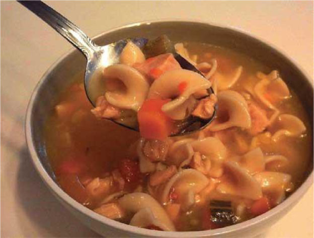
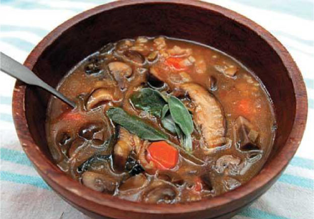
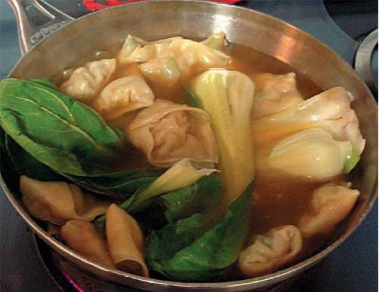
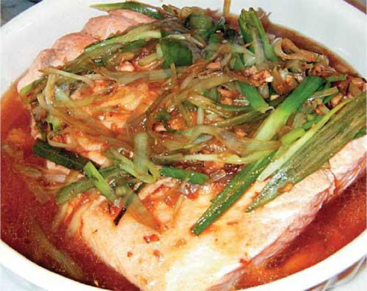
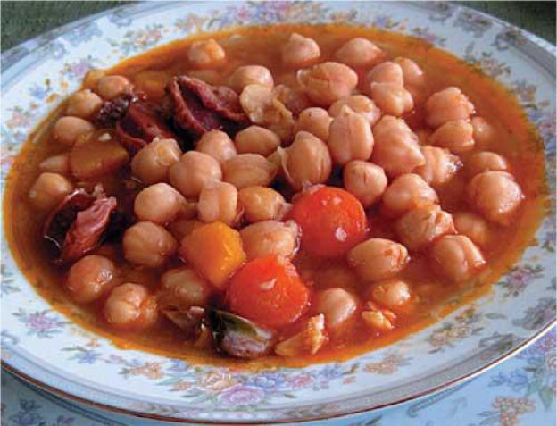
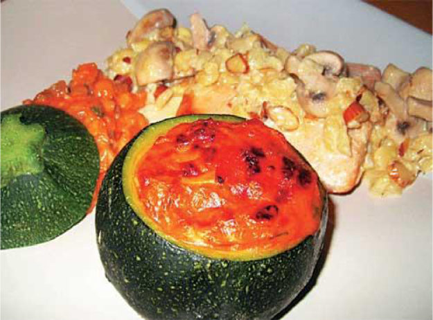
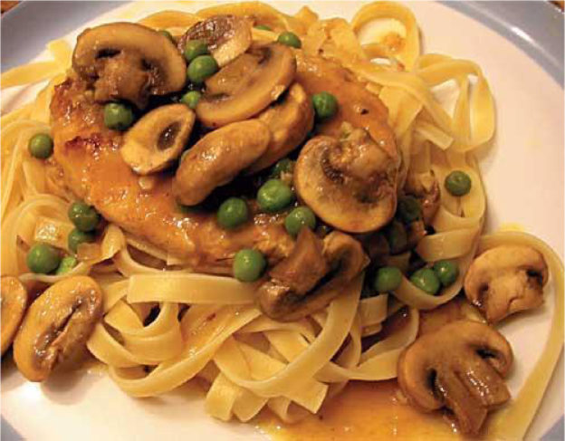
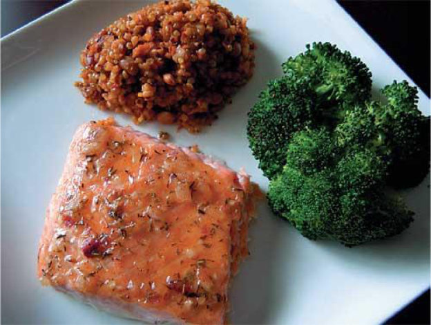
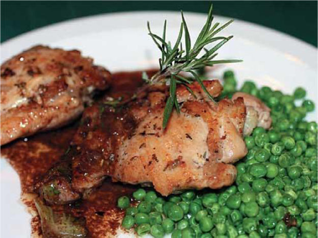
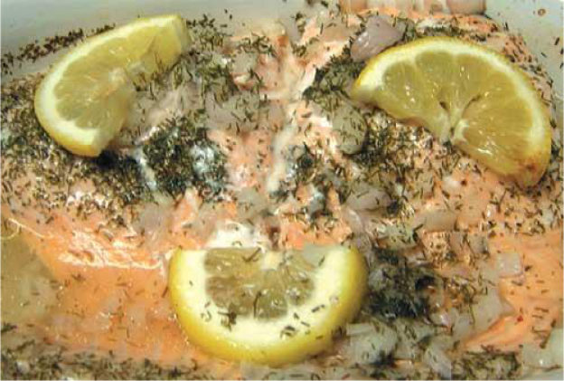
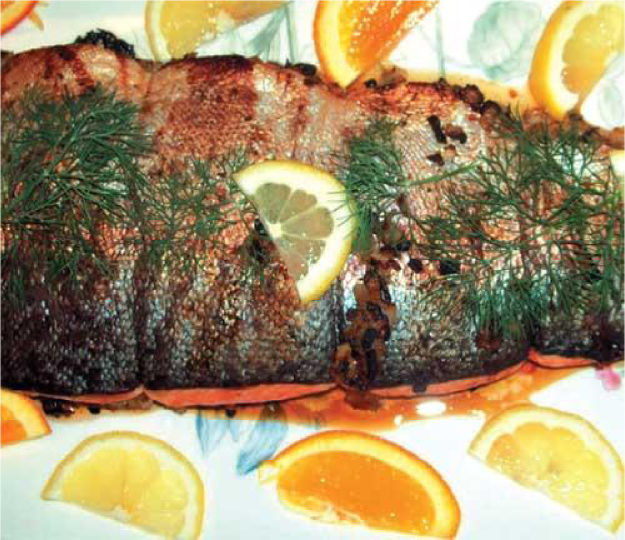
В данной книге собраны рецепты блюд, которые можно готовить в микроволновой печи. Горячие бутерброды и гамбургеры, вкусная выпечка, полезные супы, восхитительные вторые блюда и десерты – все это вы сможете приготовить буквально за несколько минут.
| Title Info | |
| Genre | home_cooking |
| Author | Дарья Владимировна Нестерова |
| Title | Блюда из микроволновки |
| Date | 2011 () |
| Language | ru |
| Document Info | |
| Author | [naulik] |
| Program used | ABBYY FineReader 11, FictionBook Editor Release 2.6.6 |
| Date | 2013 (2013-01-31) |
| Source OCR | ABBYY FineReader 11 |
| ID | 0E185F5D-062E-4B12-8CAD-48C5D608DF4A |
| Version | 1.0 |
| History | 1.0 создание и вычитка |
| Publisher Info | |
| Book name | Блюда из микроволновки |
| Publisher | РИПОЛ классик |
| Year | 2011 |
| ISBN | 978-5-386-03263-0 |